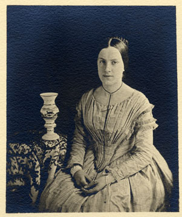
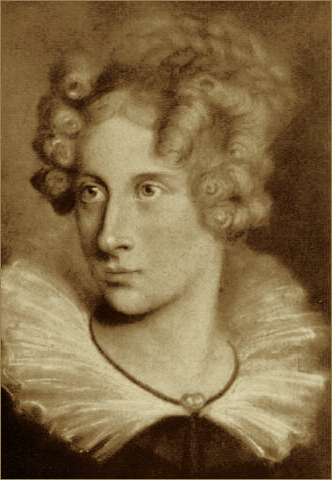

Inaugural Essay

Correspondence
WUTHERING.UK
P.O. Box 1302
Grand Marais, MN, 55604
USA
 January, 2024
January, 2024
But first something about the Dark Muse
 The Great Inland Sea: most conductive of the Dark Muse
The Great Inland Sea: most conductive of the Dark Muse
To begin
(Note: I began writing this in the Winter of 2024 and it is now High Summer; hence, my external references might shift as we go…)
Light snow drifts gently down from the low clouds draped over a misty boreal forest. Deer in their grey winter coats process along invisible boulevards through the fir and spruce. Ravens and crows dolefully croak and caw back and forth. And I burn a daytime candle. Such an ambience to convey my thoughts, my impressions and feelings about my Dark Muse.1 muse: Originally any of the nine sister goddesses in Greek mythology presiding over music, literature, and arts; or a state of deep thought or abstraction, e.g., to enter a muse over a poem; or a source of inspiration, e.g., Jane Austen is my muse.
Do you have an inexplicable fascination with things on the gloomy side? You often find dreamy what others find dreary … as when an overcast day brings on a strangely sanguine melancholy … or a stormy night is magnificent in a frightening and thrilling sort of way. Twilight is a welcome reprieve from the hectic, incessant day, freeing your senses, calming, deepening your thoughts. You’ve paused to gaze transfixed upon a lonely, nondescript landscape, a wild, deserted shore, an old, abandoned cemetery. Just like a decaying, overgrown, other-century structure makes you envious of the bats living there. Unnatural is having to get out of heat into air conditioning and suffer through smalltalk while drinking iced beverages; truer it seems to come inside out of the cold and sit by a fire in a deep, shared silence drinking hot tea. Time and again what they find uplifting is piteously trite out to ruefully disappointing for you. Panic and nausea well up when attempts are made at sunny-cheery; then being alone is a relief, not always lonely. What is spectacular to them is suspect and eventually disappointing to you … whereas things subtle, veiled, shadowy tenuous, and understated are intriguing. Stirrings, please, but not shaking or slamming. Their heroes grasp desperately at happy endings. Yours learn and grow from facing the grim and harsh—and if it means succumbing to the thrashing, amen, RIP,2 …e.g., Lady Dedlock’s death at the graveyard of her secret lover in Dickens’ Bleak House. c’est la vie, time for mourning black. Candlelight over artificial light, linen over nylon, old architecture over new, the genial disorder of wild nature over the forced containment of gardens. If in a city, you can’t stand anywhere but the oldest quarter and oldest park. And yes, it might seem a bit to ask, but wouldn’t it be grand if every month we celebrated Halloween?… If yes to any or all of this, you might understand what I’m trying to say here.
 Transfixed by an abandoned graveyard: octonimoes@DeviantArt
Transfixed by an abandoned graveyard: octonimoes@DeviantArt
Natural Dark, Brontëan style
I provide here a quote from Charlotte Brontë’s Jane Eyre: An Autobiography. Main protagonist Jane describes the house, called simply Moor House, and environs of her adoptive family, the Rivers, on the edge of the wild, presumably Yorkshire moors back during George III3 The word moor appears forty-three times in Jane Eyre. After the second or third use, I was just putty in Charlotte’s hands…
They loved their sequestered home. I, too, in the grey, small, antique structure, with its low roof, its latticed casements, its mouldering walls, its avenue of aged firs—all grown aslant under the stress of mountain winds; its garden, dark with yew and holly—and where no flowers but of the hardiest species would bloom—found a charm both potent and permanent. They clung to the purple moors behind and around their dwelling—to the hollow vale into which the pebbly bridle-path leading from their gate descended, and which wound between fern-banks first, and then amongst a few of the wildest little pasture-fields that ever bordered a wilderness of heath, or gave sustenance to a flock of grey moorland sheep, with their little mossy-faced lambs—they clung to this scene, I say, with a perfect enthusiasm of attachment. I could comprehend the feeling, and share both its strength and truth. I saw the fascination of the locality. I felt the consecration of its loneliness: my eye feasted on the outline of swell and sweep—on the wild colouring communicated to ridge and dell by moss, by heath-bell, by flower-sprinkled turf, by brilliant bracken, and mellow granite crag. These details were just to me what they were to them—so many pure and sweet sources of pleasure. The strong blast and the soft breeze; the rough and the halcyon day; the hours of sunrise and sunset; the moonlight and the clouded night, developed for me, in these regions, the same attraction as for them—wound round my faculties the same spell that entranced theirs.
… the consecration of its loneliness indeed.4 Here is what I might call an English Zen. More about EZ later. I often read this passage just to muse upon the wistful, moody, delicately melancholic intentionally anti-spectacular subtleties she describes—and how this and other choice moments set the whole tone and mood of the book. Charlotte Brontë establishes light and dark as equals, then to work expertly with the gradient there between. The dim, the shadows, the dark, the harsh, even at times merciless inclemencies are features not bugs. She does not suppress dark, perhaps knowing that if it were seen an equal to light it would eventually prove itself the older, wiser sibling capable of rich, complimentary contributions.
One notable gradient boon is how she has the Moor House environs so very abandoned, lonely, thus ultra-wild exactly because they are so unpresuming and overlooked, so bereft of anything nature-spectacular … as opposed to some breathtaking primordial wilderness millions of miles away visited only by intrepid explorers. Indeed, subtle and unassuming become the older, wiser siblings of grand and spectacular. Notable too how Jane arrived at Moor House—half dead from exposure on her hands and knees, thus, adding complete vulnerability to this sublime mix. And once recovered, she is still every bit the underdog—relative to us today in our modern nature-dominating developed world. This point is key to what I’ll say later…
Nature staged…
The second half of my childhood was in Tennessee, and my favourite place was the Great Smoky Mountains National Park high on the Appalachian Mountains border of Tennessee and North Carolina. The Smokies are a federally protected, quasi-pristine wilderness of 522,419 acres, surrounded by lesser-protected though still completely wilderness USDA National Forest lands adding another million or so acres. Statistics say the national park itself is the most-visited of all U.S. national parks with nearly fourteen million tourists per year,5 …more than double the next most popular, the Grand Canyon… with additional tourist attractions and accommodations all around the park boundaries. And what are these visitors doing? Only a small fraction are actually out on the park’s extensive wilderness trails hiking and camping. Most are either driving the main dissecting highway connecting Tennessee to North Carolina or simply crowding into the visitor centres per automobile. I once visited on the Fourth of July, stopping in the main tourist town Gatlinburg, Tennessee, where the sidewalks were standing-room-only; but later that same day I hiked for hours deep in the park on the main Appalachian Trail and saw not another human. Indeed. Strange as this may seem, I say Jane’s Yorkshire moorlands are real nature, while the Smokies are something else, simply because of the sheer abstraction, the artificiality of their purpose, not to mention their recognition, their publicity throughout the entire world.
The Smokies are fussed and ruled over by armies of scientists and bureaucrats at the behest of the U.S. Department of Interior National Park Service, UNESCO’s World Heritage Convention, the International Biosphere Programme, etc., like a great research terrarium under an invisible glass dome. Even in the remotest, genuinely wild spots many miles from any human disturbance, the weight of humanity’s lurking dominance, our collective mental presence is inescapably massive… And so we have the dichotomy of discovered and undiscovered, exotic versus vernacular, integrated versus detached, grounded versus transient, many versus no matches to googling. As the Rivers’ guest, Jane describes a natural and organic connection to her moorland, while no modern tourist can ever expect to be truly integrated with the Great Smoky Mountains National Park complex.6 Perhaps give the Smokies a second chance by reading the pre-park fictional work Christy by Catherine Marshall. She captures something that might be called Appalachian Gothic. Lots more on what nature really means to us later…
My Dark penchant
Continuing, I am at a loss to explain my dark penchant to those who do not, cannot, will not get it. Dark as I mean it is strictly a take-it-or-leave-it proposition; one gets Dark7 Allow me the poetic emphasis device of capitalising nouns. or one does not. Dark as I mean it was best presented and developed by certain poets of the early nineteenth-century Romantic Era,8 Quick preliminary, much more later: The term Romanticism followed a twisted path beginning with the Latin romant, or, “in the Roman manner”, thus, not at all our current use of the word as a synonym of love. In general, bundling what I’m trying to get at as Romanticism is fraught to say the least. Academe wants to grip butterflies, but when they open their hands there is only goo. Lots more on this problem as we go… an emergent property and a very special private corner of this ultimately maligned and misunderstood time. I do believe the Dark Muse is best expressed in poetry, and not so well in prose. I, as well as many others of yore, believe that lyrical poetry captures far more and drives far deeper than whatever can be lined up in book-length chains of prose sentences. For example, it is almost as if the poetess Emily Dickinson used words to mercilessly expose just how tenuous words really are. She routinely made words give up their ghosts just to swap in even more mysterious ghosts—again, something best done with poetry. We’ll explore some of her wicked flights into thoughts behind thoughts as we go. And so when we read Dickinson’s haiku-like lines, think of Zen koans for the Dark Muse.
My Dark Muse often comes on as a feeling behind feeling, subtle, profound, yet fleeting, not hanging around for much analysis or description. One very important principal, the German poet Novalis (penname for Baron Friedrich von Hardenberg), often used his unique fragment style to describe his Dark Muse. And so he abandoned even lyrical poetry to get even more bursty, more spontaneous to capture the subtleties of his dark impressions. Lots more about Novalis, the presumed founder of German Romanticism, as we go along. Dark stirrings arrive mostly unannounced, a veritable surprise. Dark is a gift. Thus, my exploration of Dark will rely heavily on the poetry of the preeminent Romantic Era champions of Dark Muse.
Adding an extra wagon to the modern goth train
Of course I have an affinity with and feel a kinship to the modern
goth subculture.9
…goth described here as well as anywhere.

And yet it is one of the elephants I must shift
a few inches from the centre of the room. In very short, I believe
modern goths surely sense Dark,10
By the way, the Germans capitalise nouns, i.e., built-in
poetic emphasis.
but for whatever reasons so
many of them only want to express it, explore it very narrowly through
goth music and fashion. My Dark Muse would hopefully include, be akin
to what is today called goth and gothic, but I must go deeper and
more elemental. If you are goth I hope you allow me to speak to your
“inner goth.”
I’ll start by saying there is a natural darkness provided by Nature, a basis upon which we may create symbols, artefacts, icons, trappings to emulate, decorate, magnify, socialise, humanise, if nothing else, bring indoors natural Dark. Yes to aesthetics as far as they may resonate, do honour to Dark. But too often our human take on Dark winds up overstated, overwrought—all the way out to grimy, ignoble, silly, scummy, stupid. We imbibe then express what we see, experience, feel; but I say it must be done carefully, if not respectfully. And so I must set aside so many of the overdone gothic horror fright memes, e.g., vampires, witches, demons; mean nasty menacing this, threatening evil that. Right up front: My Dark is not meant to shock or frighten, rather, invite, deepen, and enrich. My Dark Muse contains nothing cruel nor evil nor sinister nor satanic. As philosopher and psychologist John Vervaeke said in describing the modern crisis of anxiety and dysphoria, “Horror is the aesthetic of when you feel like you’re losing your grip on reality.” Thus, I might dip my toe in the lake of horror, as Alfred Hitchcock once said, but I needn’t dwell there too long. Mine is not the Star Wars “dark side,” not dark barbarism à la Heart of Darkness, and not the psychic dark described by Freud or Jung. I cringe when someone says, “…and then things took a dark turn.” In general
\begin{align*} \large{\text{Dark} \ne \text{negative}} \end{align*}
Again, campy, over-the-top gothic can be interesting, fun, but I’d
rather not lose sight of the source, however obscure and rare it may
be.11
Yes, MHGA: Make Halloween Great Again

I’m after something more subtle, discriminating,
inward-personal … perhaps like the small natural sweet of a wild
strawberry or raspberry versus the chemical sweet blast of saccharine
… natural rather than manufactured. Reemphasizing: My Dark is about
the sublime, indeed, sublimity. I will eventually deal with Edmund
Burke’s (as well as Bertrand Russell’s) false, “they don’t get it at
all” tedium on sublimity later. In the meantime, sublime is
basically what we may find beyond mere beauty, touching what
Dostoevsky is saying here
There are seconds, they only come five or six at a time, and you suddenly feel the presence of eternal harmony (POEH) fully achieved. It is nothing earthly; not that it is heavenly, but man cannot endure it in his earthly state. One must change physically or die. The feeling is clear and indisputable. As if you suddenly sense the whole of nature and suddenly say: yes, this is true. This is not tenderheartedness, but simply joy.
Awe instead of joy? Again, much more fleshing out as we go along…
And so I hearken back to a golden era when Dark was the cultural currency, to be sure, the early nineteenth century, a time when my key poets, my principals (e.g. Poe, Novalis, the Brontës) showed us how triste and Stygian can be so very subtle and sublime. And most important to goths, I’m after something I will not outgrow, rather, continue as my raison d’être sustaining me to my grave. I say there must be no “aging out of the scene” as I fear often happens with modern goth.12 Why do people age out of goth? A crude answer may be they just can’t kick the rebel chic can down the beach any longer … there, I said it… Rather, the Dark Muse should be a deepening and widening and transcendence for one’s entire life.
 Female Strigoi by HalloweenJack1960@DeviantArt
Female Strigoi by HalloweenJack1960@DeviantArt
No English retrenchment, please
Another ox gored is my rejection of modern dumbed-down American street English, which has permeated modern society virtually worldwide. Basically, I mean to sound more erudite, sophisticated, intellectual with my use of past-century British-tinged English. Why? Simply because the English used in the early-nineteenth century was like a thoroughbred race horse, sleek and powerful, capable of amazingly deep and magical expression. Contrast this with beggared, destitute, impoverished, needlessly retrenched modern American street English, which requires a buy-in to a particularly base, ignorant, crude and aggressive hipster Zeitgeist. Which I repudiate, not going there. Although I’m sure I’ll occasionally slip up.13 Retrenchment towards what, exactly? I’m reminded of Orwell’s 1984.
Back in the day, people could be more genteel, thoughtful, fine-spoken. Indeed, back when having character and honour, when showing decorum and graciousness was a way of life. As a result, their poetry could express the depths and heights of human thought and sensitivities so much better. Yes, their poetry … while so much of our modern poetry is screed doggerel. For example, Allen Ginsberg acclaimed Howl is really social-political pamphleteering in verse, not true poetry as it has been known for centuries. And from there things go downhill fast—into the most ridiculous absurdist nihilist nonsense. In past centuries they understood the human need for holiness, grandeur, the epic and eternal. I say all of this is necessary to fully grasp their exquisite take on the Dark Muse. Compare this with the crypto-rebel posers we see everywhere today who believe being coarse, crass, base, irreverent—and arrogantly in-your-face about it—is somehow progressive and desirable…
But then I might have finally succumbed to the influence of all those schoolmarms back in my distant 1950s-60s childhood who made us read all those old things such as Tennyson, Hawthorn, and Shakespeare. In my memories they were all nearing retirement Neo-Victorians who spoke exactly enunciated Transatlantic and held up “wordy,” other-century English as superior. Mrs Mugwortlawny was right, you know. And yes, I’ll occasionally drop in foreign things—Latin words and phrases, as well as my foreign language, it being German. You have been warned…
Dark like me?
Life would be empty, insipid, weak for me, every moment rudderless,
misspent, crushingly mundane without a strong and constant current of
the Dark Muse. It is as if nothing can be properly understood without
the dark perspective. And then I wonder, is this nature or nurture?
That is to say, are we innately so, or is this something
acculturated?14
…due perhaps to the Victorian shadow over my childhood?
I feel it is the former. One simply feels the
tug of Dark—regardless of any sort of prepping or grooming. But
let’s do another quick litmus test. I present here a short, simple
poem from my main darkness benefactress, the poetess who stands at the
centre of everything I mean to say about dark, namely, Emily Jane
Brontë15
Look here for a quick biography.

Fall, leaves, fall; die, flowers, away;
Lengthen night and shorten day;
Every leaf speaks bliss to me
Fluttering from the autumn tree.
I shall smile when wreaths of snow
Blossom where the rose should grow;
I shall sing when night’s decay
Ushers in a drearier day.
Here EB is direct, blunt even. But now we know how she feels. And she either speaks to something in you, or you are part of the majority who finds it—weird, abnormal, morbid, overwrought, puerile, even sick or evil. To be sure, my dark penchant gets mostly deer-in-headlights responses, if not outright hostility. The openly peeved see my dark druthers as morose, morbid, as wallowing in self-pity, seeking attention, dwelling on the negative—followed by a quick DSM–5 look-up.16 Diagnostic and Statistical Manual of Mental Disorders I beg to differ…
Here is something a bit lighter but the same basic idea from
Christina Rossetti 17
See here for a bio. She is considered by many Britain’s
most prolific poet.

Fade tender lily,
Fade O crimson rose,
Fade every flower
Sweetest flower that blows.
Go chilly Autumn,
Come O Winter cold;
Let the green things die away
Into common mould.
Birth follows hard on death,
Life on withering:
Hasten, we shall come the sooner
Back to pleasant Spring.
Rossetti is darkly fatalistic, though ending with hope bound in humble expectancy. I like to think these two English poetesses are expressing an informed, matured melancholy that bespeaks a deeper understanding of life—all because of their grasp of Dark.
And another poem, here Longfellow’s Snow-flakes from a collection published in 1863
Out of the bosom of the Air,
Out of the cloud-folds of her garments shaken,
Over the woodlands brown and bare,
Over the harvest-fields forsaken,
Silent, and soft, and slow
Descends the snow.
Even as our cloudy fancies take
Suddenly shape in some divine expression,
Even as the troubled heart doth make
In the white countenance confession,
The troubled sky reveals
The grief it feels.
This is the poem of the air,
Slowly in silent syllables recorded;
This is the secret of despair,
Long in its cloudy bosom hoarded,
Now whispered and revealed
To wood and field.
Here I see Longfellow18 Go here for a quick biography. HWL was not typically Dark, rather, a popular, “uplifting” poet with a big audience. That’s what makes this selection so unique for me. looking to the natural world and poetising, to be sure, darkly. The idea of poetising, the poetisation of nature and life was central to the Romantic Movement.19 Below, we will go over Romanticism poetising’s originator, Novalis. Much to say about poetising, Novalis, and Romanticism… It parallels the long-standing belief that we humans explain ourselves through, embed our lives in narratives.20 …more about storytelling below… And so agents, triggers of mental affliction and depression—despair, grief, misery—are transformed into more equanimous states of sadness and melancholy, hopefully bringing us to a higher emotional maturity. In some paradoxical way, nature and darkness eventually become healers … as if the initial agony and sorrow are a ravaging cancer or virus that may eventually fade into remission, but we can never entirely conquer, eliminate whilst on Earth, hence, a strange symbiosis must be struck… As I will endeavour to explain, being mortal was wholly different experience back then.
This poetising of Nature dark and mystical was the modus operandi of my select nineteenth-century poets. Rather than avoid, they sought out, embraced their Dark Muse, something we today in our brightly-lit, cordoned-off world usually think of as bad, wrong, even deranged. I contend we have lost this subtle art of moving hardship, tragedy, emotional crises into a stasis remission melancholy. Today, we vilify and wage a full-scale war against any and all melancholia with psychoanalysis and prescription psychopharmacology drugs. Thus, all too often we are failures at finding a modus vivendi21 modus vivendi: An arrangement or agreement allowing conflicting parties to coexist peacefully, either indefinitely or until a final settlement is reached, or (literally) a way of living. vis-à-vis the trials and tribulations of life as our ancestors once did. Fazit22 Fazit: n; in summary, all in all; from Latin it follows : When Dark is suppressed, we suffer a myriad of psychic maladies.
Suffering
Let’s hear from my other principal, Emily Elizabeth Dickinson23
See here for a quick biography.

After great pain, a formal feeling comes —
The Nerves sit ceremonious, like Tombs —
The stiff Heart questions ‘was it He, that bore,’
And ‘Yesterday, or Centuries before’?
The Feet, mechanical, go round —
A Wooden way
Of Ground, or Air, or Ought —
Regardless grown,
A Quartz contentment, like a stone —
This is the Hour of Lead —
Remembered, if outlived,
As Freezing persons, recollect the Snow —
First — Chill — then Stupor — then the letting go —
Emily Dickinson of mid-1800s Amherst, Massachusetts, relates human suffering in a severe and yet fatalistic grounded way. Again, all we may ever do is disperse the initially searing, inescapable pain to a dull, hopefully diluted ache in the ever-growing backdrop of time. As she said in a letter …but to all except anguish the mind soon adjusts. Though again I would say the subject of pain, suffering, and loss was better conducted in the past than today. How, why? Because they did not attempt to contain, disguise, systematise, or process greif; rather, greif was faced directly, pain was shared, empathy a way of communal life. And so emotional space was allotted, support was shared, organic, and natural. Strikingly different from today was their acceptance of doom24 Doom as unforeseen consequences of previous actions, which in turn, entropically snowball into indebtedness, tragedy, and ruin; typically multi-generational, a punishment that never seems to fit the original crime—if it was a crime at all. One German word for doom is Untergang, which also means downfall. and fate, two concepts antithetical to our dynamic, positivist, self-determining, fix/paper-over-everything-quickly modern ways … which inevitably led to faith in God and acceptance of His will.
Consider Queen Victoria25
Queen Victoria in mourning black ca. 1862.

who wore mourning black from the time
of her husband Prince Albert’s death in 1861 till the end of her life
in 1901. Likewise, Amélie of Leuchtenberg who upon losing her husband
Pedro I of Brazil in 1834, wore mourning black until her death
in 1873. In those days death was properly, officially mourned. No one
chivvied mourners along with their grief and sadness. Contrast this
with today’s all-too-prevalent disassociation, the confused emotional
shutdown, the disorganised quasi-denial and suppression we moderns too
often show towards death26
Is there anything worse than the so-called five stages of
grief or the Kübler-Ross model? Grief as an emotional malfunction
to be systematically reduced, fixed, corrected? Alas.
. For the early nineteenth century,
poetising life’s train of tragedy was depression deconstruction as a
life skill. The slings and arrows of human existence found conjunction
with Nature, Dark, and Faith through poetry, thereby
highlighting, elevating, ennobling our uniquely human experience on
Earth, casting a gossamer of sublimity over our natural existence
like no other generation before or since. Theirs was the deepest
exploration of our true humanness that I know, and, thus, something I
must pursue and showcase here.
But why Dark?
But still, why Dark? Because Dark speaks to me. But again, how, why? Lack of a clear and simple answer forces me into a regrettably wordier one? I might say Dark remains mysterious—no matter how many different angles from which I try to express it. Dark is something instinctual, cathartic, evocative, centring for me. Dark is more than the lack of light. Dark can lead the imagination to riot. The moss, lichens, and mushrooms in the secretive shadows of the forest incite so much more than the spectacular sunny vista across the forest valley. Let’s give spectacular a rest…
The fresh-cut rose elicits a simple response, but the faded rose another—deeper, but for me never “depressing”. Here is something from my novel Emily of Wolkeld 27 I’ll discuss bit about my novel as we go…
The new cut rose: Initially beautiful, thereafter dried and desiccated, lost forever its initial delicate beauty and fragrance. Once affording a glimpse of perfection, only reminiscent thereafter. Beauty always some fleeting illusion or madness? Moreover its eclipse, joining, leading the shadows of our relentless doom, our march to the grave. And though I live in this momentary brilliance, I still search my night shore; for until now I have known only of beauty’s haunting rumour, of love’s promise, those slightest quickenings of things necessarily rare and formerly peripheral. Yes, in this moment I may have some of love’s bliss, of roses’ beauty, but I know I shall cherish with a larger, more mature heart the memories thereof, echoes sent down life’s long, clouded memory hall as true and lasting blessings.
Yes, there might have been a nod of approval back in the day…
Let’s see another example of Dark get-it-or-don’t, this time another poem from Emily Dickinson, her There’s a certain slant of light28 In the third line, Heft means weight, heaviness; importance, influence; or (archaic) the greater part or bulk of something.
There’s a certain Slant of light,
Winter Afternoons —
That oppresses, like the Heft
Of Cathedral Tunes —
Heavenly Hurt, it gives us —
We can find no scar,
But internal difference —
Where the Meanings, are —
None may teach it – Any —
’Tis the seal Despair —
An imperial affliction
Sent us of the Air —
When it comes, the Landscape listens —
Shadows – hold their breath —
When it goes, ’tis like the Distance
On the look of Death —
Let that sink in for a while… The last line includes Death capitalised.29 Dickinson freely employed the capitalising of nouns for poetic emphasis. Again, I must emphasise how these nineteenth-century artists approached human mortality much differently than we do today. Unfortunately, this past-century view of Death has become opaque, lost. I hope to rediscover it. I’ll start by positing their understanding of Death was integral to their understanding of Nature…
Pre-modern Nature and Death
The main points being:
- True nature is the myriad cycles birth, growth, deterioration, and death happening constantly everywhere, full stop, nothing else…
- …ergo, nature is not a place, no indoors versus outdoors, rather, a state of being, existence itself…
- …ergo, no degrees of nature, rather, nature constant ubiquitous…
- …ergo, death is an integral part of true nature.
- The increasingly extra-natural, quasi-immortal modern human
- Romantic Era poets’ direct exposure to real Nature versus our aloofness, estrangement from nature as separate and spatial.
I hold that our modern, twenty-first-century understanding of nature is very different than Nature of early-nineteenth-century poets such as William and Dorothy Wordsworth, or the Haworth and Amherst Emilies.30 My shorthand for Emily Brontë and Emily Dickinson is based on their earthly abodes—Haworth, West Yorkshire, for the former and Amherst, Massachusetts, for the latter. Alone the fact that our typical indoor living environments today are more like modular, sealed space stations plopped down on a hostile alien planet compared to the simpler, more primitive structures of the not-so-distant past… Quite literally, the Brontës’ Haworth parsonage, built in 1778 out of local stone and wood and clay, had more in common with human shelters from one, two thousand years previous than with our modern suburban homes only some two hundred years later.
Tadao Ando Museum art by Celestin0@DeviantArtHence,
in just the past two to three hundred years a very steep, vertical gradient or differential has grown between indoors and outdoors.
This, in turn, has brought us to see nature more as a place separate and outside, cut off, away from our artificial, high-tech, controlled and regulated modern indoor spaces31 Is it not ironic how nearly all lifeforms that attempt to share our human environments uninvited are considered invasive, noxious vermin, pests to which we have developed almost hysterical revulsion? … which, in turn, has lead us to rate outdoors nature on continua of relative wildness and remoteness from our sealed-off, self-contained, humans-only environments. Indeed…
 Homespun and one of its sources. Original art from Steve-Lease (DeviantArt.com)
Homespun and one of its sources. Original art from Steve-Lease (DeviantArt.com)
Even as late as my own childhood the term homespun was in use to indicate a poor, unsophisticated person, a country bumkin, a hick from the sticks. The term referred to a person’s clothing being homemade from locally-sourced, hand-spun and woven materials such as linen and wool rather than factory-made retail clothing. The early-nineteenth century Brontëan West Yorkshire would have seen the majority of the villagers in homespun, all but a few garments not hand-tailored bespoke.32 However cotton was rapidly becoming a global commodity, both cotton and wool fabrics eventually being produced in steam-powered factories as the Industrial Age reached its inflexion point of growth. And of course food was entirely from local production. Hence, a person’s daily resources were overwhelmingly local, a small bit perhaps coming from a nearby market town, while only the most exotic items (e.g., a clock, a fine musical instrument) would have come from farther away. Today, however, this supply pyramid is completely flipped, as nearly everything comes from far (far!) away (e.g. China), while only a few personal items would be from a local or even regional source.33 In any modern (non-organic Amazon Whole Foods-style) supermarket I’m sure less that 1% of the food items come from a truly local source. Nearly everything is shipped in from often far afar. And so in Brontëan times (first half of the 1800s) the surrounding land was agriculturally domesticated, a working partner, so to say. Contrast this with today’s urban-suburban populations hardly ever in contact with farmers or their farms. Nor do we know anything about where our clothing came from. Today, “the land,” as our immediate provider, has been completely abstracted into concepts such as ecosystem and biosphere, which imply we are now removed observers controlling nature as if it were just another of our mechanical objects.
No doubt we have always made a distinction between being inside a shelter and going outside into the so-called elements. But starting some six to ten thousand years ago we began to give up aboriginal nomadic life and its direct daily contact with said untamed, uncontrolled elements in order to establish permanent city-states supported by mass monoculture agriculture. And so indoor environments in ever-expanding urban centres became increasingly physically removed, walled off from the wild natural world, becoming evermore self-contained, all-encompassing, self-referencing, thus, recursively derivative.34 …e.g., what is a flower garden but a derivative, a mock-up of an original place out in the wilds, albeit with the pretty bits super-amplified idealised, the not-so-pleasant bits left, weeded out?
Along with this growing separation came mentalities, narratives, collective mental worlds or “mindspaces” increasingly urban-based thus uniquely extra-natural.35 How often is a Shakespeare character out communing with nature? Never?… Being so completely indoors meant we no longer were in direct contact with the aboriginal animist nature spirits all around; instead, praying to an extra-natural, off-world monotheistic God in architecturally showcase churches.36 Churches were typically built in the centre of a town or city on the highest ground. I once heard that to this day no building in Vienna may be built taller than the tower of St. Stephen’s Cathedral. Western architecture seemed to reach a fantastical aesthetic crescendo in the Victorian nineteenth century with dark, dense, dramatic Neo-Gothic as a leading style. Indeed, seemingly all nineteenth century styles were some manner of nostalgic revivalist (Greek, Gothic, Italianate, Elizabethan, Queen Anne, etc.), perhaps hearkening back to times more integrated with nature, i.e., shallower gradients between indoors and outdoors. This coincided with an exponential growth in urban population having just passed an inflection point. Today the steepness of our indoor-outdoor gradient has accelerated even more resulting in a humanity more extra-natural than ever, billions of people in a permanently abstract social-psychological space. How then may we, a species seemingly capable of great adaptability, objectively measure our separation from nature?
But then what exactly is human adaptability? I posit there are two sorts of adaptability
- permanent thus beneficial alteration, or
- temporary adjustment, i.e., an allowance for less-that-optimal conditions, supposing an eventual return to optimal conditions.
We humans, I contend, are the second type of adaptable. And this means we are not truly adaptable at all, rather, only capable of making temporary adjustments to bad conditions. We are certainly no barometer species or “canary in the coal mine” of our own well-being. In fact we routinely ignore our fellow canary-like humans, allowing them to suffer and die, their life examples unheeded. What has domestic, urban, indoor living done to our brains, our sense of belonging to the planet, to one another? How can we even begin to trace back up the many rabbit hole bifurcations, the chain of derivatives we’ve taken for all these centuries down and out and away from nature pure? To be sure, we have demonstrated a collective will to make conditions better for ourselves and for us alone. We even accept our dominion over, abstraction away, separation from nature as fate, as destiny. After all, our population doubling in less than fifty years to eight billion37 Human population grew 60% between 1800 and 1900, and 275% between 1900 and 2000. says something to our intention, our ability to dominate. And we seem to have adapted our collective human psyche, our narratives to this separation.38 Modern human narratives come at us as thousands upon thousands of fictional novels, films, plays, while aboriginal peoples had myth and legends timeless and unchanging. That alone… But is this sustainable? All doomsday spinnings aside, many of us today have grown concerned over the question of sustainability, concerned about our long arc of estrangement from nature.39 Is our relatively gradual separation from nature not a perfect example of the boiling frog metaphor? Let me start by suggesting a completely different understanding of nature, namely
Nature is not a place inside or outside of our human spaces, rather, nature is everything going on everywhere. Nature is the myriad cycles of birth, growth, deterioration, and death happening everywhere all the time.
I contend the Brontës, as well as other Romantic Era poets, knew, or at least sensed this pre-modern meaning of nature as beyond inside or outside. Yes, one went outside, out into the elements. But once back indoors, a Brontë sister was not so completely out of and above nature’s touch, influence, doom as we now fancy ourselves. Again, the cycles of birth, growth, deterioration, and especially death were happening everywhere sans emplacement. Consider how the Industrial Revolution created urban production landscapes vast and barren and so completely devoid of any sort of nature, spatial or otherwise—indeed, William Blake’s “satanic mills.” Here is what German philosopher Ludwig Klages in the late-1800s said
The face of the land has become a landscape of coerced “Chicago-ifications” as humanity has fallen into an orgy of destruction without precedence. So-called civilization wears the face of an unleashed murderer, while the fullness, the bounty of the earth has withered from his poisonous breath.
And an equally hard-hitter from Günter Grass
We already have the statistics for the future: the growth percentages of pollution, overpopulation, desertification. The future is already in place.
This was a change on a scale never before seen, a huge and relatively sudden step away from the physical world being solely the purveyance of nature. And so even when the individual left the confines of an indoor space he was still deep within a massive concentration of extra-natural, human-exclusive structures and activity. Peasant life in the pre-industrial rural landscape was all but idyllic compared the grueling, grinding poverty of the industrial cityscapes.40 What became of Wordsworth’s To a Highland Girl shepherdess when she and her family were forced into an industrial urban slum? We can only hope she and her kin are in a better place now…
Here is an excerpt from Emily Brontë’s Shall earth no more inspire thee where Mother Nature speaks directly to the wayward human
…
Thy mind is ever moving
In regions dark to thee;
Recall its useless roving—
Come back and dwell with me.
…
I can’t read this poem without having a very emotional response. Indeed, the house of mirrors echo chamber that modern life has become precludes any reality. And so the choice is simple: We can go back to nature or continue our useless roving, which can only lead to evermore alienation—from real Nature, as well as from each other.
To be sure, so much ominous and doomsdayish has been said about mass society in this modern industrialised world—all pointing to the increasingly obvious fact that our vaunted adaptation skills are being stretched to the breaking point, dysphoria increasing as a total ecological collapse approaches.
And again Emily Brontë, her epic The night is darkening round me41 …which we will explore again below…
The night is darkening round me,
The wild winds coldly blow;
But a tyrant spell has bound me,
And I cannot, cannot go.
The giant trees are bending
Their bare boughs weighed with snow;
The storm is fast descending,
And yet I cannot go.
Clouds beyond clouds above me,
Wastes beyond wastes below;
But nothing drear can move me;
I will not, cannot go.
This the heart of my Dark. Yes, she is outdoors “facing the elements,” as we say. She even refers to the wilds as “wastes” and as “drear.”42 In those days wild, untouched places were often referred to as wastelands. And yet she is transfixed, frozen to the spot—and I cannot, cannot go, as she says. Subjective terms like wastes and drear refer to the age-old attitudes towards nature as a terrible, grim, inescapable master, a sponsor of disaster and death, hardly over which to linger, let alone wax poetic. But Romantic Era poets did just that, and to be sure, grandeur and sublimity expressed in lines of verse was the surprising result. Haworth Emily stopped, turned around, and stared directly at an enemy previously known as all-powerful and unforgiving, and in so doing she sensed something deep and personally transformative. She was stirred to write lines that, for me at least, are the very centre of the mystery of Life, Death, and the Dark Muse.
Now, contrast Brontëan Nature with Ernest Hemingway’s twentieth-century nature. Hemingway and his contemporaries rambled hither and yon, all over the globe trying to find the ultimate nature experience. He shut down his emotions and senses and attempted to dominate, forcing his will upon nature to prove his worthiness as a man.
Sadly, this was all just theatre. If anything serious had happened to him he could have been airlifted out to receive modern medical care. Not the Romantic Era poets, however, who were in harm’s way with no timeouts, no escape. Would Hemingway have done all those macho-man things if there had been no modern world with modern medical aid just a plane ride away? Haworth Emily lived in a time when nothing was modern, i.e., her West Yorkshire moorlands were semi-wilderness, and early eighteenth-century medicine had no understanding of germs.43 What is generally acknowledged as a clear breakthrough was John Snow’s tracing of the London cholera outbreak of 1854 back to certain London neighborhood public wells. This was strong proof of the contagion theory. However, it wasn’t until the late nineteenth century that Robert Koch and Louis Pasteur established the field of bacteriology and our modern scientific understanding of microscopic pathogens finally developed. Literally, a cut on a toe could become infected, resulting in death in those times. Thus, nature for a Brontë sister was not a contest, a show, nor a game.
With nature as countless cycles of birth, growth, deterioration, and death going on all around us, the last two components, deterioration and death, must be understood beyond our mechanistic reductionist modern take of just physical malfunction.44 Couple this mechanistic “death as malfunction” with atheist nihilism to arrive at today’s soulless mechanical universe realism dumpster fire. Back in the day, death was a force majeure—but no longer thanks to modern medicine! It’s almost as if deterioration and death, two of nature’s supposedly inescapable realities, have been cordoned off—or at least placed under much greater human control than ever before. It’s as if through modern medicine we have begun to acquire a demi-godlike, proto-immortal veto power over physical demise. And with this control we have torn down, dismantled a great component of spirituality, namely the reckoning of one’s mortality with a deity, with an afterlife. Where once was supposed a mortal, physical plane inferior an immortal spiritual plane, we now would believe only the physical plane to be relevant. And with this comes a great psychic and spiritual impoverishment, the extent of which we cannot fully know.45 Probably the biggest proponent of the futuristic, sci-fi trans-human is Ray Kurzweil, who has just published The Singularity is Nearer; When We Merge with AI. You will never read such delusionary, wacko nonsense in your life! As physicist Wolfgang Pauli once criticised a colleague, This is so bad it isn’t even wrong!
Life is Death we’re lengthy at
Death the hinge to Life
—Emily Dickinson
Though for the meantime death remains an undeniable certainty. Death comes as it always has—from old age, fatal accident, or deadly physical aggression or predation.46 For critters, predators are other bigger critters. For humans, predators are—outside of war and homicidal aggression—all but exclusively bacteria and viruses. But a completely different attitude arises when modern healthcare’s labyrinth of diagnoses, drugs, procedures and surgeries routinely thwart what was once all but certain, if not swift demise. And so we’ve begun to lessen the mystery of Death, overturn fate, consequence, and doom. We’ve become lengthier at life, oiled and oiled the hinge…
The days of our years are threescore years and ten; and if by reason of strength they be fourscore years, yet is their strength labour and sorrow; for it is soon cut off, and we fly away.
— Psalm 90:10
This is surely the old-fashioned take on death and its finalistic, absolute inevitability so resounding as to constantly shake and echo through life. Death as life’s backstop, container, timer, combinator, shaper, reaper.47 Consider this quite tolerable goth version of the classic rock song. Had this been written in Brontëan times, it would have been no cheap, sentimental gimmickry. And so I say, as Death is interrupted, so are the greater human cycles of emotion and spirituality interrupted … meaning if Death is also adjustable, as Emily Dickinson said it wasn’t, then we’ve slashed at the very fabric of reality.
Indeed, what if we start to take command of Death’s appointment book, rerouting, rescheduling Death’s comings and goings? Psalm 90:10 is making the point that by no means are we guaranteed seventy or eighty years of life, and even if we get them they might not be that great. And yet we have grown to expect from the implicit promises of modern medical science a healthy, high-quality seventy, eighty, ninety, or even more years. Again, modern medicine has disrupted the two last components of a nature ubiquitously cyclic, i.e., deterioration and death, thereby further collapsing our understanding of what true Nature is. Modern science has lessened the wallop of tragedy, weakened overall the doominess of doom by redefining life as just so much carbon-based machine circuitry, a mechanism that, in turn, is to be better and better repaired, maintained, improved against entropic wear-and-tear.48 Consider the now commonplace heart pacemaker, a device that literally overrides the human heart with artificial electronic pulses. Also, hip and knee replacements are now routine.
Allow me to relate a modern story touching on our new attitude towards death. My father, who has since passed away, lost his third wife to lung cancer caused inevitably by decades of her smoking.49 Ironically, both of his previous wives had likewise died from smoking-related illnesses. But instead of accepting this, he became angry and accused her doctors of malpractice, threatening lawsuits. Nothing came of this, but I wondered why such an irrational outburst? I eventually theorised that from all the buzz surrounding the various possible medical interventions—including their probabilities of success or failure—he began to expect the death sentence of lung cancer could, should be beaten by some technology lurking in some corner of the modern medical labyrinth. Death was not the long-anticipated reunion with the Creator, rather, enmity and recriminations over the failure of scientific procedures and medications. Alas…
Back in the day, no one would have second-guessed Death’s arrival to such an absurd degree. Human life was like a boat with shallow gunwales, the waves of Death expected to lap over at any time. But today the fourscore years spoken of in Psalms has become an implicitly guaranteed minimum. Old age and death are increasingly spoken of as “diseases” we can and should defeat. Death as a nuisance, indeed. My father felt cheated when that three-, fourscore and more was not forthcoming for his wife. But as you may anticipate, I contend life is truly life only with Death—Death absolute and not easily pushed back, much less obviated.
A sickly Anne Brontë50
Anne Brontë’s grave in Scarborough

on her final dying trip to Scarborough in
1849 made a stop in York where she insisted on seeing the York
Minster. Upon gazing up at the great cathedral she said, “If finite
power can do this…” But then she was overcome with emotion and fell
silent. Anne was in a deep and personal death mindset of utter and
complete humility and reverence. Perhaps watch this on Anne’s last
days in Scarborough.
 Haworth, West Yorkshire, graveyard
Haworth, West Yorkshire, graveyard
In my novel Emily of Wolkeld, which I will eventually discuss, one character says yes to the question of whether she would go back to Brontëan times in a time machine. Her friend then asks, But what if you faced a fifty-fifty chance of dying from a now curable, fixable condition? She replies, I would trust my life, and trust my death. Indeed, my father did not trust his wife’s death.
Teenaged(!) Dickinson’s cemetery visit
Allow me to insert a passage from a letter Emily Dickinson wrote to
her friend Abiah Root in 1846 when she was only sixteen years of
age. She describes a visit to Boston and the first true American
cemetery, Mount Auburn.51
Abiah Root (Strong), Amherst Emily’s childhood friend

Have you ever been to Mount Auburn? If not, you can form but slight conception of this “City of the Dead.” It seems as if nature had formed this spot with a distinct idea in view of its being a resting-place for her children, where, wearied and disappointed, they might stretch themselves beneath the spreading cypress, and close their eyes “calmly as to a night’s repose, or flower’s at set of sun.”
…teenager Amherst Emily feeling the Dark Muse. Here is one of her many poems about Death
The distance that the dead have gone
Does not at first appear —
Their coming back seems possible
For many an ardent year.
And then, that we have followed them,
We more than half suspect,
So intimate have we become
With their dear retrospect.
…and probably Haworth Emily’s most moving elegiac lines about (one of) her deceased sister(s), her Song
The linnet in the rocky dells,
The moor-lark in the air
The bee among the heather bells
That hide my lady fair:
The wild deer browse above her breast;
The wild birds raise their brood;
And they her smiles of love caressed
Have left her solitude!
I ween that, when the grave’s dark wall
Did first her form retain,
They thought their hearts could ne’er recall
The light of joy again.
They thought the tide of grief would flow
Unchecked through future years;
But where is all their anguish now,
And where are all their tears?
Well, let them fight for honor’s breath,
Or pleasure’s shade pursue—
The dweller in the land of death
Is changed and careless too.
And, if their eyes should watch and weep
Till sorrow’s source were dry,
She would not, in her tranquil sleep,
Return a single sigh!
Blow, west-wind, by the lonely mound,
And murmur, summer-streams—
There is no need of other sound
To soothe my lady’s dreams.
Indeed…
Night and Death according to Novalis
The world must be romanticised. In this way we will find again its primal meaning. Romanticising is nothing but raising to a higher power in a qualitative sense. In this process the lower Self becomes identified with a better Self … When I give a lofty meaning to the commonplace, a mysterious prestige to the usual, the dignity of the unknown to the known, an aura of infinity to the finite, then I am romanticising. For the higher, the unknown, the mystical, the infinite, the process is reversed—these are—expressed in terms of their logarithms by such a connection—they are–reduced to familiar terms.
This is an oft-cited quote from52 …the third volume, Fragmente, of Novalis: Werke, Briefe, Dokumente; Verlag Lambert Schneider; 1957. the German nobleman George Philipp Friedrich Freiherr (Baron) von Hardenberg (1772—1801), pen name Novalis, who is considered to be the original muse of the German Romantic Movement … paralleling similar ideals and sentiments in Britain,53 Coleridge and Wordsworth’s Lyrical Ballads, first edition appearing in 1798. which quickly spread throughout the English-speaking diaspora and the West in general. Specifically, his prose-poem cycle Hymns to the Night 54 Started ca. 1797, finally published in 1800. The German Hymnen (plural of Hymne) means “praising songs” (Lobgesang). Allow me the abbreviation HttN from here on. Try this George MacDonald translation as found in a publication from 1897. electrified people around him, initially a gathering of German salon intellectuals in Jena, Thuringia, Germany.55 …referred to as the Jena Set by Andrea Wulf in her Magnificent Rebels, The First Romantics and the Invention of the Self by Andrea Wulf; 2022; Vintage Books. More about this flawed account in a section below. These thinkers rallied around Novalis, whom they adopted as a sort of naïf mascot, building on HttN and Novalis’ poetising, another term he used for the romanticising of life. Indeed, what came to be known as Jena Romanticism56 See the Wikipedia explanation of Romanticism or German Romanticism … but with a grain of salt. As I repeat throughout, one of the main objectives of WutheringUK is to wrest Romanticism and especially Dark away from the ivory tower humanities technocrats. spread to eager circles and fertile grounds throughout the West. They raised Novalis’ idealisations of Poesie 57 The German Poesie is typically translated as simply poetry; however, poetry as a concept beyond just the literary art, more towards the older poesy perhaps. And of course Novalis and the Jena Set expanded even further… as an all-embracing paradigm to counter the cold, dehumanising, thus desensitising implications of Enlightenment Age rationalism and determinism, as well as the stultifying formalisms of Classicism. Novalis sounded the charge to re-sensitise the human being. More on this later…
Alas, but here is where I become quite the iconoclast, primarily by insisting academe has Romanticism wrong! 58 Again, I will go into how Romanticism is an ivory tower fata morgana in detail soon. Even Novalis’ supporters, his Jena contemporaries, yes, even Novalis himself seemed to lose the thread and march about spouting dessicated intellectualisations.59 If you must, read this about Novalis, which is as good as any. But as academe is wont to do, it hangs on every word uttered and written by a young man feeling his way along in his twenties. This approach may work with Bohr and Einstein, but not a twenty-something poet… I posit that Novalis with his foundational HttN took off like a sleepwalker towards the Dark Muse. However, Romanticism, as subsequently cooked up by “experts” during and after, became a bloated, overanalysed, theory-bound, cart-before-the-horse disaster. Or I will simply say German Romanticism began true but veered off into the ditch—all while Wordsworthian English Romanticism never really emphasised Dark with much intention, except for Coleridge’s gothic borrowings from the eighteenth century.60 Lots more on eighteenth-century English Gothic below.
I contend my principal poets were a spiritual and cultural force majeure, like a huge river broken into multiple braided channels across a broad landscape with little to say about it other than it was wet. And so my whole point with WutheriingUK is to urge you to simply read, sigh, reflect—repeat and not follow any of the scholarly technocrats down their musty rabbit holes where the spirit of it all suffocates. Of course this may seem naive context-free amateurish of me, but the alternative is winding up lost and clueless as I believe the vast majority of Romanticism scholars are. Academe Romanticism is truly the blind leading the blind. Duly warned, let’s get into HttN…
Reading HttN one cannot escape the sheer intensity of Novalis’ swoon-fest over Night and Death. Here is a small taste
I feel the flow of
Death’s youth-giving flood;
To balsam and æther, it
Changes my blood!
I live all the daytime
In faith and in might:
And in holy rapture
I die every night.
and just before came
What delight, what pleasure offers thy life, to outweigh the transports of Death? Wears not everything that inspirits us the livery of the Night? Thy mother, it is she brings thee forth, and to her thou owest all thy glory.
It my opinion HttN is one of the densest, purest, most direct
attesting to the Dark Muse ever.61
And yet HttN wasn’t entirely new after all. Soon will be
discussed similar offerings from the previous eighteenth century.
As the legend tells, his
inspiration came from being grief-stricken at the death of his
fifteen-year-old fiancée Sophie von Kühn,62
Sophie von Kühn

to whose grave he
made a pilgrimage for one hundred nights. The Jena Set writer Ludwig
Tieck described the teenage Sophie
Even as a child, she gave an impression which—because it was so gracious and spiritually lovely—we must call super-earthly or heavenly, while through this radiant and almost transparent countenance of hers we would be struck with the fear that it was too tender and delicately woven for this life, that it was death or immortality which looked at us so penetratingly from those shining eyes; and only too often a rapid withering motion turned our fear into an actual reality.
Indeed, Sophie was the mascot of the mascot, an angelic being of singular feminine mystique inspiring great feelings and words.63 We’ll dive into Edgar Allan Poe’s very similar idealisations in what is possibly his most popular poem Annabel Lee below. And it was her death that threw Novalis into a state of mind which in turn produced the catalyst for so many others. But as I contend HttN was not just the gymnastics of flipping the sacred to profane and profane to sacred as Novalis himself described romanticising poetising. He journeyed into Night and came back with some of the most compelling Dark ever. But immediately thereafter yawned open a great abyss between producers and describer-promoters, i.e., Novalis’ friends who became Jena Romanticists. We’ll explore why so many of Novalis’ contemporaries and nearly all of his researchers did not get his Dark.
John Keats’ sense of Beauty
Samuel Taylor Coleridge is generally accepted as the leading intellectualiser of British Romanticism, its inception roughly parallel to the Jena Romantic liftoff. Following is a Coleridge quote as good as any
…first, that two forces should be conceived which counteract each other by their essential nature; not only not in consequence of the accidental direction of each, but as prior to all direction, nay, as the primary forces from which the conditions of all possible directions are derivative and deducible: secondly, that these forces should be assumed to be both alike infinite, both alike indestructible… this one power with its two inherent indestructible yet counteracting forces, and the results or generations to which their inter-penetration gives existence, in the living principle and the process of our own self-consciousness.
Indeed, such wordy intellectualisations are the usual fodder seized upon by latter-day academes whipping up copy. Yes, Coleridge and Wordsworth’s Lyrical Ballads is considered the cornerstone of English Romanticism with its extensive poetising of Nature. But as I say, these men do not seem to know the Dark Muse.
Now, let us consider what English poet John Keats said years later in a 1817 letter to his brothers George and Thomas
…I mean Negative Capability, that is, when a man is capable of being in uncertainties, mysteries, doubts, without any irritable reaching after fact and reason—Coleridge, for instance, would let go by a fine isolated verisimilitude caught from the Penetralium of mystery, from being incapable of remaining content with half-knowledge. This pursued through volumes would perhaps take us no further than this, that with a great poet the sense of Beauty overcomes every other consideration, or rather obliterates all consideration.
Keats repudiates hard and fast ideas, neatly and logically circumscribed, battling it out for supremacy. Intellectualisations, great and lengthy, especially of the “Penetralium64 penetralium: (plural penetralia) the innermost (or most secret) part of a building; an inner sanctum; a sanctum sanctorum. of mystery,” are just so much verisimilar65 verisimilar: having the appearance of truth. ramblings to him. Indeed, to not immediately intellectualise, but to hold oneself in that maddeningly counter-intuitive state of unresolved—just to see where it might lead—is Keats’ great insight. Feelings and impressions and what-ifs must be gently, carefully raised up out of the mental ruckus. To be sure, Negative Capability is about cognitive dissonance as a great and necessary burden the poet must carry, a mental control technique key towards deeper insights and understanding. And so the poet must fly beyond the neat and tidy piles of logical-seeming words to reach a deeper place. Keats went on to to obviate the sterility of academic intellectualisms with his simple ode to Beauty. Here is the famed beginning of his “poetic romance” Endymion
A thing of beauty is a joy for ever:
Its loveliness increases; it will never
Pass into nothingness; but still will keep
A bower quiet for us, and a sleep
Full of sweet dreams, and health, and quiet breathing.
Therefore, on every morrow, are we wreathing
A flowery band to bind us to the earth,
Spite of despondence, of the inhuman dearth
Of noble natures, of the gloomy days,
Of all the unhealthy and o’er-darkened ways
Made for our searching: yes, in spite of all,
Some shape of beauty moves away the pall
From our dark spirits. Such the sun, the moon,
Trees old and young, sprouting a shady boon
For simple sheep; and such are daffodils
With the green world they live in; and clear rills
That for themselves a cooling covert make
’Gainst the hot season; the mid forest brake,
Rich with a sprinkling of fair musk-rose blooms:
And such too is the grandeur of the dooms
We have imagined for the mighty dead;
All lovely tales that we have heard or read:
An endless fountain of immortal drink,
Pouring unto us from the heaven’s brink.
Take that Coleridge, you babbling, brachial braincase! Again, read, sigh, reflect—repeat. Let this sink in, dear reader.
In the 2009 film Bright Star, a touching verisimilar bio-drama about Keats, there is a scene where, speaking to his love interest Fanny Brawne, he says
A poet is not at all poetical. In fact, he the most unpoetical thing in existence. He has no identity. He is continually filling some other body—the sun, the moon… Poetic craft is a carcass, a sham. If poetry does not come as naturally as leaves to a tree then it had better not come at all.
And then Fanny says, I still don’t know how to work out a poem. To which Keats says66 Here is the scene from Bright Star.
A poem needs understanding through the senses. The point of diving in a lake is not immediately to swim to the shore but to be in the lake, to luxuriate in the sensation of water. You do not work the lake out. It is an experience beyond thought. Poetry soothes and emboldens the soul to accept mystery.
And thus, I would posit he, like I two centuries later, did not see Romanticism as something needs bundling and explaining and stuck with labels and herded into categories. The point of hearing birdsong is not to think about male birds warding off other males while trying to appeal to females, but to luxuriate in the wonderful chorus of nature. Time and time again I listen to or read a description of Romanticism and come away feeling the scholar, the author understood nothing, rather, is simply stringing disparate bits and bobs together towards some verisimilitude of a penetralia they don’t really get or understand. And so I say the intellectual prison in which academe has stuck Romanticism should be opened up, the guards soundly switched and run off, the prisoners let back out into the wide fields and deep woods. And so I’ll soon be thrashing the guards more thoroughly below…
Thriving versus surviving; top dog versus underdog
In his book The Genius of Instinct 67 The Genius of Instinct; Reclaim Mother Nature’s Tools for Enhancing Your Health, Happiness, Family, and Work by Hendrie Weisinger; 2009; Pearson Education, Inc. author and psychologist Hendrie Weisinger insists we are hard-wired by nature to seek out the best conditions in order to thrive, that any life other than one of maximal thriving is time and energy wasted. He uses the example of bats, which, according to research, have been observed to seek out human buildings, preferring them over natural homes such as rock outcrops, hollow trees, or caves. And in so doing, they enjoy advantages such as better body temperature regulation, lower infant mortality, less threat of predation. This may be true, but wait, haven’t these bats jumped outside of the original constraints where they once were completely integrated with nature? These advantaged bats are now in a state of trans-bat-ism. But is this good for nature as a whole? In effect, the bats have short-circuited their doom, their fate. Again, what are the real long-term consequences?
Perhaps bats doing better is not too much of an imbalance vis-a-vis the rest of their competitors and surrounding environment.68 Here in woodsy Minnesota we haven’t noticed a shortage of mosquitoes, one of bats’ primary food sources. But what happens when a species keeps thriving more and more, increasing its success statistics, stepping over, beyond any of the natural restrictions that total integration and harmony with nature would have required? Aren’t we humans Exhibit A of just such an out-of-control species? And so I ask, how can all this so-called thriving be good, end well? How can a dominant species like ours—which always seems to be “gaming the system,” evermore ingeniously and aggressively extra-natural—not eventually have to pay some price? Simply put, How can more and more people consuming more and more resources and energy, each of us fantasising about success and prosperity, not result in an eventual overshoot disaster?
Nature seems to have two and only two models: A) steady-state niche/stasis and B) exponential, dynamic growth. And whenever a species is not restricted to its tightly integrated niche, then exponential growth ensues—which eventually must hit an inflexion point and take off dramatically and uncontrollably towards an inevitable overshoot and crash.
I bring this up because, to my mind, Emily Brontë was just this sort of hard-pressed little bat out in the wilds—colony-less, huddled in a hollow tree, barely eking out a marginal life. Here is her Plead for me
Why I have persevered to shun
The common paths that others run;
And on a strange road journeyed on
Heedless alike of Wealth and Power—
Of Glory’s wreath and Pleasure’s flower.
These once indeed seemed Beings divine,
And they perchance heard vows of mine
And saw my offerings on their shrine—
But, careless gifts are seldom prized,
And mine were worthily despised;
My Darling Pain that wounds and sears
And wrings a blessing out from tears
By deadening me to real cares;
And yet, a king—though prudence well
Have taught thy subject to rebel.
And am I wrong to worship where
Faith cannot doubt nor Hope despair,
Since my own soul can grant my prayer?
Speak, God of Visions, plead for me
And tell why I have chosen thee!
No, Emily was not “living her best life.” I consider this her ode to skipping the unnatural trans-human thrive scene of her day and striking out into some Beyond to commune with her God of Visions. Again, I must believe she was a little bat fluttering across the semi-wilderness moorland, a true existential underdog definitely not living her best life, a quasi-equal of all the other underdog wild critters, as was still possible back then.
Compare this with today’s outdoor adventurer who, clad in his technical gear from REI, Patagonia, North Face, drives to government set-aside wilds such as the Smokies mentioned above in a four-wheel-drive Jeep Cherokee, consumes protein bars and electrolyte drinks, listens to appropriate New Age music with earbuds, takes smart phone pictures and GoPro videos. Any mishaps? Call for immediate helicopter rescue on the iPhone satellite connection… At some point we’re just amateur Earth astronauts, no? When nature is truly in balance, all participants are underdogs to some degree. But we modern humans have demanded and gained all but total dominance over nature.
Emily Brontë died of anorexia-induced malnutrition, contaminated water, tuberculosis—pick one, two, or all three—five months after her thirtieth birthday. She only saw the greater world outside of her tiny Haworth village and its surrounding hills for a few months.69 …a stay in Belgium to learn French and a short-lived gig in nearby Halifax as a governess. As I said above, hers was a world containing nothing modern as we know it, e.g., a simple cut could lead to an infection requiring amputation, or even worse.
And yet somehow it may seem counterintuitive to say her existence in early nineteen century West Yorkshire was as wild and rugged as, say, remote wilderness in today’s Canada, the Rockies, or the Amazon Basin. Was she still not observing nature from civilization’s relative place of safety, thereby rendering her observations just as tainted, just as removed and relative as ours today? I say no. Clearly our modern place of distance and safety is so many orders of magnitude greater than hers, as we of the twenty-first century float above cruel nature on unprecedented levels of high technology materialism. Consider how we consume upwards of one hundred times the resources and energy per capita as did one of our European ancestors from 1800.70 …and the bigger the dance floor, the crazier the dancing. More about resource liberalism translates into social liberalism later. I contend hers was a unique vantage point, neither too exposed nor removed from elemental nature.
Still, I’m often confronted with modern scoffers who believe Romantic Era poets only knew nature from picnics held at country estates where dandies and their pampered ladies were attended by servants, as seen, e.g., in Hollywood film versions of Jane Austen71 There is nothing really otherworldly Dark or Romanticist as I know it about Jane Austen, sadly. She was seemingly devoid, non-pursuant of Dostoyevski’s POEH. Although she once did say, “Pictures of perfection, as you know, make me sick and wicked.” (Letter to her niece Fanny Knight, 23 March 1817.)
 Emma picnic in the harrowing, savage wilds of Surrey, England
Emma picnic in the harrowing, savage wilds of Surrey, England
Again, for us moderns nature is a place, a location away from and diametrically opposite our modern space-station-like interior spaces. Nature picks up somewhere “outdoors,” past our suburbs and out behind our ag-factory farmlands, eventually becoming the Great Outdoors. Basically, the farther afield from modern civilization we can go, the truer and more authentic nature supposedly becomes. And so we create a nature continuum whereby a trackless wilderness as far from civilization as possible is the truest nature, while hardly nature at all would be that weedy ditch behind a triple-paned windowed, vinyl-siding-clad, forced-air-HVAC suburban house. Nature can only be very wild, thus, very far away from the safety of our space-colony civilization. But let me again be blunt: We do not get more nature simply because we have gone like explorer astronauts way farther out from our sterile, artificial exclusively human home base. Nature is not something close or remote.
It is precisely because we have spoiled so much of our proximate places that we elevate far-afield wilderness to a practically sacred, quasi-off-planet status. Writers like Ernest Hemingway and Jack London exploit fright memes in describing distant, exotic, hostile places like the Yukon and Africa … again, virtually identical to science fiction stories of strange, hostile, dangerous, alien planets conquered by brave, intrepid astronauts.
And so I insist my poets of the so-called Romantic Era were not pampered dandies with their fine ladies strolling for a few bored minutes on manicured estate grounds. Nor were they “white privilege” beneficiaries of the “Age of Exploration” colonialism. My poets were mainly short-lived little bats in their crevasses and corners, as hard-pressed as any bats have ever been.
Eighteenth-century British Dark
As alluded above, the world was seeing Dark decades before Novalis and German Romanticism, specifically eighteenth-century Britain and what might be called its gothic movement starting off with the doom-and-gloom Graveyard School of poetry. After Graveyard, just past mid-century, came the gothic novel with an obviously formulaic doom-and-gloom. But then came what might be called the Night School, which became the basis of my dark corner of Romanticism.
The Graveyard School
It was only a few decades into the eighteenth century when there
emerged in Britain a style of poetry which has since been named the
Graveyard School. As I do with Novalis and his HttN, I can’t help
but believe these English Graveyarders were more sleepwalkers than any
sort of intentional movement leaders. My Exhibit A of Graveyard is
Edward Young’s epic-length The Complaint: or, Night-Thoughts on Life,
Death, & Immortality (or simply Night-Thoughts,
ca. 1742-1745).72
From my 1853 copy

Bursting with a grandiosity only poetry can
reach, Young relentlessly spins out darkness and doom. To be sure, he
is Dark with a shudder, full of fright memes meant to weigh down and
ultimately defeat—if taken seriously. A quick taste
"When the cock crew, he wept”—smote by that eye
Which looks on me, on all: that Power, who bids
This midnight sentinel, with clarion shrill
(Emblem of that which shall awake the dead),
Rouse souls from slumber, into thoughts of heaven.
Shall I too weep? Where then is fortitude?
And, fortitude abandon’d, where is man?
I know the terms on which he sees the light;
He that is born, is listed; life is war;
Eternal war with woe. Who bears it best,
Deserves it least…
…indeed, unrelenting doom and woe. Typical of Graveyard School, there is no hope, no escape, just the weight of an assumed curse (ultimately original sin?), then processions of lamentation to cliff edges and fated tumbling thereoff. Reading further
Art, brainless Art! our furious charioteer…
…Drives headlong towards the precipice of death;
Death, most our dread; death thus more dreadful made:
Oh, what a riddle of absurdity!
or
From short (as usual) and disturb’d repose,
I wake: how happy they, who wake no more!
Yet that were vain, if dreams infest the grave.
I wake, emerging from a sea of dreams
Tumultuous; where my wreck’d desponding thought
From wave to wave of fancied misery
At random drove…
Of course every student of the Dark Muse should read Young’s Night-thoughts. And yet this over-the-top doom hyperbole will eventually deliver even the most indulgent reader to incredulity. Dare I say at some point it becomes farce.73 YMMV. Personally, I like a good doom-and-gloom session, and Young really delivers with Night Thoughts. Later we’ll go into Emily Brontë’s take on doom-and-gloom and her more measured Christian perspective.
Though Graveyard had a more contemplative, measured side. For example, Thomas Gray’s Elegy Written in a Country Churchyard (1751) treats us more respectfully. To be sure, eulogising the dead is a much older and well established genre, typically emphasising the qualities of the deceased over the dark, eternal abyss his grave might represent. If we are not meant to survive Young’s pounding, Gray’s elegy of a lost friend is Dark and fatalist and yet reverent and faithful
Large was his bounty, and his soul sincere,
Heav’n did a recompense as largely send:
He gave to Mis’ry all he had, a tear,
He gain’d from Heav’n (’twas all he wish’d) a friend.
With Gray whatever woefulness, doom may be swirling about, God in his heavenly domain still has our backs. In short, Gray will not beat us down as much as did the hardcore Graveyard Schoolers.
Whence this proto-Dark? Was it simply in the air? As I insist about the Dark Muse in general, Graveyard arrived unexpectedly, a natural, organic upwelling—however heavy and oppressive its expression. Which begs the question, What rises to cultural and intellectual prominence in an age?74 …that is, in a past age not exposed to the science of modern public relations. See this about Edward Bernays and the birth of modern advertising and public relations. TL;DR: Since Bernays, no “movement” in our modern times can be considered natural and organic, rather, the result of somebody’s financed public relations campaign. To be sure, many of that era condemned gothic and Graveyard as unworthy subculture. But eventually came a refinement, which I might call the Night School. Though intervening was the gothic novel, which we will now investigate.75 …but the Germans were not idle during this time, either. I should also mention Gottfried August Bürger’s very popular and often translated into English epic poem Lenore from 1774.
The arrival of the gothic novel
Prose versus poetry. In the past poetry was seen by members of polite society as the higher, the acceptable form of literature. For example, Germany has long been referred to as the land of poets and thinkers.76 Das Land der Dichter und Denker. Intentionally absent was novelists. Although now novelists count as part of die Belletristik, i.e., schöngeistige Literatur or aesthetic literature. Prose in the form of the novel,77 Two terms, novel (English) and roman (French, German, etc. from the adjectival Roman, Roman-like) came to describe any long-form prose story-telling. on the other hand, was not acceptable, seen as too revealing invasive personal, i.e., it is improper, unseemly, distasteful to expose even an imaginary person’s life details in such an open and revealing fashion. Thus, according to this attitude, it was a crude thing to so freely fantasise human goings-on in a fictitious way. Rather, literature must ennoble the human as a being created in the likeness of God, and so let us not dwell on his mundanity and failings. After all, a novel was neither factual (e.g. a saint’s hagiography) nor high lyrical poetic (e.g., church hymn lyrics or Heldenlieder). A novel/roman was simply too plain-spoken, i.e., the unavoidable clarity of straight descriptive writing invariably generated an undesirable ordinariness. And so it was in this mise en scène that the prose novel bumped along post-Medieval Age as a tolerated, sometimes useful corruption of writing, a regrettable parallel to poetry, consumed mainly as was said by easily excited arriviste vulgarian middle-class women. But then as the middle class grew in power and numbers, the novel came to the fore, especially in the eighteenth century.78 Ironically, the Novella, a long short-story format with no chapter breaks, was better tolerated in Germany.
Modern academe considers the novel The Castle of Otranto, A Gothic
Story, appearing in its first edition in 1764, to be the official
start of British gothic literature.79
One giveaway is gothic in the title. Perhaps read this
overview of Gothic fiction.
Written by the excentric,
iconoclastic English nobleman Horace Walpole (1717 – 1797), Otranto
is a melodrama set in sixteenth-century Naples offering slumming
readers of the day a big dose of darkness, doom, and woe. Walpole’s
penchant for medievalism rode the long-simmering nostalgic
idealisation of the Medieval Age80
Walpole initially claimed Otranto to be a medieval
manuscript he had discovered and translated, when all along it had
been his own creation.
, while the adjective gothic
referred to medieval Gothic architecture … although this is ironic
since the actual label Gothic had been used pejoratively in the
Renaissance alluding to the destructive barbarian Goths, i.e., Gothic
architecture was crude and barbaric. Gothic “horror” was an instant
hit, and other writers and influencers quickly joined in creating a
full-on gothic literature movement.81
A model woebegone gothic novel heroine (from El Mundo
ilustrado; 1879).

Above is an etching from a publication of Sir Walter Scott’s The Bride of Lammermore (1819). Consider the sheer visual density and heaviness of the scene (click on the image to be taken to a larger version). Whence, wherefore this heaviness, this portent? Predominant is Nature being Dark in an inhospitable, threatening way. The human-built castle is primitive, isolated, and vulnerable, the riders miniscule, exposed … as though every single living cell—plant, animal, human—is clinging to life by a thread, and any dim green and blue hues of vegetation and sea are wholly irrelevant. The scene evokes danger, dysphoria, as if surely something horrific is just waiting to transpire. But again how, why? Why such darkness and what was (and still is) the appeal? Hitchcock tautologies aside, modern academe has offered theories about the socio-political-psychological landscape of the times, and yet these experts only sound supercilious and patronising from their modern triumphalist perches, as if they are searching for a disease to explain a malady, weakness to explain indulgence. No, indeed, Dark, even when crude and heavy, predominates, arrests, mystifies, the appeal all the stronger for its recessive, ungraspable spherical symmetry. To be sure, this “coming out” of gothic in the eighteenth century was overwrought, indulgent with its fright memes, but undeniably popular and onto something real about the inner human experience—at least to the Western world of those times.
The popularity of the gothic novel continued throughout the nineteenth and into the twentieth century primarily in the romance genre—after the term romance had evolved to mean love.82 See this sorting out. Among others, Frances Parkinson Keyes (1885 – 1970) was a popular romance author who often wrote from a gothic perspective. Dragonwyck (1946) is a prime example of Hollywood83 Once asked why his horror films were so popular, Alfred Hitchcock said the man on the street likes to occasionally dip his toe in the lake of horror. does gothic romance.
Received gothic
Novelist Ann Radcliffe (1764 - 1823) could be said to be the first to gain respectability for gothic fiction. Upper-middle-class and spanning the proto-Romantic late-eighteenth century and the full-on Romantic Era, she forged a broad readership in the risen middle class for her moral and otherwise high-brow treatment of gothic gloom-and-doom. Again, a certain shade of Dark beyond cheap fright devices was evolving and Radcliffe was a part of it.
The three most popular novels written by the Brontë sisters---Jane Eyre by Charlotte, Wuthering Heights by Emily, and The Tenant of Wildfell Hall by Anne—would be considered gothic, and therefore, at least according to my logic, flawed vis-à-vis Dark. Though by the time of their publication and subsequent fame, gothic prose had shaken off its lightweight and déclassé image. Hence, class and taste were no longer the problem, rather, expression. But as I insist, prose attempting Dark cannot help but land hard and miss the subtleties and power of poetry.84 My former wife, a Jane Austen fan, read Wuthering Heights and advised me to skip it. I always trusted her literary advice and, thus, have never read it.
The night, the stars, the moon…
As personal and original as I want Novalis’ Hymns to the Night to have been, I must present Englishwoman Anna Lætitia Barbauld’s A Summer Evening’s Meditation (ASEM) as the same sort of solemn praising of the Night, but already having appeared in 1773.
Without more investigation I have no real idea if Barbauld’s ASEM, weighing in at one hundred and twenty-four lines, started what I’m calling the Night School, but as a working theory, yes, she offered eighteenth-century Britain a new perspective on Dark with an accessibility and maturity not really seen in Graveyard and certainly not gothic horror. As a sort of prompt she nods to Young’s Night-thoughts with the quote, One sun by day, by night ten thousand shine, then launches directly into her summer night and its canopy of stars
Tis past! The sultry tyrant of the south
Has spent his short-liv’d rage; more grateful hours
Move silent on; the skies no more repel
The dazzled sight, but with mild maiden beams
Of temper’d light, invite the cherish’d eye
To wander o’er their sphere; where hung aloft
Dian’s bright crescent, like a silver bow
New strung in heaven, lifts high its beamy horns
Impatient for the night, and seems to push
Her brother down the sky. Fair Venus shines
E’en in the eye of day; with sweetest beam
Propitious shines, and shakes a trembling flood
Of soften’d radiance from her dewy locks.
The shadows spread apace; while meeken’d Eve
Her cheek yet warm with blushes, slow retires
Thro’ the Hesperian gardens of the west,
And shuts the gates of day. ’Tis now the hour
When Contemplation, from her sunless haunts,
No woe, no doom-and-gloom; instead, a relentless parade of visceral and natural Dark hyperconductivity. Barbauld hauls us outdoors to partake, imbibe, behold the Night like never before. We are not swimming in doom, rather, we are touched, moved to reflect in reverence…
…But are they silent all? or is there not
A tongue in every star that talks with man,
And wooes him to be wife; nor wooes in vain:
This dead of midnight is the noon of thought,
And wisdom mounts her zenith with the stars.
At this still hour the self-collected soul
Turns inward, and beholds a stranger there
Of high descent, and more than mortal rank;
An embryo God; a spark of fire divine,
Which must burn on for ages, when the sun,
(Fair transitory creature of a day!)
Has clos’d his golden eye, and wrap’d in shades
Forgets his wonted journey thro’ the east.
Night over day. Night a more expansive, passive, more nuanced interim inviting deeper, more mature human introspection. Far distant, cool and gentle are the myriad stars of a summer’s eve, unlike our single oversized and often ruinous local star of day. And here is some of my own doggerel called From a Grandniece To Her Great-aunt At Her Great-uncle’s Funeral
You see, dear Auntie,
Day is all supposes,
Night but only a few.
Night quietly closes
Day’s great to-do.
Lost on the Day,
I wait for deepest Night,
for Darkness and I must
Decline clamant Light.
I should say this is my kind of Dark, i.e., free of any campy scare tactics—fun as they may be. Most assuredly every protégé of the Dark Muse must read Barbauld’s masterpiece. Hers is an exposition of natural darkness, placing it far above the reproach of gothic horror detractors. Though ASEM was as far as I can tell a singleton, a unicorn whose influence seemed to lay dormant for decades.85 …although Wordsworth would later mention Barbauld and ASEM as inspirational. One Barbauld biographer mentioned a trend of that time of ladies studying astronomy. But obviously Barbauld is waxing Dark, not just idealising celestial bodies. Perusing her other poems, yes, she often dwells on nature, sometimes in a dusky way, but addressing Dark as she did with ASEM doesn’t come forth again, nor from others during her times. Today she is known as an influential social commentator, moralist, and educator, but not as proto-Romanticism. And so I must jump ahead some fifty years and bring in Brontëan poetry as a continuation of this Night School thread. Haworth Emily’s Stars is just one her many examples of Night School from someone who probably had never read nor heard of Barbauld’s ASEM. Exactly like Barbauld, in Stars Haworth Emily lauds the night and its starry sky
Thought followed thought, star followed star
Through boundless regions, on;
While one sweet influence, near and far,
Thrilled through, and proved us one!
Why did the morning dawn to break
So great, so pure, a spell;
And scorch with fire the tranquil cheek,
Where your cool radiance fell?
The untrammelled night sky’s depth and expanse over the trammels of life during supposedly freeing and everything bursting forth sunlight, indeed. And so the last two stanzas
Oh, stars, and dreams, and gentle night;
Oh, night and stars, return!
And hide me from the hostile light
That does not warm, but burn;
That drains the blood of suffering men;
Drinks tears, instead of dew;
Let me sleep through his blinding reign,
And only wake with you!
Night School redeems Dark by pulling it out of the ostentatiousness, the gimmickry of Graveyard and gothic. Probably started by Barbauld (until I may find evidence to the contrary), it was independently embraced by others. Let’s look at sister Anne Brontë’s Night
I love the silent hour of night,
For blissful dreams may then arise,
Revealing to my charmed sight
What may not bless my waking eyes.
And then a voice may meet my ear,
That death has silenced long ago;
And hope and rapture may appear
Instead of solitude and woe.
Cold in the grave for years has lain
The form it was my bliss to see;
And only dreams can bring again,
The darling of my heart to me.
Simpler, more measured was Anne’s poetry than her sister’s. And she includes the grave by eulogising either of her older sisters Maria or Elizabeth, or her mother, but again, sans drama. And this calmer, more introspective Dark kept quietly maturing throughout the nineteenth century.
But let us not forget the many poems devoted to the moon. Here is Anne Brontë’s Fluctuations
What though the Sun had left my sky;
To save me from despair
The blessed Moon arose on high,
And shone serenely there.
I watched her, with a tearful gaze,
Rise slowly o’er the hill,
While through the dim horizon’s haze
Her light gleamed faint and chill.
I thought such wan and lifeless beams
Could ne’er my heart repay
For the bright sun’s most transient gleams
That cheered me through the day:
But, as above that mist’s control
She rose, and brighter shone,
I felt her light upon my soul;
But now—that light is gone!
Thick vapours snatched her from my sight,
And I was darkling left,
All in the cold and gloomy night,
Of light and hope bereft:
Until, methought, a little star
Shone forth with trembling ray,
To cheer me with its light afar—
But that, too, passed away.
Anon, an earthly meteor blazed
The gloomy darkness through;
I smiled, yet trembled while I gazed—
But that soon vanished too!
And darker, drearier fell the night
Upon my spirit then;—
But what is that faint struggling light?
Is it the Moon again?
Kind Heaven! increase that silvery gleam
And bid these clouds depart,
And let her soft celestial beam
Restore my fainting heart!
Here we may imagine the youngest Brontë bowed if not weighed down by her earthly afflictions, cares, deprivations; but then in this lean, hungry, susceptible state she is caught in an emotional whirling, carried, borne up by the natural nighttime procession of sun to moon and stars. She speaks of her tearful gaze, her fainting heart, her spirits, her emotional exposure. She is a vulnerable ward of nature, but tenaciously pursuant of its subtleties. Indeed, back then it was always subtleties, delicate qualities found in Nature by the vulnerable if not pathetic human, an exacting counting of seemingly modest blessings which then gained them a sublime ascendency.
If I wasn’t pledged to Emily, I might say Anne has an even finer take on Dark than her older sister. I might dare to say Anne’s Christianity is more conventional, whereas Emily with her obvious thought-behind-thoughts mental state took a starker, more fatalist view of God. Anne humble, Emily defiant perhaps; nevertheless, the Dark Muse absolutely owned by these Brontës!
William Wordsworth was nearly always about Nature, as were his foundational Romanticist ideals. In his A Night Thought (published 1837) he clearly intersects with Night School
Lo! where the Moon along the sky
Sails with her happy destiny;
Oft is she hid from mortal eye
Or dimly seen,
But when the clouds asunder fly
How bright her mien!
Far different we—a froward race,
Thousands though rich in Fortune’s grace
With cherished sullenness of pace
Their way pursue,
Ingrates who wear a smileless face
The whole year through.
If kindred humours e’er would make
My spirit droop for drooping’s sake,
From Fancy following in thy wake,
Bright ship of heaven!
A counter impulse let me take
And be forgiven.
Moon and Night would simply be another aspect of didactic Nature, though he does allude to the more mature subtlety brought by the darkness. He has wandered into Night School in his To the Moon, here the second stanza
The aspiring Mountains and the winding Streams,
Empress of Night! are gladdened by thy beams;
A look of thine the wilderness pervades,
And penetrates the forest’s inmost shades;
Thou, chequering peaceably the minster’s gloom,
Guid’st the pale Mourner to the lost one’s tomb;
Canst reach the Prisoner—to his grated cell
Welcome, though silent and intangible!—
And lives there one, of all that come and go
On the great waters toiling to and fro,
One, who has watched thee at some quiet hour
Enthroned aloft in undisputed power,
Or crossed by vapoury streaks and clouds that move
Catching the lustre they in part reprove—
Nor sometimes felt a fitness in thy sway
To call up thoughts that shun the glare of day,
And make the serious happier than the gay?
If I previously alluded Wordsworth concentrated on Nature over Dark, with these choice few lines he completely owns the Dark Muse, indeed.
Allow me to mention another Night Schooler, namely, the Swiss poet Gottfried Keller. Again, he is even later by some three or four decades than the Brontës or Wordsworth. Here is his Winternacht or Winter Night
Not a wingbeat went through the world;
silent and brilliant lay the white snow.
Not a puff of cloud hung in the starry canopy,
no wave surged in the torpid lake.
From the depths climbed a lake-tree,
to its crown encased in ice;
and upon its branches climbed the water nymph,
gazing up through the green ice.
There I stood upon the thin glass
that separated me from the black depths;
Close beneath my feet I saw
her white beauty, limb for limb.
With smothered sorrow she groped
here and there on the hard barrier.
Never will I will forget her dark expression;
always, always, shall it remain in my mind!
One of my favourites, I have always wondered what the protagonist did with the rest of his life. Did he return to the lake to try and find his water nymph; or did he resign himself to his mortal and mundane life? In any event, the mystery and allure of a forest in deep winter night is undeniable. Such magic and mystery obviously could not have occurred in daylight. Like Edgar Allan Poe’s The Raven, which we will discuss below, there is a melancholy over a loss that deepens and ultimately enriches.
And so with Night School first there is Nature dark, then human reflection upon that natural Dark; indeed, recitations of the world in darkness give subtle rise to the finest, keenest insights and feelings.
Romanticism
If a group of people enter a restaurant together the maître d’ will probably assume they are a party and want a single table. This is a good analogy to what has happened to my Dark principals over the years. I certainly have a lot to say about what has come to be known as Romanticism,86 The Jena Set’s Friedrich Schlegel first used romantic in contrast to classic to describe what they in Jena were supposedly starting. But it wasn’t until the 1820s when the term Romanticism became widely known and used—evermore randomly… as it is the catch-all term meant to make my principals sit at the same table and seem good company.
By now the reader knows I want my principals to have come by their sublime poetry “as naturally as leaves come to a tree,” as the film Bright Star’s Keats said. I insist my visionaries were just that, timeless and visionary. Yes, they might have had much in common, obviously a time frame, but I cannot abide with reducing them to puppets dangling on strings connected, owing to proto-this or precursor-that on some academe’s assembly line.87 A quote from M.H. Abrams’ laborious The Mirror and the Lamp would insist … even an aesthetic philosophy so abstract and seemingly academic as that of Kant can be shown to have modified the work of poets. Really? I doubt the Brontë sisters read much Kant. But then Abrams never mentions the Brontës… Of course my principals were of their times, and yet outliers, outsiders, unicorns, not for lumping together or lining up on a labelled shelf. Worse, I also insist their actual lives give little solid insight into their gifts. And yet we have this most unnatural box, this clammy container created by both contemporaries of the day, then subsequent generations of experts to hold, control, own, to jail my greats, this thing they call Romanticism. And so I say again, gripping butterflies squashes them.
Conjuring up influences is bread-and-butter Romantic Era academics. One hot mess is the BBC’s series on Romanticism88 Peruse on YouTube under The Romantics: Liberty, Nature, Eternity at your peril. hosted by English historian Peter Ackroyd. And then severe, left-brained Bertrand Russell in his The History of Western Philosophy mangles away at Romanticism in his consummate pedantic way. These are Exhibit A-1 and A-2 of people who don’t get it but must sound important erudite.
Feelings, emotions, innocence, nature … anything else?
So many proofs of “Abstract Topological Romanticism” begin with this set of axiomatic equations89 Notably absent is Romanticism = Dark…
\begin{align*} \large{\text{Romanticism}} &= \large{\text{feelings}}, \\ \large{\text{Romanticism}} &= \large{\text{emotions}}, \\ \large{\text{Romanticism}} &= \large{\text{innocence}}, \\ \large{\text{Romanticism}} &= \large{\text{nature}} \end{align*}for to build theorems whereby Romanticism was a spirited anti-rationalist (unrational, disrational, irrational?), predominantly vernal youthful revolt against the soulless straitjacket, the supposedly failed humanism of Enlightenment logic, as well as stodgy, urban-centric classicism as well … basically, anything established and coming before. Like hallucinating AI chatbots, academe spins and tangles cords and wires, connecting up Descartes, Rousseau, the American and French Revolutions, Defoe, Spinoza, Bacon, Hobbs, Shakespeare,90 From the outset, the Schlegels in Jena made Shakespeare a principal proto-Romanticist, Ludwig Tieck and others of the Jena Set feverishly translating his plays into German. For me this was a clear sign they were on the wrong road. I will at some future date have my fictional character from my novel Emily of Wolkeld tell you why. … Buddha, Jesus, Merlin, the pope, etc., to form massive graphs of vertices and edges encompassing the near and distant past—the denser, the more far-fetched the better. And yet this microscopic literary DNA matching is mostly happening long after the fact in a modern setting, separate, aloof, and ultimately terminally clueless. So often my beloved visionaries are made out to be anachronistically-tagged proto-Beat, archetypal-hippie, back-to-nature, right-brain contrarian iconoclasts doing their anti-Establishment thing.91 So convenient for modern experts that Jena Romanticism came about in a for its time free-wheeling university town, many of the Jena Set also lecturers and professors at the University of Jena. Perhaps a modern version would have been Black Mountain College.
The famous Oxford professor Isaiah Berlin92 Sample perhaps Isaiah Berlin’s 1965 lectures on Romanticism, published later in book form as The Roots of Romanticism. described Romanticism as
- a new and restless spirit, seeking violently to burst through old and cramping forms,93 …my italics…
- a nervous preoccupation with perpetually changing inner states of consciousness,
- a longing for the unbounded and the indefinable, for perpetual movement and change,
- an effort to return to the forgotten sources of life,
- a passionate effort at self-assertion both individual and collective,
- a search after means of expressing an unappeasable yearning for unattainable goals.
Especially the last point makes my principals sound like children who want everything in life’s candy shop. Again, an intentionality is implied that my principals most certainly did not bring—leading us once more to the disjunction between latter-day analysts and the original, now grave-mute creators. But then the question Berlin raised at the beginning of his first lecture, namely, whether this was really a movement at all—or just a state of mind always “in the air,” emerging then fading, as I might add, like virtual quantum particles blinking in and out of existence…
Similarly, Berlin cannot nail down what supposed adherents to Romanticism in the presumed middle of the Romanic Era really wanted or were about. He imagines interviewing Romanticism proponents of the times
Suppose you had spoken to these persons. You would have found that their ideal of life was approximately of the following kind … integrity, sincerity, readiness to sacrifice one’s life to some inner light, dedication to some ideal for which it is worth sacrificing all that one is, for which it is worth both living and dying. You would have found that they were not primarily interested in knowledge, or in the advance of science, not interested in political power, not interested in happiness, not interested, above all, in adjustment to life, in finding your place in society, in living at peace with your government, even in loyalty to your king or to your republic. You would have found that common sense, moderation, was very far from their thoughts.
Granted, Berlin seems to cotton on to how very cryptic and fluid it all was back then. But again, this is just a proponent, a person in the stands. Imagine what one of the players on the field believed. And yet he continues mistaking the chance geometry on the forest floor for a path that really was never there.
As a writer I can say writing is strange. I once sat down and tried to write something prose without any prior ideas or prompts. I simply asked myself over and over “What are you trying to say?” And out came a wild story of a Byronic hero, probably a ghost, pacing up and down a past-century street in eternal twilight being reclaimed by encroaching Nature. Right. I can say yes to Berlin’s not-interesteds above, but then I stand as he does before the question of What are we trying to do? In my case a dark, gothic novella popped out of all the confusion and blockage—long before I had gained any understanding of Dark. This lack of definite is quite obvious in my principals as well.
For example, much is made by latter-day experts of the “writing contest” held by Byron, the Shelleys, Mary and Percy, and John Polidori in the summer of 1816. Indeed, there could be nothing more Dark than an unnaturally (volcanic eruption-induced) cold, wet, and dark summer in a villa on Lake Geneva. If you have ever been around intelligent, creative people who are throwing around ideas, you’ll know how wild and unpredictable it can be. Out of that summer’s endeavour came Frankenstein; or, The Modern Prometheus written by Mary Shelley,94 Contrast with E.T.A. Hoffmann’s very gothic and sinister The Sandman appeared in 1817 dealing with an all-too-human mechanical automaton. The Vampyre; A Tale written by John Polidori, and Byron’s Darkness. But again, this is the literary version of quantum virtual particles coming into existence out of nowhere, with no real rhyme or reason for to pack into dissertations. And though Dark was the centreing concept, all three works are really just throwbacks to gothic horror. In my estimation, they did not move the Dark needle into the red zone.
Back to my question: Where is Dark in any of academe’s Romanticism, and no, I don’t mean campy pop gothic? The feelings, the emotions, and above all, the vision Haworth Emily describes in Fall leaves fall
…I shall smile when wreaths of snow
Blossom where the rose should grow;
I shall sing when night’s decay
Ushers in a drearier day.
simply do not appear in any academic treatment of Romanticism, forcing me through this manifesto to start over from scratch. Again, Emily is not just Novalis’ poetising. When I read her Fall leaves fall, yes, they are words to be processed by my brain’s logical language model, but then they are delivered to the emotional part of my mind. This is a quasi-mirror neuron “yes, I feel this way too” moment giving me pause and transporting me once again to the gates of the Dark Muse. Fall leaves fall is its own alpha and omega—I imbibe, feel, and go forth. I behold all this sublime ideation of darkness and allow it to carry me. And that is all! No further work for the logical frontal cortex, let alone scholarship. Haworth Emily infects me with contagion, and I too smile and sing along with her for the Dark Muse.
Surely we all follow logically-set plans in our lives, logically-derived “goals.” But we are simultaneously emotional, constantly assessing how we feel about this or that, how we feel in general. This is what I might call the logic train and the emotion braid. Then when I read Fall leaves fall my braid of emotions stretching back to my birth (or even further) swells and lifts me beyond my mundane, deterministic logic train. And it is exactly this mirroring and swelling that academe doesn’t get, never catches on to. Visions of snowy wreathes and night’s decay force me from my clear, well-lit logic track. But then a new sort of sight emerges, informed by my emotional faculties. Now a bit of my folk psychology: All twisted (sic), screwed-up people have one thing in common: They have attempted to strip out some strand, cut out a section of their emotion braid. Thus, they are emotionally short-circuiting. They lack emotional continuity and vision. And so when dealing with academe’s cutting around on Romanticism I must, as Amherst Emily said, beware of the surgeon with his knife, lest he find the culprit life.
Nature reduced to sappy sentimentality
The indoorsmen of academe never fail to raise nature up as a hallmark of Romanticism. It’s nature, nature, nature—but with only the most patronising view of what it meant to my principals. Nature what? Nature awareness, appreciation, adulation, respect, idealisation, idolisation, rapture, fervour, worship. Nature as the metaphor supply closet,95 More about pathetic fallacy soon. a source of inspiration, a cruel mistress, a loving mother—an hallucinogenic… All of this gets batted around endlessly, again, making my principals seem soppy, dreamy, sentimental, their lines see-through by us greater, wiser modernist grownups. Academe does not, cannot understand Nature as I’ve described it above, i.e., a non-place; instead, the constant everything everywhere cycles of birth, growth, deterioration, and Death.
Academe’s favourite Romanticism nature boy is of course William Wordsworth, whom so many call Romanticism’s godfather96 …due to ignorance of Novalis? Alas… —but then routinely pan as a sappy sentimentalist. Scholars are creatures of their times too, beholden unto the modern age and its urban nihilist-tainted public. Thus, they cannot help but use as touchstones modern realist writers such as Jack London and Ernest Hemingway and their supposedly more objective and unvarnished, realist understanding of nature. And so whatever Wordsworth said about wandering like a cloud and going nuts over daffodils is seen as affected, mushy, maudlin
I wandered lonely as a cloud
That floats on high o’er vales and hills,
When all at once I saw a crowd,
A host, of golden daffodils;
Beside the lake, beneath the trees,
Fluttering and dancing in the breeze.
Continuous as the stars that shine
And twinkle on the milky way,
They stretched in never-ending line
Along the margin of a bay:
Ten thousand saw I at a glance,
Tossing their heads in sprightly dance.
The waves beside them danced; but they
Out-did the sparkling waves in glee:
A poet could not but be gay,
In such a jocund company:
I gazed—and gazed—but little thought
What wealth the show to me had brought:
For oft, when on my couch I lie
In vacant or in pensive mood,
They flash upon that inward eye
Which is the bliss of solitude;
And then my heart with pleasure fills,
And dances with the daffodils.
 Borrowdale rainforest in the Lake District.
Borrowdale rainforest in the Lake District.
Eye rolls, smirks, and tsk-tsking in today’s English department classrooms. The fonder Wordsworth’s waxing, the further he sinks into our patronisation and condemnation. Missed entirely is his subtle and sublime. Here from Lines Written a Few Miles above Tintern Abbey
…Of aspect more sublime; that blessed mood,
In which the burthen of the mystery,
In which the heavy and the weary weight
Of all this unintelligible world,
Is lightened:—that serene and blessed mood,
In which the affections gently lead us on,—
Until, the breath of this corporeal frame
And even the motion of our human blood
Almost suspended, we are laid asleep
In body, and become a living soul:
While with an eye made quiet by the power
Of harmony, and the deep power of joy,
We see into the life of things.
Modernism has no concept of, no use for affections, for serene and blessed moods. Of course Wordsworth is genial here. He goes to the heart and soul of what I want to bring forth here at WutheringUK, even though he hasn’t included Dark. With words he causes great vibrations to my emotion braid by claiming membership to the greater realm of Nature—as I would. He’s a thankful man, which is so foreign to the ego-, anthropocentric modernist triumphalist today. Modern science as well distances humans from its machine-like concept of the environment. A scholar in the Wikipedia article on Tintern Abbey complains of Wordsworth ignoring the reality of the times
[Wordsworth manages] to see into the life of things only by narrowing and skewing his field of vision and by excluding certain conflictual sights and meanings.
Obviously, Wordsworth was a toxic male apologist for the patriarchal capitalist industrialist imperialist system, ignoring that so very many women and minorities were being oppressed exactly as he gazed so narrowly upon those sights and penned those lines… And so Wordsworth is just a dusty old statue glimpsed during a quick run-through the classic wing of the museum, much more interesting, much better things in the modern wing for sure. Alas…
Even worse, Wordsworth tried to make nature the main house for human purity and innocence. In To a Highland Girl he transforms a peasant shepherdess he saw on a trip to Scotland into a demi-angel
…With earnest feeling I shall pray
For thee when I am far away:
For never saw I mien, or face,
In which more plainly I could trace
Benignity and home-bred sense
Ripening in perfect innocence.
I guess you had to be there…
And so nature for modern academe is never more than a theme, a leitmotif, thus, a piece of the very oxymoron-ish “creative machinery”—bereft of any clue as to what Nature as I capitalise it means.97 …and again certainly no inkling of what I spoke of above about the modern indoor-outdoor dichotomy. Nature conducive to feelings and innocence, inviting re-sensitisation … poetry simply someone describing what they see and how it makes them feel and yearn … then modern realism mired in nihilism not able to abide any of this and actively trying to purge it.
If one rejects metaphysics in all forms, then Nature has no magic. Ironic is how naturalism means nature sans any metaphysics, i.e., completely materialist mechanistic from the micro to the macro. Though the term has the root natural, i.e., the feel of instinctive, genuine, candid, sincere, e.g., the smile of a dear friend… Woe. Alas.
Again, this Nature nativism during the Romantic Era was often simply noted reverently in verse, as does Anne Brontë in her Lines Composed in a Wood on a Windy Day
My soul is awakened, my spirit is soaring
And carried aloft on the wings of the breeze;
For above and around me the wild wind is roaring,
Arousing to rapture the earth and the seas.
The long withered grass in the sunshine is glancing,
The bare trees are tossing their branches on high;
The dead leaves beneath them are merrily dancing,
The white clouds are scudding across the blue sky
I wish I could see how the ocean is lashing
The foam of its billows to whirlwinds of spray;
I wish I could see how its proud waves are dashing,
And hear the wild roar of their thunder to-day!
I will posit that my principals were instinctively, unknowingly, belatedly stamping a new European nature worship out of the moors and forest floors—necessarily independent of whatever had been the brutish vernacular paganisms before Roman occupation … orthogonal as well to Elizabethan pastoral lyric, German Shepherd Poetry of the post-Thirty Years War seventeenth century, or even the Greek Arcadian Bucolic traditions.
Yes, Nature, but capitalised. Then to explore how very nuanced their Nature was. Here is a quote from Haworth Emily
All creation is equally mad. Nature is an inexplicable problem; it exists on a principle of destruction. Every being must be the tireless instrument of death to others, or itself must cease to live. Yet nonetheless we celebrate the day of our birth, and we praise God for having entered such a world.
In my opinion, this says it all. Later I will dive into the three poems which I believe describe this seemingly simple but portentously paradoxical observation best. And again, her Nature is completely different from our modern locational ideas thereof.
Sensitivity
Besides Nature, the modern ivory tower wants my principals, as for example Berlin argues, to have been more in tune with their senses, more impulsive, less emotionally suppressed, out to downright sensual. And yet once again these modernist scholars so often come off as patronising, like developmental psychologists describing children. I am constantly confronted with how they so widely miss what being instinctual and creative was back in the so-called Romantic Era. Regrettable how one sort of gifted—the analytical intellectual—is unable to fathom another sort of gifted—the artistic lyrical.
Though from an historical socio-psychological standpoint we may only guess (badly?) at what creative, sensitive people in those times saw, thought, felt. What did the escalating Industrial Revolution, as well as British imperialism mean to people at the dawn of the nineteenth century? I posit these external factors set off dehumanising and ultimately desensitising reverberations throughout society, felt keenest by the bright, sensitive people. We today are at quite different levels of accommodating the awful, at normalising, relativising, turning on numbness to the bad around us. But as the eighteenth century was ending, moral and emotional disassociation was not so advanced, reactions more spontaneous and honest. And they were affronted by what humanity was doing, where we were going.
We may all agree that my hyper-sensitive principals did not personally experience human exploitation, colonialism, capitalist industrialism, and yet they knew of it and shrunk back. In their own fashion they became crypto-reactionary against it. What was conscious, what subconscious in Wordsworth’s mind as he sat above the Tintern Abbey ruins? All of the negative things supposedly swirling around—the burgeoning British Empire, the proto-indstrialism havoc all around the River Wye and environs. And yet his response was limbic pondering. Of course academe is masterful at describing the historicity, the paradigms and movements. They make the backdrop of Enlightenment’s cold, relentless dynamism and reductionist determinism visible. But we miss today the visceral, the emotional aspect so sorely needed. And so I say, It takes a poet to know a poet, and it takes a special, time-travelling poet to know these special Romantic Era poets.
But then dare I, your guide, a poet, be so critical of established, studied Romantic Era professors? Following is something I wrote
And from bygone generations I have surely more than blood.
The loom, the wrapped bolt a shared past, holds me taunt.
And try though I may, little hope there is finding out,
Capturing this force of past souls and blood.
For no sooner is some design of
Art, music, words offered than opens
A far greater twilit space echoing the past.
Alas, that these modern conceits must all fail us;
For the Muses range far above, behind, and beyond—
From the heart out to the eternal sea, sky, land,
And everywhere and forever between,
Subtle to mystical to rapturous.
Woe, the tarried songbird whose weakening wings
In late November portend death’s evening hour,
Life’s requisite warmth finally dissipated,
Her once vast blue space closing dark,
The mysterious frontiers setting up,
The shadowy boundary closing…
That we humans may touch,
Stroke the dark velvet curtains
Long before we slip the concealed gaps.
Death would have all such anticipation quiet—
All suppositions. vain assurances flashing then quit,
All expectations rattling, echoing lastly towards stillness
Leaving friends to carry on in dutiful remembrance,
That those, at graveside, must as best they can
Face the darkness and resolutely reach out
Beyond the day’s anguish and sadness
To God and the bless’d everlasting.
This might have got me an honourable mention back in the day, perhaps a dinner invite. But I seriously doubt any contemporary Romanticism experts could have written such lines—half because they could not, half because to such they would not deign.
Yes, my poets of yore. And as Berlin noted, no political stance was ever intended; rather, by trying to re-humanise, re-sensitise, à la Novalis’ poetising, theirs would be a far more subversive phenomenon as only, for example, some new belief system or “underground movement” can be. Socio-political templates do not highlight my principals, rather, they smother them. But if, say, Emily Dickinson meant nothing political or even religious, no consciously declared lifestyle or paradigm, what did she mean, what did any of them mean or want? To me what they did and said seem ethereal and extra-human. My principals drafted behind the general Calvinist Christian wake of the time, ultimately deferring to God. Indeed, God. Here is Emily Dickinson poetising belief
The stimulus, beyond the grave
His countenance to see,
Supports me like imperial drams
Afforded royally.
But even then the spirit would be shot out of the aether. One fallout
due to the Wordsworths’ and Coleridge’s poetical regionalism was the
Lake District becoming the modern world’s first eco-literature tourism
destination, now a national park with sixteen million visitors a
year.98
In 1810 he published Guide to the Lakes, which kicked off
Lake District tourism fever in earnest. Rail access began in 1846
and 1847.
Again, we find none of Hemingway’s adventure and danger
in Wordsworth’s Home at Grasmere99
The Wordsworths’ Dove Cottage near Grasmere, Cumbria.
…
The place from which I looked was soft and green,
Not giddy yet aerial, with a depth
Of Vale below, a height of Hills above.
Long did I halt; I could have made it even
My business and my errand so to halt.
For rest of body ’twas a perfect place,
All that luxurious nature could desire,
But tempting to the Spirit; who could look
And not feel motions there? I thought of clouds
That sail on winds; of breezes that delight
To play on water, or in endless chase
Pursue each other through the liquid depths
Of grass or corn, over and through and through,
In billow after billow, evermore;
Of Sunbeams, Shadows, Butterflies and Birds,
Angels and winged Creatures that are Lords
Without restraint of all which they behold.
…
And so he is more what many today might in slight would call Cottagecore than, e.g., Jack London’s cast of wolves ripping throats in his relentlessly savage, slant-anthropomorphic White Fang. So many of the tourists to Tintern Abbey or the Lake District expect to feel something of what Wordsworth felt, extra-experiential to the unique scenery itself. They want to be moved like he was moved.
East and West: escaping versus “working with” suffering
As a teen growing up in the early 1970s, I, like so many around me, fell under the spell of the strange and mysterious Kung Fu, an American TV series premiering in 1972. For a kid in Tennessee Kung Fu was a pop introduction to Eastern religion and philosophy. The main character, Kwai Chang Caine, was a Chinese-American orphan raised in a Chinese Shaolin Buddhist monastery in the mid-1800s, who as a young man escaped China to America after killing an aristocrat. Orphan Caine was taught the Kung Fu martial arts style, but also the whole Buddhist pacifist, non-resistant approach to life, both of which he embodies, episode after episode, as he roams about the American wild west of the mid-nineteenth century as an aesthete itinerant on the run from the Chinese government.
Wanting to know more, I found a book on Zen Buddhism where I found the concept of Unsui, which is Japanese and means cloud, water. The term also refers to a novice monk
In Japan, one receives unsui ordination at the beginning of formal ordained practice, and this is often perceived as ’novice ordination.’
This dense, written-for-adults book further described unsui metaphorically, saying water exhibits perfect passive resistance, i.e., it changes states if challenged: as water it flows around impediments; as steam it evaporates away from heat; if blocked or dammed, it simply waits supremely patient; if frozen, likewise, waits—but nothing can stop its eventual movement to the sea. But now I see this as irrelevant to my Dark Muse, a false path, so to speak.
Kung Fu begins with Caine as a young man killing a nobleman who has senselessly killed his beloved master. Which of course is the antithesis of the Buddhist way; hence, Caine must leave the monastery, and China as well, heading to America. I remember we were all enthralled with Kwai Chang’s adventures; kids and adults alike all looked forward to each new episode. And yet looking back I can now say with assurance this extreme Eastern pacifism is not for me.
Buddhism wants enlightenment—which supposedly raises us to a higher trans-human state. For example, once enlightened we no longer should be dragged down by worldly cares, needs, desires, hassles. But how many actually reach this state, which sounds to me like some quasi-permanent version of Dostoyevski’s presence of eternal harmony? This is why I cannot take seriously any sort of Eastern religion with the stated goal of enlightenment, if for no other reason than so very few people ever arrive at this self-actualization. And where is my Dark in the East? Say what you will about it, the Calvinist-flavoured Christianity of the Brontë sisters is the house spirituality of my Dark Muse.
But can there be a Western Zen? To be sure, Emily Brontë’s All creation is equally mad… presents a deep koan-like paradox. Which would seem to fall into fatalism and stoicism rather than offering any guarantees to higher consciousness. Buddhism promises relief from suffering. My Dark, however, “works with suffering.”
My principals never sought to offer anything as spiritually comprehensive as Buddhism, no sort of spiritual path to higher anything. They held seeds, not finished canned goods. They expanded on Sturm und Drang but did not draw out any sort of architectural plans. Interaction with, movement in Nature; but no political or spiritual paradigms towards specified goals for the mundane world. They lived haphazardly, spoke in fragments, resulting in anti-comprehensive. One final observation of Goethe was similar: He was central to this time, but centralised nothing. He too saw Nature as everything, if for nothing more than endless empirical study as had his dear friend Alexander von Humboldt. As Goethe notes, Nature has endless facets impossible to comprehend as a whole…
Nature has no system, she has, she is life and consequence from an unknown centre out to an unrecognisable perimeter.
And how could just poetised feelings—Longfellow’s piteous ruing of snowflakes, Novalis’ swooning over the night—counter all the violent dog-eat-dog of mad creation, all the smashing, banging, clanging of real world Britain over the moorland horizon? While Goethe assuredly did, my principals never attempted to own the aesthetics of their times. What then could have been the artistic, aesthetic compliment to colonialism, Newtonian science, capitalist industrialism, Marxist revolution?
And therein lies so much of the irony and paradox of what my principals stirred up. What sense did naming William “Dances With Daffodils” Wordsworth poet laureate of the British Empire make?100 …named in 1843. No, what the Romantic Era poets and artists created was, as we might categorise (sic) it, a very underground aesthetic, an anti-movement that blanched and faded in the presence of political struggles, that called no seekers, no bhikkhus, no one torturing themselves into the lotus position to higher spiritual planes. Grim was the new industrial urban world where the once blithely subsistence peasants had become wage slaves living in the misery of urban squalor, hunger, and exploitation. Homo homini lupus 101 Man is a wolf to man. had raised its terrible head in a new and awful way. The radical philosophers, as the proto-Marxist activists were called by some, attacked seeking power from the wealthy, i.e., the modern haves versus the have-nots. Marxist dialectics insisted that when the gradient became too great necessarily the revolution will begin.102 Some might call Marx’s The Condition of the Working Class in England published in 1845 the beginning of Marxism. But my principals seemed mute. Or were they?
Even so, many opposed what Romanticism seemed to be doing and saying. Goethe and Schiller promoted as an alternative, their Weimar Classicism (More about Goethe and Schiller later.). To their thinking, classicism was the best compliment to modern man. But then what aesthetic could compliment imperialism? Obviously an art touting glory, majesty, splendor, regality, grandeur to justify, substantiate whatever terrible happenings were going on out in the real world, out on the imperial frontiers. Even more poignant was the classicist envelope around religion, elevating the huge paradox of pious, compassionate Christianity as a seemingly stop-at-nothing empire’s real underlying humanistic intentions. All in all, Romanticism could not be applied anywhere except, maybe, on a walk in Wordworth’s Lake District, or from the Brontë’s Haworth out to Top Withens. The Wordsworths offered a new sort of membership to Nature strange and mysterious, and whether we hold dual citizenship with the current human race was not considered. So very ironically, Britain seemed to be saying “Wordsworth is who we truly are,” ruing silently perhaps absentee capitalism for its environmental destruction and imperialism for its lack of humble nativism. A Britain dominant and ascending seemingly knew it was violating its warranty.
Germany likewise was in political as well as aesthetic uncertainty and turmoil.
In 1806, Napoleon conquered Prussia. French troops occupied and sacked Weimar, where Goethe had lived since 1775. They broke into Goethe’s house; many of his friends lost everything. Still, Goethe reconciled himself to Napoleon’s empire, which he regarded as a legitimate successor to the Holy Roman Empire.
—from Shannon Selin, Napoleonic-era historic novelist
This acceptance of Napoleon’s vaguely hinted republicanism and
supposed modernisations led many German intellectuals to accept
whatever destruction the French invasion caused, for in the end the
crazy quilt of backwards German postage-stamp principalities would
finally be forced into the “modern era.”103
German mediatisation brought on by Napoleonic conquest of the
so-called Germanic Holy Roman Empire reduced, secularlised, and
consolidated the German states from 300 to 39.
Or so the thinking
went. But not all were on board. For example, leading Romanticist
painter Caspar David Friedrich with his Der Chasseur im
Walde104
Friedrich’s enigmatic Der Chasseur im Walde, 1814

(The Chasseur [soldier] in the Forest) from 1814
depicts a sort of comeuppance for arrogant French modernisation
against timeless, indomitable German Nature. His visual metaphor has a
single French soldier apparently under a spell, obviously lost and
separated from the French retreat from Russia, while the symbol of
doom, the raven, waits. If any fine artist understood Dark, it was
Caspar David Friedrich. Perusing his works, we see he never stoops
to fright memes, but delivers an exquisitely liminal darkness.
Nostalgia and going home
I’m a nostalgic guy for sure. But not about dentistry. I don’t want any retro-, old-fashion dentistry.
—anonymous comedian
Novalis the philosopher promoted a nostalgia for the Medieval Era—which only confused his contemporaries. Likewise, Walpole was all in for medieval in his more melodramatic way. Later, critiques of Jane Eyre chided its nostalgic, rustic appeal for English moorlands.105 Below I will deal with Virginia Woolf’s criticism along those lines. All Brontëan writing has the thread of rootedness to the land, which should be timeless, but then was often seen as all too twee nostalgic. What then is going on with nostalgia?
The Brontë sisters languished in obscurity most of their lives,106 Oddly enough, the Brontës are completely left out of many key academic analyses of Romanticism. For example, Abrams’ The Mirror and the Lamp, Beach’s The Concept of Nature in Nineteenth-Century English Poetry, and Berlin’s The Roots of Romanticism make no mention of them! Maybe they had read Virginia Woolf’s comments on Jane Eyre and had given them up for a bad job. See this analysis as well. Big cringe. More soon… but as they gradually gained popular recognition in the latter half of the eighteenth century, Victorian Neo-Romantics kept up with portraying a softer, kinder Britain from the capitalist industrialist, imperialist militarist reality. Miss Jane Eyre, suspected of fairy ancestry, incessantly asked, Who and what am I? Which was answered, “You are a charge of the land and your people.” Thus was my delicate bundle of English Zen, Dark, Nature, and Christianity tied together by the Brontë sisters. But could it last, could it hold up against the avalanche of realism and modernism coming out of industrialism in the Late Victorian Age? Or, from a different angle let us ask, How did Romanticism die? Or again, how was it driven back underground?
Consider the Pre-Raphaelite Brotherhood founded in 1848, an arguably Neo-Romantic effort. Below is a later painting of John Everett Millais, his An Idyll of 1745
.jpg) Before internet social media and hysterical helicopter parents...
Before internet social media and hysterical helicopter parents...
Millais is dealing in what I call profane or vulgar nostalgia, as
opposed to sacred nostalgia, i.e., a hearkening, yearning for the
profoundly eternal and epic such as mythos and legend. In general,
nostalgia should not be seen as merely escapism to the past. And yet
we surely will not have our emotion bundles thrummed as Millais
thrummed emotion bundles of that time. Of course the Britain of 1745
had power—after favourable political events (e.g., Treaty of
Utrecht) and Robert Walpole’s era as prime minister. 1745 was the year
of the main Jacobite rebellion; hence, the patriotic theme? In
general, this was not yet sovereign, domineering Britain; rather, a
Britain still fighting and scrapping for its position in the world,
mainly against the French, as well as still suffering the collective
PTSD of Jacobitism and the bloody seventeenth-century British civil
wars less than a hundred years earlier. Still, Millais painting this
in 1884 would hearkened back, however vulgarly, to, yes, an idyllic
time—at least as he thought provided by the seemingly eternal
English countryside, raised up above all as Britain’s first and
foremost national treasure. In the semi-wild setting are three
innocent, tabula rasa peasant girls enraptured by an enlisted man
playing a flute, while a fatherly high-born officer looks on
admiringly. Clearly, this pastoral and class bliss was a version of
Britain longed for by the nostalgia-heavy, Romanticism-influenced
Pre-Raphaelites. Great ruing and regretting permeated Victorian
parlour society vis-à-vis the real world, spurring them to search the
earlier Romantic Era and to see in nature vitality and
salvation. Notice beside Millais’ The Blind Girl.107
Millais’ The Blind Girl (1854-56)

This was
the down-home England they sought and idealised over the harsh
realities of colonialism and imperialism, the horrific suffering of
the urban industrial wastelands Charles Dickens came to chronicle over
and over throughout this time.
English Zen and English nostalgia against the unrelenting brutality of the world. Again, Romanticism’s right bookend was supposedly 1850. But did it die, retire, was it replaced? No, no, and no—in part, I would say, exactly because it was never anything as intentional and wrappable boxable as the watchers and minders wanted it to be. Romanticism like an ongoing silent-bid auction always interrupted just before the sale. Was nostalgia-heavy Tennyson a Romanticist? What about Yeats’ The Stolen Child from 1889
Come away, O human child!
To the waters and the wild
With a faery, hand in hand,
For the world’s more full of weeping than you can understand.
I should also mention James Macpherson’s The Poems of Ossian, like Walpole’s Otranto, was the supposed field collections of the legendary Celtic bard Oisín, although most scholars believe Macpherson largely composed the poems himself, drawing in part on traditional Gaelic poetry he had researched. As Wikipedia says
Though the stories “are of endless battles and unhappy loves”, the enemies and causes of strife are given little explanation and context. Characters are given to killing loved ones by mistake, and dying of grief, or of joy. There is very little information given on the religion, culture or society of the characters, and buildings are hardly mentioned. The landscape “is more real than the people who inhabit it. Drowned in eternal mist, illuminated by a decrepit sun or by ephemeral meteors, it is a world of greyness.”
Yes, Dark, but clearly more of the predominant Medieval Age nostalgia of the eighteenth century, especially since the authenticity is highly suspect, i.e., wishful and aggrandising penning on MacPherson’s part.
Arthur Conan Doyle believed in fairies. Julia Margaret Cameron, half
of her life spent after 1850, conjured nostalgia in her
ground-breaking photography with its soft-focus and historical
themes.108
Alethea, by Julia Margaret Cameron (1872)
Nostalgia, originally a medical condition,109
Nostalgia, from Latin, literally means homesickness and
was an acknowledged medical condition in the 1800s.
morphed into the social-psychological phenomenon of idolising the
past, vulgar nostalgia selectively reviving, reanimating hoped-for
aspects of the past. Nostalgia’s motivation? Again, eighteenth-century
gothic doom coincided with the beginning of the Industrial
Revolution’s inflexion point, as well as the ghastly reverberations of
colonialism, e.g., slavery. Doom, indeed, where sin’s ever-compounding
interest overwhelms any short-term profits or gains. Here is how
J.R.R. Tolkien responded when his fantasy writings were called
escapist
Fantasy is escapist, and that is its glory. If a soldier is imprisoned by the enemy, don’t we consider it his duty to escape?
He went on to say the prisoner’s natural urge is to escape and run
home. Where is this home? Granted, the intersection of nostalgia and
Dark is minimal, but I say mist dims light, softens lines, and all
nostalgia involves the obscurants mist and shadow. Nostalgia is mainly
for the thrumming of the emotion braid and not at all the calibration
of the logic train. But yes, home—perhaps the home Jane Eyre
described with the Rivers family on the Northern moorlands? Tolkien
as a Neo-Victorian Luddite closet-Monarchist was the next stepping
stone after George MacDonald, Tolkien’s idol. So who is a stepping
stone after Tolkien, who before MacDonald?… But yes, it is always
about home. Ursula Le Guin said an adult is not a dead child, rather a
child that survived. But can that child in us take a faery
hand-in-hand and return? Faerie as a hyper-idealised home paralleling
Eden? Consider Elizabeth Siddal, (1829 - 1862)110
Elizabeth Eleanor Siddall, ca. 1860; the original super model
for the Pre-Raphaelite painters.
model, artist,
poetess, her Gone
To touch the glove upon her tender hand,
To watch the jewel sparkle in her ring,
Lifted my heart into a sudden song
As when the wild birds sing.
To touch her shadow on the sunny grass,
To break her pathway through the darkened wood,
Filled all my life with trembling and tears
And silence where I stood.
I watch the shadows gather round my heart,
I live to know that she is gone
Gone gone for ever, like the tender dove
That left the Ark alone.
Indeed, this living, this witnessing to know what is gone train-like into the past. Then her Lord May I Come?
Life and night are falling from me,
Death and day are opening on me,
Wherever my footsteps come and go,
Life is a stony way of woe.
Lord, have I long to go?
Hallow hearts are ever near me,
Soulless eyes have ceased to cheer me:
Lord may I come to thee?
Life and youth and summer weather
To my heart no joy can gather.
Lord, lift me from life’s stony way!
Loved eyes long closed in death watch for me:
Holy death is waiting for me
Lord, may I come to-day?
My outward life feels sad and still
Like lilies in a frozen rill;
I am gazing upwards to the sun,
Lord, Lord, remembering my lost one.
O Lord, remember me!
How is it in the unknown land?
Do the dead wander hand in hand?
God, give me trust in thee.
Do we clasp dead hands and quiver
With an endless joy for ever?
Do tall white angels gaze and wend
Along the banks where lilies bend?
Lord, we know not how this may be:
Good Lord we put our faith in thee
O God, remember me.
Whether the propriety of sacred nostalgia or the handy, heart-warming profane nostalgia, the eighteenth century saw Nostalgia capitalised as the West sought to witness a home of yore, necessarily bound to the land and honouring the memories of the ancestors. Indeed, Miss Siddal, we live to know what is gone.
Desensitisation, re-sensitisation
With an ever-faster-spinning planet there is antagonism with
The wind bloweth where it listeth, and thou hearest the sound thereof, but canst not tell whence it cometh, and whither it goeth: so is every one that is born of the Spirit.
—John 3:8And I gave my heart to seek and search out by wisdom concerning all things that are done under heaven: this sore travail hath God given to the sons of man to be exercised therewith.
—Ecclesiastes 1:13
…humanity born of Spirit forever feeling wind in our faces and circling around wisdom … almost as if we may find a sanctity in what may emerge from such consciousness above behaviorist stimulus-response, action-reaction, beyond the modern gauge of the personal logic train, besides the day’s to-dos—orderings, changes, updates, progress.
Perhaps my Romantic Era principals sensed the hyper-individualistic, the utilitarian, the reptilian mindset coming from the middle-class capitalist industrialists as an egregious desensitisation regime spreading throughout society, and so they threw re-sensitisation at it. The stereotypical middle-class industrialist rising during the Enlightenment was a pragmatic utilitarian who, after absorbing the message of Adam Smith’s The Wealth of Nations (1776), had shucked off noblesse oblige,111 Luke 12:48: For unto whomsoever much is given, of him shall be much required: and to whom men have committed much, of him they will ask the more. the New Testament beatitudes, and any lingering other-century nostalgia and sentimentality to forge ahead as the consummate self-reliant individualist laser-focused on financial wealth. These men projected a stripped-down emotional psychological persona, indeed, a new desensitisation regime. Capitalism, Marxism, modernism in general dispensed with traditional aesthetics, forcing my principals to shore up an aesthetical foundation. But as I say, there was no call to political action, and really no prescription of aesthetics either, just their fatalist, nostalgic Englishness. But could they succeed? Could they place something of value on a level above the fray?
The Romantic Movement compartmentalised
And further, by these, my son, be admonished: of making many books there is no end; and much study is a weariness of the flesh.
—Ecclesiastes 12:12
And yet academe’s version of so-called Romanticism is still a very big elephant in the middle of our Dark room.112 Again, the Romantic Era is typically fenced between the years 1800 and 1850. And so what to do with this beast wont to obfuscate, to blunt and talk to death the work of my genial, gifted principals? When not completely missing the Dark Muse, academia can only pigeon-hole it as gothic fright. Again, one of the main tasks of WutheringUK is to get Dark out of its academic and popular media ruts. Nonetheless, we should conduct an inspection of the compartments of the Romanticism box.
German and English Romanticism: parallel and cross-fertilising?
Too often Romanticism scholars are all over the map with theories. For example, Andrea Wulf in her Magnificent Rebels depicts Johann Wolfgang von Goethe as a sort of adult-supervision den dad of the Jena Set, and yet here is something he actually said about Romanticism
Klassisch ist das Gesunde, romantisch das Kranke … or … Romanticism is disease. It is the weak, the sickly, the battle cry of a school of wild poets and Catholic reactionaries; whereas classicism is strong, fresh, gay, sound, like Homer and the Nibelungenlied.
I won’t accuse Wulf of poor research or intentional obfuscation. Having been a founder of Sturm und Drang, Goethe might have been of two minds. Perhaps he was initially attracted to all the buzz around Jena, all the haute pensée sprung up in his backyard, but then soured on its content, implications, clashed with the personalities behind it. Certainly Schiller did. Still, this is a prime example of how diverse, even contradictory Romantic Era scholarship can be.
To be sure, many contemporaries of the actual artistic producers helped talk Romanticism into existence—the Jena Set, Coleridge, Germaine de Staël, Emerson et al.—but again, I believe the actual principals were far-sighted, inward-gazing, quasi-timeless unicorns not following guidelines or living up to anybody’s expectations.113 …e.g., the Brontës were pastor’s daughters in rural West Yorkshire with little exposure to (taint from?) the cultural and literary buzz of the cities. … and most certainly they did not “write to spec” or pastiche, as was fairly obviously the case with gothic horror novelists. And so I say once more sifting through all the academic chaff gets us nowhere versus simply reading and silently contemplating the product itself. All for naught is the listing facts, dates, and figures, creating categories and pigeonholes, imagining commonalities, generalities, throwing a formulaic hyperspace over my lone wolf creators. Caveat emptor. If the purpose of a poem, as Keats said, is to embolden the soul to accept mystery, then such analytical death marches must be seen as counterproductive. For me at least, the principals re-sensitised, while their describers and explainers have only managed to de-sensitise with their insensitive approach.
Some insight to this antagonism comes from two men of this era who unfortunately wore both creator and explainer hats: Samuel Taylor Coleridge and Edgar Allan Poe. With them we see their creations take us into the ephemeral mists of Romanticism’s subtleties and sublimities, while their intellectualizations and pontifications thereof only sound windy, if not shrill out to ridiculous.114 Today we have the concept of left-brain, right-brain, as often enough nothing else can describe this split-personality confusion. The best ideas about left/right brain are those of Iain McGilchrist. Try these. And yet the urban salons of the time necessarily trafficked in rational, left-brain talk and copy. And this is for me the crisis of Romanticism, i.e., the huge divide between the creators and their content versus their contemporary describers and promoters. And so I say yes Mr Keats, we shall luxuriate long in the water, but then slowly, gently swim back to the shore to gracefully and silently rise out of the water and stand exulted for the whole experience. Of course we cannot luxuriate in the lake forever, but upon exiting we must somehow hold the experience in awe and reverence and not grasp for logical explanations, which can only turn it into a show, a farce, even so, a sham, a carcass.
Today a hit song or a TikTok video can go globally “viral” in less than a day, with imitations instantly springing up like mushrooms after rain. However, in the closing years of the eighteenth century there just seemed to be something in the air, which, as noted earlier, came to be called Romanticism, apparently first by Jena Set founder Friedrich Schlegel115 This will save you some googling. Note especially the tortured origin of the term romantic. The prima facie seeds were works from Coleridge and Wordsworth’s collaboration Lyrical Ballads (first edition) appearing in 1798 and Novalis’ HttN in 1800. And yet my principle principal, Emily Brontë wrote decades later and arguably knew very little if not absolutely nothing about Jena, Novalis—or even much of Coleridge and Wordsworth other than perhaps a reading of their Lyrical Ballads. Then later, Poe is said to have encountered translations of Ludwig Tieck’s short stories. Otherwise, cross-fertilisation was a sketchy thing. For example, brother and sister William and Dorothy Wordsworth spent some seven months in Germany between 1898 and 1899, but were there only to save money and perhaps learn German. They apparently had no idea of Novalis or Jena Romanticism starting up at that time!
What is called Early German Romanticism116 For what it’s worth, German Romanticism can be broken down into Jena, Heidelberg, then Berlin Romanticism based largely on the principle artists. began when Novalis’ HttN burst upon the scene in the very first year of the nineteenth century. Clear to me, however, is that HttN was a one-off that came out of the blue, thus, certainly not intentional, positioned for, or tailored to any specific trend or agenda. Contrast this with Goethe’s play Iphigenia in Tauris (versions in 1779, 1781, 1786), based on Euripides’ original and specifically meant to showcase Goethe’s ideal of modern classicism, i.e., his and Friedrich Schiller’s Weimar Classicism.117 Again, Goethe would criticise Romanticism harshly, but attempted to bridge proto-Romanticm Sturm und Drang with his new classicism. Enter the Jena Set, centred around the Schlegel brothers, August Wilhelm and Friedrich, along with August’s wife Caroline, who seized upon the mostly absentee Novalis as their boy wonder Liebling mascot—and the conflation of producer and describers began in earnest. But just one year after HttN appeared, Novalis died on them. Though the seed had sprouted and the Jena Set went on to create an entire mountain range of Jena Romanticism which had little to do with their boy-man hero Novalis’ scattered utterances and writings. After philosopher Johann Gottlieb Fichte fell out of favour, the young, dynamic Friedrich Wilhelm Joseph von Schelling came on board, and it is his nature philosophy which became Jena Romanticism’s house brand, eventually adopted and promoted by Coleridge (sometimes as literal translation as in his Biographia Literaria - 1817), then by Emerson and the Transcendentalists in the Colonies. Again, all of this stamping and churning misses Dark entirely! Thus, right from the start Dark is obscured behind a wall of theorising and intellectualisations.
Poe and Dark Romanticism
Dark Romanticism (DR) would be an even more unfortunate academe box
for its containing the adjective dark. At its centre was supposedly
Edgar Allan Poe.118
Daguerreotype of Poe 1849
 Alas but the Wikipedia description of DR
trots out all the negative stereotypes of Dark. As one biographer
noted, Poe struggled all his short adult life to make a living as a
writer and poet. One supposed quote of his said
Alas but the Wikipedia description of DR
trots out all the negative stereotypes of Dark. As one biographer
noted, Poe struggled all his short adult life to make a living as a
writer and poet. One supposed quote of his said
Your writer of intensities must have very black ink, and a very big pen, with a very blunt nib.
My take on Poe was that, as I said above, he led a Dr Jekyll Mr Hyde literary existence. The American publishing world was rarely supportive, as the biographer said, eager to move on from anything gothic. And yet Poe always seemed to amaze and find audiences.
Poe’s best known poem was The Raven, which wound through the publishing world—mainly periodicals and newspapers—throughout 1845, finally landing in a collection of Poe’s poems in the summer of 1845. And in my main twentieth century school children would learn by heart at least the first stanza
Once upon a midnight dreary, while I pondered, weak and weary,
Over many a quaint and curious volume of forgotten lore—
While I nodded, nearly napping, suddenly there came a tapping,
As of some one gently rapping, rapping at my chamber door.
“’Tis some visitor,” I muttered, “tapping at my chamber door—
Only this and nothing more.”
and if you were a good student, perhaps even the second stanza
Ah, distinctly I remember it was in the bleak December;
And each separate dying ember wrought its ghost upon the floor.
Eagerly I wished the morrow;—vainly I had sought to borrow
From my books surcease of sorrow—sorrow for the lost Lenore—
For the rare and radiant maiden whom the angels name Lenore—
Nameless here for evermore.
then of course …’Tis the wind and nothing more… and other such evocative snatches. For youth poetry reciting contests The Raven has been a standard. But through all this we have what is basically a throwback to the doom-and-gloom Graveyard School gothic, i.e., not informed by, e.g., Barbauld’s finer sort of Dark.
Following The Raven came Poe’s fateful essay entitled The Philosophy of Composition wherein he attempted to reverse-engineer what he did to come up with The Raven. Here’s a portion
I had now gone so far as the conception of a Raven, the bird of ill-omen, monotonously repeating the one word “Nevermore” at the conclusion of each stanza in a poem of melancholy tone, and in length about one hundred lines. Now, never losing sight of the object- supremeness or perfection at all points, I asked myself, “Of all melancholy topics what, according to the universal understanding of mankind, is the most melancholy?” Death, was the obvious reply. “And when,” I said, “is this most melancholy of topics most poetical?” From what I have already explained at some length the answer here also is obvious, “When it most closely allies itself to Beauty: The death then of a beautiful woman is unquestionably the most poetical topic in the world, and equally is it beyond doubt that the lips best suited for such topic are those of a bereaved lover.”
Alas, but I just cannot accept that he created The Raven on some mechanised poetry conveyor belt, speaking of Death capitalised, then death of a woman almost as if a gimmick. Again, alas. It gets worse
Most writers—poets in especial—prefer having it understood that they compose by a species of fine frenzy—an ecstatic intuition—and would positively shudder at letting the public take a peep behind the scenes, at the elaborate and vacillating crudities of thought, at the true purposes seized only at the last moment, at the innumerable glimpses of idea that arrived not at the maturity of full view, at the fully-matured fancies discarded in despair as unmanageable, at the cautious selections and rejections, at the painful erasures and interpolations—in a word, at the wheels and pinions, the tackle for scene-shifting, the step-ladders, and demon-traps, the cock’s feathers, the red paint and the black patches, which, in ninety-nine cases out of a hundred, constitute the properties of the literary histrio [actor, player].
Cringe. He sounds ashamed about falling into a state of “ecstatic intuition,” as if he is surrounded by peers around whom he had better not sound too airy-floaty. Or maybe he wanted to say, “’Twas nothing. Just follow my formula, and you too can write a nice, dark poem that’ll have them all weeping.” Once more, cringe.
Personally, I do believe The Raven came from something ecstatic—out to trance and vision. Again, Poe was simply an erratic character who seemed to change personalities often. But sometimes I want The Raven to be about the death of Romanticism. If academe says the last breath escaped circa 1850, then perhaps I could read into the lines a lamenting of the passing of an era symbolised by a beautiful, virtuous woman Leanore . Allow me, please.
And so here I want to make a very important point about my principals,
to be sure, that they were only vessels, those particular mortals
the Muses chose to be their emissaries. This angle is well developed
in the Hollywood film Amadeus where Mozart119
Child Wolfgang and sister Maria Anna

was depicted as
an immature, outta-control brat and yet the conduit of heavenly
music. As alluded above, Novalis was likely just such a boy-wonder
Amadeus sort, Poe often enough mercurial, Emily Brontë austere
anorexic, Emily Dickinson a spinster recluse. Looking too closely into
their personal stories gets us no closer to discovering the origins of
their inspiration—in other words, another academe dead end. Consider
what the writer and artist Kahil Gibran said about children in his
The Prophet, i.e., they come through you, they are not of you.
Though Poe’s own descriptions of his “place of creative origin” was surprisingly insightful. He once mentioned the state of having “thoughts behind thoughts.” Which is something I found described in a Der Spiegel article from 2012 about the link between creativity and schizophrenia. Basically, an “expression” of the gene Neuregulin 1 (NRG1), which supposedly is key in regulating “synaptic plasticity” can sometimes be amiss, but not so amiss that full-on schizophrenia results. Instead of full debilitation with phantom voices and raging paranoia, a “schizoid lite” sufferer will have the hidden underground river of wild disassociated thoughts, but be able to control it, even tap into it. Once I read this Der Spiegel article scales fell from my eyes—it described me! Here is an example of a poem I wrote
Dark burgundy roses, cobalt irises
Delivered for the night’s performance,
To the theatre in the hollow, le théâtre de la combe.
Village-bound now, the hollow once a fairy circle,
Long since fairy dream haunted.
Look down from the sacred grove, now the square.
Recall the one attendance as a child:
Visions of darker, older nights since.
Escape to the countryside;
Great sunlight to dispel dark fairy rumour.
Yet the pale blue sky but tissue, the thinnest canopy.
Indigo lace swirling, grey clouds, fog billowing.
Incessant winds to lift and shred the canopy
Till starless void revealed…
… darkness, and the chill wind rises up
The cobblestone ruelle from the hollow.
On this night of many nights as one,
Dark purple clouds stripe a moon large and orange,
Placed just above le théâtre de la combe.
As far as describing my creative process I remember becoming fixated upon a nighttime scene of a narrow, winding, cobblestone, other-century street and a small theatre therein. And the rest simply came from the underground river of thought rumour below my direct consciousness. For further evidence I might add a section of my novel Emily of Wolkeld. Here is Emily describing her special place
She gazed once more at the broken outline of Wolkeld Hall through the trees, letting her concentration slip and her eyes glaze. She listened after that strange place in her mind from which bits and pieces of scenes played beyond her comprehension, where shadows of thoughts never quite became clear. Though at times something would suddenly stand before her and demand her best attempt at a poetisation.
Since Kansas, since puberty, she would occasionally find herself slipping into some further space beyond the secret compartments. But again, she could only sense, partially comprehend this expansive, twilit region, fleeting, but long dominating her heart and mind. At first she considered such flights just intense day-dreaming, but over time they became less imagined, more a definite communion with a distinctly separate realm. It was a dusky world, steeped in sublime melancholic loneliness, often large and panoramic. At first she found it worrisome—not some clear religious transport of light and ecstasy. And yet she came to believe good was speaking, not evil, nor for that matter any sort of lurking mental illness. She wished it to be something of her soul’s true home, perhaps some distant view of Cumbria—at least that was the place to which she always mapped it, for which she yearned immediately thereafter.
The queen of this sort of Schizophrenia Lite™ is of course Emily Dickinson, whose lines often disappear into this underground region. Reading her hundreds of little one-, two-, three-stanza bursts leaves me certain she was definitely Schizo-lite™
A thought went up my mind to-day
That I have had before,
But did not finish, — some way back,
I could not fix the year,
Nor where it went, nor why it came
The second time to me,
Nor definitely what it was,
Have I the art to say.
But somewhere in my soul, I know
I’ve met the thing before;
It just reminded me — ’t was all —
And came my way no more.
Bright gems, one after the other, poured out of that terribly gentle, unimaginably deep woman. Sigh…
Now, on to what I consider Poe’s best poem, namely, Annabel Lee
It was many and many a year ago,
In a kingdom by the sea,
That a maiden there lived whom you may know
By the name of Annabel Lee;
And this maiden she lived with no other thought
Than to love and be loved by me.
I was a child and she was a child,
In this kingdom by the sea,
But we loved with a love that was more than love—
I and my Annabel Lee—
With a love that the wingèd seraphs of Heaven
Coveted her and me.
And this was the reason that, long ago,
In this kingdom by the sea,
A wind blew out of a cloud, chilling
My beautiful Annabel Lee;
So that her highborn kinsmen came
And bore her away from me,
To shut her up in a sepulchre
In this kingdom by the sea.
The angels, not half so happy in Heaven,
Went envying her and me—
Yes!—that was the reason (as all men know,
In this kingdom by the sea)
That the wind came out of the cloud by night,
Chilling and killing my Annabel Lee.
But our love it was stronger by far than the love
Of those who were older than we—
Of many far wiser than we—
And neither the angels in Heaven above
Nor the demons down under the sea
Can ever dissever my soul from the soul
Of the beautiful Annabel Lee;
For the moon never beams, without bringing me dreams
Of the beautiful Annabel Lee;
And the stars never rise, but I feel the bright eyes
Of the beautiful Annabel Lee;
And so, all the night-tide, I lie down by the side
Of my darling—my darling—my life and my bride,
In her sepulchre there by the sea—
In her tomb by the sounding sea.
 Annabel Lee from Julian Peters Comics
Annabel Lee from Julian Peters Comics
If there is a better American example of the Dark Muse, I don’t know it. Here Poe is contemplative melancholic, rather than flogging fright as he does in his prose. I wonder if Poe knew of Novalis and his supposed one hundred nights of graveside vigilance for deceased Sophie von Kühn? Perhaps, but irrelevant. Again, I suss out that both Poe and Emily Brontë grasped the Dark Muse and found expression through their poetry—but, again, so ironically, not through their prose where they could only fall back into gothic. And so I fall back to poetry and fragmented bursts as the only vehicle of true Dark.
I would add that Poe, of my principle principals, was undoubtedly the best educated and informed. He would have known Greek mythology best, i.e., all about Thanatos, Nyx, Hypnos, the Underworld and, in general, the classic Greek proto-gothic take on death and night. And yet he delivers in his Annabel Lee our new sort of Dark Muse.120 Academe is also wont to wander around in Freud’s death drive (Todestrieb), another red herring completely antithetical to everything I’m about here with WutheringUK. If anyone doesn’t get feelings and poetisation as my principals saw it, that would be Sigmund Freud.
All travesties aside…
The past is a witness that never speaks but never blinks. The guilty, the sick of our era sense this and attack it, slander and distort it.
…so saith I, for during our era my principals have indeed been grossly slandered and misrepresented. Read on…
What if we all went around completely misrepresenting each other, saying outlandishly false things about whomever whenever? Enmity, feuding, fisticuffs, the breakdown of society, perhaps even civil war would ensue … at the very least lawyers would get rich from all the libel and slander lawsuits. But what if the people about whom we are spewing pure calumny, making up whole-cloth fabrications are the long since dead and seemingly have no champions? In today’s Hollywood this very fate has recently befallen my Bach and Mozart of poetry, Emily Brontë and Emily Dickinson. But first, allow me to deal with a particularly annoying critical review of Jane Eyre by the proto-feminist Virginia Woolf.
Virginia Woolf’s modernist counteroffensive against Jane Eyre
Every era seems to latch onto some set of hyper-idealisms, our present
times the herculean task of idealising any sort of non-heterosexual,
transgender proclivities to the level of enlightenment, the bearers’
paths through life that of geniuses, prophets, martyrs, and saints. A
double hero for both gender-bending and modern realism literature is
Virginia Woolf (1882 - 1941).121
Woolf in the 1920s
\
In the photo to the right I ask, do we see a long-suffering, compassionate saintly person; or is this a cold, distant, insufferable urbanite exuding emotional detachment and unavailability? Hard to say from just a picture. Arguably irrelevant. In any event, she was a late-Victorian, early-Edwardian intellectual and writer, a founding member of the Bloomsbury Group of like-minded intellectuals and artists. And it was in 1916 in her collected essays called The Common Reader that she critiqued Jane Eyre, as well as Wuthering Heights along with their two authors Charlotte and Emily Brontë. And as I posit, in so doing she could not have aligned herself more strongly with the “don’t get it” crowd.
Woolf is openly patronising and condescending of Charlotte
When we think of her [Charlotte Brontë] we have to imagine some one who had no lot in our modern world; we have to cast our minds back to the ’50s of the last century, to a remote parsonage upon the wild Yorkshire moors. In that parsonage, and on those moors, unhappy and lonely, in her poverty and her exaltation, she remains for ever.
No “lot” in the modern world? This qualifies not disqualifies Charlotte to tell me a story. It is having no “lot” in a natural, organic world from which Woolf suffered. Then
She [Charlotte Brontë] does not attempt to solve the problems of human life; she is even unaware that such problems exist; all her force, and it is the more tremendous for being constricted, goes into the assertion, “I love,” “I hate,” “I suffer.”
Indeed. And what problems of human life have ever been solved by anyone living in a modern city? Cities, Ms Woolf, are the problem, and any attempt at solving anything in a city is never more than the momentary calming of a tempest in a teapot. But then Ms Woolf really gets to it
In other words, we read Charlotte Brontë not for exquisite observation of character—her characters are vigorous and elementary; not for comedy—hers is grim and crude; not for a philosophic view of life—hers is that of a country parson’s daughter; but for her poetry. Probably that is so with all writers who have, as she has, an overpowering personality, so that, as we say in real life, they have only to open the door to make themselves felt. There is in them some untamed ferocity perpetually at war with the accepted order of things which makes them desire to create instantly rather than to observe patiently. This very ardour, rejecting half shades and other minor impediments, wings its way past the daily conduct of ordinary people and allies itself with their more inarticulate passions. It makes them poets, or, if they choose to write in prose, intolerant of its restrictions. Hence it is that both Emily and Charlotte are always invoking the help of nature. They both feel the need of some more powerful symbol of the vast and slumbering passions in human nature than words or actions can convey. It is with a description of a storm that Charlotte ends her finest novel Villette. “The skies hang full and dark—a wrack sails from the west; the clouds cast themselves into strange forms.” So she calls in nature to describe a state of mind which could not otherwise be expressed. But neither of the sisters observed nature accurately as Dorothy Wordsworth observed it, or painted it minutely as Tennyson painted it. They seized those aspects of the earth which were most akin to what they themselves felt or imputed to their characters, and so their storms, their moors, their lovely spaces of summer weather are not ornaments applied to decorate a dull page or display the writer’s powers of observation—they carry on the emotion and light up the meaning of the book.
I’m not sure how a person could be more clueless, more mistaken, or, objectively put, more diametrically opposed to this sublimely artful pinnacle of the Dark Muse. Woolf and her Bloomsbury friends were certainly anti-Romanticism—as were all the cool kids by that time; but in this passage her ignorance, intolerance, and general cluelessness truly flashes brightly. First, saying Charlotte’s prose is poetic is not a failing as she insists, rather, great achievement. Then to say Charlotte has an overpowering personality leading her to impatiently throw out half-baked observations is ludicrous. In addition, Jane Eyre is all about the main protagonist weaving in and out of the “accepted order of things,” carving out a place for herself against great counter forces and impediments. But then the centrepiece of Woolf’s criticism, namely, the accusation that Charlotte and Emily are always “invoking the help of nature.” Aaaagh! Virginia, dear, that’s a feature not a bug! Here is a Woolf quote from her gender-bender novel Orlando: A Biography
Green in nature is one thing, green in literature another. Nature and letters [literature] seem to have a natural antipathy; bring them together and they tear each other to pieces.
Openly anti-nature, anti-viriditas? Coming from an androgynous, brain-on-top-of-a-body urbanite, this is perhaps understandable. It belies the frustration of a city-dweller existing in an artificial, extra-natural cityscape with any sort of exposure to nature. To such an unnatural creature as Woolf nature is a bother, an imposition, an opponent, a source of contamination and impurity in a hyper-controlled, pseudo-sterile environment completely expunged of anything organic other than urban-dramaturgic humans, their servant animals, and exactly controlled parks and gardens. Nature is negatively superincumbent upon modern Homo sapiens sapiens, one might conclude from Woolf…
Woolf is of course critical of the Brontëan use of pathetic fallacy,122 Pathetic from Middle French pathetique “provoking emotion,” borrowed from Late Latin pathēticus “affecting the emotions,” borrowed from Greek pathētikós "capable of feeling, emotional, receptive, passive, i.e., not pathetic as we today use it to mean sad and contemptible. a staple of Romantic Era writing. But again writers of Woolf’s era were quit any respect for the link between Nature and man. They had moved on to what they considered more realistic depictions of life. They were over clouds and winds blowing up moods, distracting the complex human boil and bubble. Removing the human from Nature made for a heady intensification of drama—which writers of that time mistook for more humanist authentic. And yet all I see from them and their ilk is mutations of human life, the caprice of conceit creating snob appeal around existential meaninglessness, hopelessness, absurdism.
Most assuredly Woolf cannot abide the attempted Brontëan inhabitation of Nature. Whatever vestigial receptor sites we have for Nature, they must be exposed exclusively to supposedly richer urban-sphere chemistry. Charlotte has apparently blundered by “call[ing] in nature to describe a state of mind which could not otherwise be expressed.” What other vehicle of expression should there be? Woolf makes the ridiculous criticism of saying storms, moors, lovely spaces of summer weather should only be “ornaments applied to decorate a dull page or display the writer’s powers of observation.” She says the use of Nature to “carry on the emotion and light up the meaning of the book” is bad writing. And then claiming William Wordsworth’s sister Dorothy was a more accurate observer of nature. Really? Dorothy Wordsworth was through-and-through a nature-based Romanticist. Although mainly unpublished, she was a soul in lockstep with her brother. And so my takeaway is the more shade, the more attempts at discrediting the Brontës Woolf made, the more obvious who the wiser was.
Allow me something I found by just opening Emily Brontë The Complete Poems to a random page
O evening, why is thy light so sad?
Why is the sun’s last ray so cold?
Hush! our smile is as ever glad,
But my heart is growing old.
It’s over now; I’ve known it all;
I’ll hide it in my heart no more,
But back again that night recall,
And think the fearful vision o’er.
The evening sun in cloudless shine
Has passed from summer’s heaven divine,
And dark the shades of twilight grew,
And stars were in the depth of blue
And in the heath or mountain far
From human eye and human care,
With thoughtful thought and tearful eye,
I sadly watched that solemn sky.
The reminiscence of Nature having made the emotion bundle for a lifetime vibrate is a precious gift indeed. The narrator’s emotions float upon, are embedded in Nature. A real human being has exactly this sort of experience: Life and Nature mean something when interwoven. Simply put, the Brontës were beholden unto Nature and God. They beseeched Nature and God,123 Deus sive Natura, the slogan of Baruch Spinoza’s pantheism: the view that god and nature are interchangeable, or that there is no distinction between the creator and the creation. and thus came back with blessings in the form of lines such as these. And so I cannot allow Woolf, nor any other city-bound modernist clone-bunnies, to cancel my ladies’ artistic licenses. Modern realists like Woolf are self-condemned to a mental and emotional poverty for refusing the miraculousness—however sublime or terrible—of Nature and our fantastical membership therein. Ironic how so-called urban realists are nearly all “reformists” out to radical socialists, always wanting to improve mankind’s lot, many following deterministic Marxist dialectic scripts.124 Perhaps see Bertrand Russell on his meeting with Vladimir Lenin in 1920. A Fabian, “brochure” leftist meets real leftism… And yet they cannot see how no one knows what to do with this Industrial Era!—not the absentee capitalists on one side, not the socialists on the other. No one knows how the human is supposed to ever thrive in these alien, hostile, sterile urban hell zones—however decorated this or that corner may be with classical tinsel.125 Sometimes the apologists throw in the towel to complete absurdism. Consider Brutalism where ugliness is normalised. Früher war mehr Lamella, or, “before there was more tinsel,” indeed.
Modern attacks on the Amherst and Haworth Emilies
If Virginia Woolf was wrong out to downright silly, she was just a beginner at literary defamation. The travesties I now mean are the intentionally anachronistic misrepresentations of my two main principals, i.e., the two Emilies, Brontë and Dickinson, specifically in the form of the AppleTV+ series Dickinson (2019) and the Hollywood film Emily (2022). The need to correct these serious crimes against culture and history is another reason I have initiated my WutheringUK effort.
Both Dickinson and Emily are completely cringe unwatchable, but worse by far is the mutilation of Emily Dickinson unfolding in the three-season, thirty episode AppleTV+ series Dickinson. Apparently, the real Amherst Emily said something affectionate in a letter to a female friend—which opened the door for creator and screenwriter Alena Smith to flip typical nineteenth-century platonic126 Platonic as opposed to romantic-sexual love was seen in the past as a higher, deeper, quasi-sacred form of love, i.e., the love going on in heaven between the saints and angels brought down to Earth. Today, however, we are made to understand by the Freudians that the human can only ever be a crazed sex monkey, thus, any other view is delusional puerile. Desensitisation then becomes the only answer to “sexual hangups.” to sexual and reinvent the shy, gentle, reclusive, proto-nerd-girl homebody Emily Elizabeth as a brassy, bratty, boorish, snarky, completely desensitised and masculinised, hyper-sexual, outta-control, protest-lesbian champion against the patriarchy. This period porn, this cultural hooliganism went on for three years, spread over thirty episodes of crashing, rebel-poser effrontery, even winning a Peabody, among other, “awards.” The wincing Wikipedia article which categorises it as a “comic-drama” says
Dickinson is notable for its use of anachronisms, incorporating modern language, music, and references into its portrayal of historical events and figures.
…quite possibly the understatement of all time. It also states Dickinson is “a window into the cultural and political climate of the time.” Really? Quite a dirty, distorting window. It is nothing of the sort, rather, an entire reinvention based on radical, male-hating, misanthropic, twenty-first-century agitprop feminism, full stop. Again, if conspiracy theories about Cultural Marxism127 …discussed below… were ever to be taken serious, this would be Exhibit A. Not only is Emily Dickinson trashed, they also trash other big names of the American Romantic Era. Sample this nonsense about Poe, then this craziness about Thoreau. Crrringe… And just when you thought it couldn’t get worse this music video performed by the actress portraying Emily Dickinson is attached to the series as its supposed theme song. Alas… This is nothing less than a frontal assault on an icon of Western culture, and I don’t like it.
Ahhh, nice wallpaper?
More innocuous perhaps because it is a single film lasting only two
hours, thus, not able to get up to as much evil and inanity as
Dickinson, is the 2022 Hollywood Emily,128
Emily Brontë as a modern, filled-out “cottagecore emo girl”
per this Slate review. No need to watch, just read the plot for full
cringe.

depicting Emily
Brontë, the woman I consider the greatest, deepest English-language
poet, as a clumsy, oafish maladroit, stumbling around in a completely
anachronistic period fantasy chaos. Enough said.
I hemmed and hawed over this bit of electron savagery, but seriously, there can be zero buy-in to this sort of nonsense if we are to get anywhere near understanding the true nature of these special people. To get, to grok my principals we must suspend any and all revisionist wishful thinking nonsense. We can’t just have actors donning excellent period costumes—only to carry on like today’s vapid, degenerate urban hipsters. We have to accept, work with the world they inhabited, warts and all. They are not our pets. And even if we could go back in time and meet our chosen unicorns, we would probably not become their friends. In my novel Emily of Wolkeld my modern Emily is playing the tourist in today’s tourist-trap Haworth and imagines an encounter with classic Emily
She wondered anew what Emily Brontë would have thought had she walked by at that moment. Modern Emily would have stared beseechingly at original Emily—and no doubt original Emily would have been duly affronted.
“Miss, are you going out to the falls this day? May I come along? I do not wish to be alone in the countryside,” modern Emily might call after her hero.
And fitting the heaviness of the air, the blankness of the thinly clouded, washed-out blue sky above, classic Emily would flatly reply, “Yes, I am going there, but I can suffer no strange company. Good day.”
Right. I can imagine Haworth Emily of yore as being quite curt, abrupt, protective of her privacy, in short, anti-social. Again, making a personality cult out of our heroes from the past, however sensational as we may now see them, is a big mistake.
Indeed, hacks, polemicists are forever appropriating some defenceless figure from the past to reimagine as their pets. And so any gifted unicorn from yesteryear who might have chafed even the least bit at society’s eternal(ly shifting, reforming) containment fields is reintroduced, reconstituted as some proto-revolutionist. Ghost rustling, I call this. Forshame.
It’s not all bad: the 2011 Jane Eyre, the 2009 Bright Star
Contrast with the 2011 Jane Eyre where the hipster modernist triumphalist nonsense is kept to a minimum. In this umpteenth filming of the Charlotte Brontë classic, there are two actual Christian prayer scenes! I urge everyone to watch this gem. Likewise, Bright Star mentioned above from Australian director/producer Jane Champion. Still, these are modern screen verisimilitude, which cannot and does not capture much other than a sweet vibe. A cup of tea on a chill, wet twilight, and to sit down and watch one or the other…
Mia Wasikowska as Jane EyreOf course the audio-visual medium of film is fraught. First and foremost, we must accept the social-political landscape of those times. Christianity for one simply was a given in my principals’ lives. It was their metaphysical foundation and was largely accepted by both Emilies, indeed, as I’ve said, so often poetised.
Today we shamble about in a political fog where the Left will not believe anything good about the past, and the Right will not brook anything bad about some golden era in their limited imaginations. The Left, however, is arguably everything Noam Chomsky had to say about French nihilism, and the Right an amalgamation of conservative and, newly, libertarianism.129 I contend libertarianism is simply a new form of liberalism, that is to say, liberalism has gotten so big that leftism no longer can contain it all.
My time in the Old-world West
Let me once again touch on the Eastern mysticism so prevalent today. Again, I must reject western Eastern, and for that matter, all other appropriated multiculturalism mash-ups. I hold to “Anglo-Indian” Rudyard Kipling’s advice
Oh, East is East, and West is West, and never the twain shall meet…
…Kipling, who, as the Wikipedia articles says, “Complex issues of identity and national allegiance would become prominent in his fiction.” My Dark Muse doesn’t need anything complex from afar.
There is something instinctual in my rejection of all things Eastern as a Dark Muser of German, English, and Scottish ancestry.130 …which according to AncestryDNA is in roughly equal proportions. Firstly, I need Dark to originate from Nature’s very own Dark base. Anyway, I could not imagine a set of people more the antithesis of Dark and Nature than Buddhists, Taoists, Hindus…
But why are Eastern culture and belief systems so popular today, especially with so many bright, sensitive seekers in the West? To which I might flippantly reply, Because they don’t really understand Dark—at least as I’m presenting it here. Seriously though, Eastern belief systems are universalist, which supposedly make them applicable to all of humanity. But I say this is right from the start a disqualifier. Universal is homogenising, which breaks down the specificity and potency of local, real-time involvement and attachment to a place, Nature, and any true spirituality that may arise. The fact that Buddhism may be practiced, e.g., a mediation retreat may happen in a wild or in a modern glass, steel, and concrete urban setting is a clear red flag that we’re dealing with something disconnected and artificial.
Though Eastern would seem to offer an Old World perspective we especially in the Western Hemisphere, the New World have never really known but instinctively feel we must somehow find. Old World versus New World: Allow me to use the analogy of vector spaces to describe what I see as the main difference. I contend the Western Hemisphere only knows the three dimensions of regular, everyday space, while the Eastern Hemisphere—Europe, Africa, the Middle East, India, the Far East—knows four dimensions, the fourth being Einstein’s time dimension. In this context, time means history where, in turn, real culture may be found. The Western Hemisphere, however, has no real time dimension, thus, relatively speaking, no history, which leaves a phantom-limb-like pain in our collective psyches. Indeed, great historical vectors in this four-space may still be found in certain corners of the Old World. Yes, the Buddhism,131 Unlike the single-minded satori goal of Zen Buddhism, Tibetan Buddhism would seem to float on a legend world of ancient Tibetan myth, hence, it might be an exception to my general rejection of Buddhism. Taoism, Hinduism of the Far East draw us in with their seemingly four-space depth and vibrancy. And yes, I very much believe the human ultimately needs true culture and yearns to be in this four-dimensional space. But Eastern mysticism fails us Westerners. Now for the story behind this theory…
Back in 1982 I was working and studying at the Swiss Polytech in Zürich, Switzerland, living in a small Zürich student dormitory among mainly Europeans, most of whom were, oddly enough, German students.132 …and many of those were theology students come to study the Swiss Protestant movement, i.e., Zwingli and the Anabaptists. One March evening a group of us found ourselves watching the American Oscar awards ceremony on television. Of course it was all very cringe embarrassing for me the only American, the whole spectacle very America-centric, bombastic and off-putting. But to my surprise the conversation that ensued was not the usual anti-American spleen-venting, rather, a very mature, objective discussion as to why the Hollywood entertainment industry was so big and powerful and influential, indeed, so dominant and important that its film awards ceremony would be shown on prime-time Swiss television. Scales fell from my eyes as my Eastern Hemisphere colleges came up with the basis of this three- versus four-dimension theory. The verdict was Americans—lacking true history, and thus, real culture—devote their attention, energy, brain cycles to a very fierce and intense scramble to control and dominate the present moment, the here-and-now. And so controlling the Zeitgeist was all that mattered, all that was left in our three-dimensional space, the results being just so much meaningless churn, come-and-go subculture of little or no permanence. I can’t say for certain, but that might have been when I also began to see western Eastern as just another appropriation to fill our New World void. It was shortly after this when I met up with an old American friend I had known from college back in Illinois. He had recently been at some Eastern monastery and studied under some supposedly renowned guru. But the life seemed to rush out of our friendship when he tried to explain how wonderful it all was. And I turned a cold shoulder when he tried to convince me to join him at some Swiss retreat centre.133 Since then I have estranged many friends when I finally admit to not wanting any western Eastern. Just this year a former friend accused me of being fascist when I declined to accept an all-expenses-paid retreat with her guru, so frustrated she had become… Alas, I was clearly changed.
Ever since this revelation and other similar Saul-to-Paul moments, ever since returning from my all but total assimilation into especially the German mindset, I’ve been out of synch with my country of origin.134 Jokingly I claim to have been verdeutscht, or “germanised,” the prefix ver- usually shading negative, e.g., ver-dorben meaning ruined. But then I found out Luther had coined the term back in the sixteenth century to describe his translation of the Bible from Latin into German. Recognising that most of our American mindset and behaviors are really only lowest-common-denominator Zeitgeist wrangling and subculture churn, augmented by exotic, esoteric cultural appropriations, I’ve come to cleave to the permanence I encountered in the Eastern Hemisphere, specifically Europe, the home of my ancestors. Call me Eurocentric and I’ll smile. But again, this traditionalism, this Old World mentality clashes mightily with the common American relativist attitude, i.e., culture is whatever we say it is. And who gets to say what it is here in the USA? To be sure, the strong, domineering personalities who have climbed the greasy poles of media gatekeeping and influence control. And so I see strong minds around me floundering for lack of that fourth dimension, trying desperately to finish a jigsaw puzzle where most of the pieces are missing and the supposed end-picture is unknown. At some point pieces are cut and mangled to force some abstraction into view. Then begins the PR battle against all the other abstractions for acceptance. Alas…
1984 saw the release of the film Amadeus and, again, a big discussion took off in my Zürich dorm. Surprising for me, the attitude of the Europeans was thumbs down. And, once again, I had a road to Damascus135 A conversion of Paul reference. moment as I learned another huge New World versus Old World difference, namely, that when the film’s supposedly mean, repressive Emperor Joseph II complained of “too many notes,” he was simply voicing a typically age-old stasis attitude. Of course musicologists can say exactly what the tastes were back then, but my Old Worlders explained how an Austrian emperor of that time was in charge of a land and society where capitalism, high-tech mass consumerism, any sort of dynamic modernist ideals were unknown. That is to say, theirs was a reality predicated upon maintaining balance and stasis. Why? Simply put, in their relatively closed resource-and-energy system, human behavior must conform to, be compatible with the real-world resource and energy constraints of that system. And so in 1780s Austria all manner of “progress” had to be measured against what it may ultimately cost, what it might upset.
Stasis, for any growth reverberations tended to positive feedback.136 See this discussion for the general idea of positive feedback. This was my introduction to what monarchism really was about—totally overthrowing my American and Hollywood indoctrination whereby aristocrats were depicted as ridiculously selfish, hedonistic despots.137 This is a tolerable scene in the otherwise typically hideous The Favourite depiction of Queen Anne. Real monarchism, as it was at last explained to me, is first and foremost concerned with the management of resources, i.e., resource conservation, the old-fashion term for environmentalism … and all other human behaviour then following in their pre-fossil-fuel, pre-industrialist, pre-imperialist, pre-high-tech reality. Nature controls, Nature informs, and we must follow. Once again new sight from eyes de-scaled. From then on I saw monarchism in a new light. Monarchism as stasis maintenance made brilliant sense! Contrast this with our modern Hollywood fantasy Mozart who is the heroic revolutionist overthrowing stuffy old conventions to boldly strike out into new territory for the benefit of all. To be sure, I had grown up believing nothing should impede freedom and liberty, new ideas replacing old. Everywhere should be unbridled individualism über alles. But as I learned there was another side to the story…
I can now sum up my attitude about monarchism—yes, I’m a monarchist—with a joke about God and the devil meeting in their favourite pub and having a beer. One evening at the pub the devil was all excited about his “new ideas” for humanity. He told God about democracy and how grand it would be. God, however, was skeptical and, pulling his long beard, asked, “Hmmm, so what does this democracy do for a living?” The devil became even more animated, “Oh, oh, my second new idea, capitalism!” … which he proceeded to explain. God, however, grumbled about how they did not sound better than monarchism, that it was probably just another ploy to win more souls away from heaven…
These foundations of the Old World have been very slowly developing like the old-fashioned film in my head. And so here I am, almost to my seventh decade on this earth, an Old-World Luddite monarchist. As I now see it, our modern, open-ended resource and energy extraction orgy cannot go on much longer. Really though, how can more and more people consuming more and more resources and energy keep going much longer? Perhaps for a few more giddy generations, but certainly the bill is coming due. At some point no amount of Elon Musk’s or Bill Gates’ high-tech white-knighting will keep us kicking this profligate resource consumption whale down the beach. This means a very different way of life must soon be found—or more likely, re-discovered. I now have my own proto/pre-paleoconservatism—all stemming from, based upon the resource conservation reality we face, we have always faced on this planet. And yet we in the twenty-first century find ourselves in humanity’s most precarious state ever, due mainly to our science and technology ingenuity creating a false sense of immortal invincibility, not to mention the false narrative of cornucopia or eternal growth. Apparently, I’m the only one who sees the parallels of reckless liberalisation of resource consumption to the liberalisation of society, which likewise is showing clear signs of degeneracy and dysfunctionality. One aphorism might be
The bigger the dance floor, the wilder and crazier the dancing.
We in America have certainly created the biggest dance floor the world has ever seen (resource- and personal freedoms-wise), and our politicians, whether Left or Right, make endless promises of freedom and liberty and prosperity, the Three Illusions as I call them, that is, how they will keep expanding the dance floor. I mean to make a break with this madness starting with clearing out one of the most ridiculous of these western Eastern attitudes, namely, the borrowed and twisted idea of “live-in-the-moment mindfulness,” which to me is just the latest product on the modern boutique lifestyle shelf. What does “live in the moment” mean to the typical American? It means don’t worry about the consequences of wasteful, as well as immoderate behaviour, and don’t let the past inform or constrain you, either. And to this decadent populace the political salesmen come with their soft-soap lines.
A way out
Again, we sorely miss the fourth dimension of culture and history, and we certainly all crave authenticity in this faceless, soulless modern mass society—and yet we seem to find only fake knock-offs in the various Old World philosophies and paradigms, western appropriations to be peddled at the American lifestyle boutique. Alas. I insist one may not simply drop his past, his fate, his doom to take up with some exotic culture, aesthetics, belief system not of his own soil, not of his blood and history. I realise this is a serious, restrictive “stay in your lane” way of seeing life, but one becoming clearly necessary for our physical and psychological survival.
My Dark Muse says life is life, not just any mix-and-match lifestyles one may fancy from near and far. And yes, everything I’ve ever seen appropriated from afar, especially from the East, is typically nothing more than come-and-go fads flogged by would-be trend-setters. Worse, we now see what some are calling Cultural Marxism,138 According to Wikipedia, Cultural Marxism is a scurrilous far-right conspiracy theory. I merely use it as a catch-all for what indeed would seem to be a broad and thoroughly amoral, nihilist attack on Western culture and values in the classic agitprop Marxist sense. Anti-Western sentiment is not some planned political campaign, rather, a long-in-the-making descent from a Western zenith such as the British Victorian Era. More as we go along… i.e., a seemingly intentional eviscerating our traditions and Western culture. The crypto-rebel chic pose has now joined spiritually emasculating pacifist seekerdom, causing even more erosion of our Western traditions. Today more than ever it has become fashionable, even great virtue to ditch one’s own traditions and try another’s in some misguided show of moral support. We see this virtue signalling as atonement for complicity in past racist, imperialist sins. “Look at me, I’m not Western, I’m <insert politically-correct theatrics here>.” But how does this really help? It doesn’t. At all.
With Western culture and traditions on the run, we are encouraged to be multi-racial and especially multi-cultural, treating the globe’s non-Western faire like so many exotic dishes at a great pot luck to which we, of course, do not bring anything from our own kitchen.139 “White Eurocentric kitchen? Haven’t been there in years…” And so I ask, How can such a cultural mooch as the Western modern leftist be trusted? Already, the rest of the world no longer trusts us.
Again, I’m especially against western Eastern because it has made the most inroads into my society and attempted to obviate our age-old traditions.140 Interesting how the whole African-American “roots” thing has all but died away. And Middle Eastern in the form of Islamic fundamentalism also has passed its peak and is seeing heavy push-back in America and Europe. My Dark Muse is simply incompatible with all the borrowing from foreign, exotic places. I will not throw away my history and traditions, for in them is my reality, my inescapable doom. The way of the Universe is entropy, and we humans realise this as doom. Yes, I have doom, I have fate. I do not have karma. And this doom is comprised of the strands of my actual history, and most importantly, my emotion braid reaching back into the past. I therefore own, I embody sins, failures, misfortune, but also yearnings and longings and their cultural icon manifestations. I carry all I have done, inherit all from which I have come down. Facing doom and fate means I must live down, I must live on, and I must live within—the past, my life’s destiny, and Nature, necessarily locally.
“But you appropriate. You drink tea, and you’re a Christian, and what about spices and tobacco and opium and rubber and…” someone might counter. Yes, yes, yes; however, some of these “imports” have stood the test of time becoming westernised. Though truly some should be dropped. Exotic is always suspect. But yes, I can say we’ve westernised Christianity, made it our own. This will annoy many, but I insist Christianity is not a universalist, drop-in belief system, but necessarily becomes interwoven with, shaped by the people and their land. In Jane Eyre Charlotte Brontë makes this very clear in her criticisms of St John Rivers who thinks he must become a missionary to India, instead of just staying in his little moorland village and being spiritual shepherd to his flock. Charlotte portrays Pastor St John as an aloof, emotionally anorexic, hyper-idealistic, theology-bound, and all but an accessory to British imperialist. Indeed, I see a much different take on Christian belief through many of the nineteenth century poets, Christina Rossetti and the Brontës. And no, I cannot gainsay them; rather, I try to understand their unique and subtle understanding of Christianity. Local, responsive, poetised Christianity versus abstract, idealised, universalist “export” Christianity.
Are there things we in the West can learn from the East? Irrelevant. I say western Eastern is a slippery slope we need to stay off of completely. I contend we can never truly know Eastern beyond hearsay, beyond our cherry-picking idealisations. Alone that the vast majority of us having no actual experience with the real India or Far East, culturally, genetically, geographically should be warding off enough. And I especially reject the prima facie tourist’s encounter, even extended-stay tourism. If Kipling was confused, how can we today do better? Indeed, the examples of the British Empire and all those Englishmen supposedly “gone bush” in those far-flung exotic places—T.E. Lawrence in Arabia, the British Raj on the Indian Subcontinent, as well as other far-flung places are warning signs to stay clear.141 British writer Anthony Burgess once told of his experience of the British military turning a blind eye to opium use amongst the troops stationed in Southeast Asia due to the overwhelming alienation and dysphoria they suffered there. Diametrically-opposed worlds do not enrich one another, rather, they grind against one another. Yes, today’s educated Indians can speak English, but I see little of real British culture that has lasted there; more rather, India has thrown off British imperialism like a bad cold.142 A good example would be the critically-acclaimed film Shakespeare Wallah, which deals with the sudden irrelevance of English culture in post-British Raj India. Alas, but this whole pan-humanist empathic “we’re all one people” homogenisation campaign will go on, but the great retreat has begun.143 Perhaps watch An English Woman Who Becomes a Buddhist Monk! to see what happens when the West and East wrestle for dominance. This is seen by many in the West as a great story of women’s rights. As an outsider Diane Perry fights against Tibetan Buddhist tradition and gains concessions for women. But seen from a different angle, this is simply misguided cultural pollution—best of intentions or not…
And now it’s time to discuss Protestant Calvinism, a very cold shower indeed on the warm, fuzzy western Eastern.
Reformed Christianity versus Buddhist enlightenment
One glaring difference between East and West can be seen in the Calvinist Reformed Protestant beliefs of what the human can know of God—which is, as the Protestants would fatalistically say, not very much. To Calvinists, God is infinite—and finite humans are incapable of comprehending such an infinitude, full stop. Contrast this with the Eastern concept of enlightenment, i.e., a human reaching some quasi-God-like state. In Protestant Christianity there is no “higher state” while on earth. For example, hard-core Protestant would never acknowledge some master or guru having more spiritual maturity than a novice. Pastor, bishop, and layman alike are equally deficient, i.e., a bishop may claim social, but never spiritual superiority over a church member. Thus, we have the deep Protestant fatalism of how we are all sinners in the eyes of God landing with a thud at our feet.144 Romans 3:23: For all have sinned, and come short of the glory of God. Protestantism insists we may know God only through scripture—and then only through the proverbial glass darkly.145 Paul’s First Epistle to the Corinthians 13:12.
Indeed, this huge gradient between human and supreme being, which, again, is diametrically opposed to Eastern enlightenment—satori, nirvana. Case in point, the Reformation pointedly rejected the Catholic metaphysics of sainthood whereby thousands supposedly had miraculous spiritual experiences. Protestantism has few if any saints, i.e., no spiritual mezzanine. Rarely does Saint preface a disciple or apostle. All metaphysics is contained in the Bible, and nothing supernatural or mystical since is acknowledged.
Protestant belief is clearly more deterministic than Roman Catholic. From the Wikipedia article on Original Sin
Protestant reformers such as Martin Luther and John Calvin equated original sin with concupiscence (or “hurtful desire”), affirming that it persisted even after baptism and completely destroyed freedom to do good, proposing that original sin involved a loss of free will except to sin.
Bottom line: We are fallen and banished from the Garden until further notice. Our mortal coil, our mortality, sinfulness, and waywardness is our prison-like reality while on earth. Which means any attempt at climbing up the sides of life’s Container is futile. And herein lies a stasis mentality at the spiritual belief level, a holding pattern at this grossly lower state of mortal life—at least until the Second Coming of Christ.
I must admit my Dark Muse resonates with this doomy sort of Christianity, while everything else has nothing for my Dark Muse. With Calvinism my Dark seems built-in, for example,
Unto the woman he said, I will greatly multiply thy sorrow and thy conception; in sorrow thou shalt bring forth children; and thy desire shall be to thy husband, and he shall rule over thee.
—Genesis 3:16
Biblical anthropology says this refers to why childbirth is so painful, even deadly for us. Undeniably, the West is Judaeo-Christian, and the Bible, with its half-Jewish scriptural history, half-Jesus and post-Jesus hagiography, contains large amounts of woe and suffering,
And shall cast them into a furnace of fire: there shall be wailing and gnashing of teeth.
—Matthew 13:42
And of course the calamitous Job
And now my soul is poured out upon me; the days of affliction have taken hold upon me. My bones are pierced in me in the night season: and my sinews take no rest. By the great force of my disease is my garment changed: it bindeth me about as the collar of my coat. He hath cast me into the mire, and I am become like dust and ashes.
—Job 30:16-19
 Blake's Job and his daughters
Blake's Job and his daughters
In the Book of Job I take the lesson, the admonishment that we are no better off than Job. I then build out by saying we are not better than anyone of any past era simply for being concomitant with modern scientific discovery and mass high-tech materialism. Yes, biblical characters may sound like ignorant, superstitious hicks; but then I ask, are we truly any better, any different just for sitting on our modern perches? My answer is
For what is a man profited, if he shall gain the whole world, and lose his own soul?
—Matthew 16:26
or, less Christian preachy, What do we get from modernism and high-technology, from our huge, liberalised dance floor if these great, wonderful boons wind up destroying our minds, our hearts, and the good green Earth around us? I have come to despair at this pervasive attitude that through evermore modern high-tech materialism in these urban space-colony-like settings we are getting anywhere close to any sort of self-realisation. We certainly are not! In fact, we are slipping backwards into a collective madness as the earth begins to fall into environmental disaster. What then to do? I contend Emily Brontë, my little “at-risk” bat eking out her living, gained a clue, one precious clue.
Emily Brontë’s (unintended) worldview
Normie girl: Do you always have to wear black?
Goth girl: I’ll stop wearing black when I find something darker.
Here I will simply and plainly state (gush) that Emily Jane Brontë is the very centre of my Dark Muse. Through just a handful of her poems she embodies for me the heart and soul of what I consider base Dark and real Romanticism. But as mentioned above, she has largely been left out of any Romanticism boxing or packaging.146 …a blessing perhaps?
Though many are surprised when I say forget her book Wuthering Heights, which for me is just old-school gothic handle-cranking, however artistically potent we may find it.147 Let me finally mention here that the word wuthering is “Northern” dialect for the wind blowing; from late Middle English whither, wuther “rush, make a rushing sound”, probably of Scandinavian origin; or whithering comes from the Old Norse and means roaring like the wind on a stormy day. This is the sort of wuthering I’m using in my title WutheringUK, i.e., I’m not referencing the book. I said this before—and, yes, it may seem odd and counter-intuitive—but prose, loaded down with depictions of mundanity as it must be, is doomed, as it simply cannot do for Dark what poetry can.148 Many believe James Joyce’s Ulysses with its stream-of-consciousness and bursty fragments style was a breakthrough. Unfortunately, I say that even though it presumably coattails on the Homer classic The Odyssey, it really goes nowhere except into some nihilist absurdist void, offering us nothing other than a curious writing exercise for hipster literati snob appeal. Some want it to be exposé realism, but even there Joyce is only half-hearted at best… Likewise, Poe lost much altitude when he switched from poetry to prose—however much fame he might have won from his short stories. I insist Brontë and Poe said deep and lasting things about the Dark Muse in their lyric verse, but really only added pulp to the gothic shelf with their storytelling. Again, I insist gothic is a second-hand derivative, a Platonic cave shadow of true Dark. Yes, blasphemy to many of you, but as always, YMMV, your mileage may vary…
Of course there’s no denying the human being is very narrative-oriented, we crave original time mythology, for example. But a telling, a story must be of legend import and gestalt;149 Gestalt in the sense of form, pattern, configuration. Perhaps as well legends are comprised of atoms of legend stuff, etc. More on “legend receptor sites” later. otherwise, it runs the risk of being confusing, misleading, that is to say false legend, exciting our psychic legend receptor sites, stirring up archetypes only to lead us hither and thither, in the end doing us no real service for all the innervation … which eventually can only lead to burnout and collective madness.150 Case in point is Goethe’s The Sorrows of Young Werther (first print 1774) which supposedly unleashed a wave of suicides of young men who identified all too closely with the story’s male protagonist who commits suicide after losing at love. What?! Really? Yes! And from where did such a crazy idea come? From a Native American on the Blackfoot Reservation many years ago who adamantly insisted his people’s traditional legends were true and not just children’s fairy tales. He insisted151 …forcefully, poking me in the chest with his finger! our white-man science was pointless and told us nothing worth knowing, and, worse!, that our fictional novels, plays, and films were false legends, and that we were a bunch of hapless, delusional fools chasing after false legends!152 Compare perhaps with the Mircea Eliade “terror of history” concept where, literally, the linear progression of time and history is meaningless when compared to the mythical sacred times of origin. In effect, mundane life is meaningless, thus, its accumulation of “events” are also meaningless, albeit oppressive for those still trapped in their strictly mundane interpretation of life and reality. Not kidding. But as has often happened in my life, scales fell from my eyes, lights blinked on, connections and eurekas (to this day) ensued.
One quick in-place aside indulgence, s’il vous plaît: It is terribly ironic how we would never have known Emily Brontë’s poetry had not big sister Charlotte pilfered her manuscripts from their hiding place and published them without Emily’s permission. Similarly, the reclusive Emily Dickinson only saw some ten poems published, but after her death over a seventeen hundred were discovered in her room and subsequently published. And so I wonder, how many Barbaulds, Brontës, Dickinsons, Poes fell back under the waves never to be known? As with so many like Amherst and Haworth Emilies, we found them, they didn’t really find us. Alas.
Let me restart by saying Haworth Emily combined in her poetry
- Nature,
- Dark, and
- Christianity
though in keeping with Keats’ Negative Capability, no one or two
overshadowed the other two or one. Let’s imagine a doughty frontier
one-room school teacher who forces the rowdy peasant boys, Dark,
Nature, and Christianity, indeed, of blood-feuding families, to sit
next to each other on the school bench and work together. And so I
urge you to simply get the Penguin Classics Emily Brontë The Complete
Poems and read and read and never stop reading Haworth Emily over and
over. And in so doing you will hopefully be able to construct this
magical Negative Capability suspension of Nature, Dark, and
Christianity above your own heart and mind. Problematic, however, is
how some forty-four of her poems153
An Emily Brontë Gondol poem

are referencing her paracosm,
her fantasy land Gondal, and without any surviving backstory they
are obscure and cannot really be fathomed today.154
Imagine reading Tolkien’s Lord of the Rings poems without
any knowledge of his Middle Earth or the Lord of the Rings story…
Still, the
remaining poems are gold. I will now single out three key (non-Gondal)
poems155
Enjoy this Unthanks Sisters version.
- The night is darkening round me (once more),
- I’ll come when thou art saddest and
- I would have touched the heavenly key
which appear together as poem 31. in The Complete Poems as a good start to understanding the Brontëan West Yorkshire moorland philosophy of life
The night is darkening round me,
The wild winds coldly blow;
But a tyrant spell has bound me
And I cannot, cannot go.
The giant trees are bending
Their bare boughs weighed with snow,
And the storm is fast descending,
And yet I cannot go.
Clouds beyond clouds above me,
Wastes beyond wastes below;
But nothing drear can move me—
I will not, cannot go.
—
I’ll come when thou art saddest,
Laid alone in the darkened room;
When the mad day’s mirth has vanished,
And the smile of joy is banished
From evening’s chilly gloom.
I’ll come when the heart’s real feeling
Has entire unbiased sway,
And my influence o’er thee stealing,
Grief deepening joy congealing,
Shall bear thy soul away.
Listen ’tis just the hour,
The awful time for thee;
Dost thou not feel upon thy soul
A flood of strange sensations roll,
Forerunners of a sterner power,
Heralds of me?
—
I would have touched the heavenly key
That spoke alike of bliss and thee;
I would have woke the entrancing song,
But its words died upon my tongue.
But then I knew that he stood free,
Would never speak of joy again,
And then I felt …
Hmm … just more of that strangely antique-sounding blah-blah from back then… And so you may wonder why I assign such importance to these lines, how they could contain an entire philosophy. As I’ve said before, I believe Emily Brontë, being such a marginal, hard-pressed bat-like creature was singularly qualified to speak to us today. She being introverted, marginal, unassuming, and yet fiercely determined, stood during those short years of her life (no doubt unwittingly) at the nexus of a perfect storm of perfect storms history-, social-psychological-, and culture-wise.
I spoke above of The night is darkening round me (as well as her All creation is equally mad… quote), and I reiterate that in this one poem she holds the Dark Muse so very well. First, she is dealing directly with natural, source Dark, and not just packaging icons, prompts, or phantasmagoric symbols thereof. She writes with subservience to, in total awe of this phenomenon of descending, stormy darkness. She owns being small, insignificant, overwhelmed, overpowered. And yet this is not the fatalist resignation of gothic, not doom or woe-is-me. Nor is this the serene reflection of Night School Barbauld, or even her own lauding then lamenting voice in Stars. Nor is she reverent per se, which dominates the last two poems. Instead, she attests to being held stationary by something beyond feeling, beyond her control. She describes a powerful liminal space created naturally by darkness descending while a storm rages, wherein she discovers a vast mystery and sublimity—perhaps some deeper understanding of her place in Nature. Darkness coming down upon the wild, natural setting transports her, calls out and speaks to her real self, presenting not just a fleeting presence of eternal harmony moment, rather, contact with a world of eternal mystery. And yes, that world is Dark.
As discussed above, much of Romantic Era poetry is the basic Wordsworthian homage to Nature, i.e., episodes of swooning over, riffing on, paying compliments to an outdoor scene, e.g., Wordsworth’s Tintern Abbey. Emily, however, has been arrested, even rendered lame by a harsh and threatening Nature’s immediate effect and commanding presence symbolised as a tyrant’s spell. And being so much under this tyrant’s spell belies a crisis. A liminal phase phenomenon156 …more about liminal just ahead… has overthrown her mundane, rational human regimen to accost her mind and soul with something of the incompatible beyond.
Indeed, if she were truly marginal and bat-like, not so very anchored, not so bought into the “real,” mundane world, if she had shunned the common paths that other run,157 …as per her poem Plead for me then this twilight storm across the proximate wastelands would surely have confronted her with a compelling alternative to the profane, real world. Instead of an “everywhere,” mappable and ultimately dominated by humans, she glimpses an “everywhen” rooted in the eternal. It would seem Emily’s “God of Visions” has blessed her. And so we have this everywhen rumour of some higher world whereof the frail, enthralled narrator may only catch glimpses is presented so compellingly in this short, three-stanza lyrical poem. Similar to Keller’s Winter Evening described above, we may then wonder how the observer will proceed in life, so taken as she describes the encounter.
Von Droste-Hülshoff’s versus Brontëan Nature
The German poetess Annette Freiin von Droste zu Hülshoff (1797 -
1848)158
Baroness Annette von Droste-Hülshoff

in her Der Knabe im Moor (The boy on the moor first
appearing in 1842)159
Gerhard Wedepohl’s illustration for Der Knabe im Moor

likewise speaks of Nature’s darkening
power; however, Droste means to bring to us the fear of nature as a
superstitious peasant lad would experience it. Here is my free prose
translation of the first stanza
How ominous it is to cross the moor, when its haze, its mists writhing like phantoms bind and weave through the low growth; and up comes a springlet beneath every step, a hissing sung from the ground. How eerie it is to cross the moor when the reeds rustle in the breezes…
…so ominously forsaken, so frighteningly forsaken. But whence this ominous, frightening, and forsaken? Whence this vulnerability? Whence the backdrop of superstitions? Droste is narrating a simple, commoner lad’s frightful trip at twilight across a semi-wild section of his early-nineteenth century Westphalian lowlands, describing in horrifying detail how the landscape would seem to come alive with terrible pagan demonic threats. In the next five verses the boy succumbs in his growing panic to fantasies of evil spirits and actors, but in the end makes it back—with perhaps some help from his guardian angel—to Christian civilization. I bring up Der Knabe here because both Brontë and Droste are working with Nature as a liminal phase which eclipses a known, mundane, daylit locality, becoming either a spell-binding gate to a higher realm or a downright frightening reintroduction to the mythological world of a pagan past.
In both cases the landscape is not some far-removed trackless wilderness only approachable by Victorian explorers, rather, more just accidentally marginal spaces due to poor growing conditions. To be sure, these are not pre-historic times when the extensive, non-fragmented forests were wild and savage and brimming with animistic spirits routinely interacting with pagan aboriginals. Centuries of perfunctory Christian indoctrination, along with bits and pieces of rational science and technology have come between the human and the surrounding but shrunken wild places.
But then neither Brontë out in the storm nor Droste’s boy knows of our extreme pullback into today’s normative anthropocentrism where Nature is so completely managed and supervised and ultimately demystified. Their eerie, out-of-time-and-space liminal phase simply cannot carry the same ominous portent for our logical, desensitised modern minds.
Let’s take an aside to talk about the very important concept of liminal space. Here’s a quote found on Reddit from the member “Killcode2” explaining what a liminal space is
Imagine a classroom from your childhood. Surely, you are imagining it in the day, with sunlight spilling in through the windows and kids shuffling to their desks. This is the state in which a classroom is most frequently seen and serves a purpose for. Now imagine sneaking into your school late at night and everything is empty. It is almost eerie seeing the same classroom at night, in a totally different context. Suddenly its usual purpose has been robbed and it is just a room—but not quite. Because now it also feels strangely alien and enigmatic to you, a purposeless, otherworldly architecture. The next day that room would be back to normal, in its default state. It is back to being a real classroom. But that middle phase it was in when you saw it in the night, it’s a liminal phase, a state of transition. And often spaces like that carry eerie characteristics, such as being out of time and out of place. That’s liminal spaces for you. The same could apply for an abandoned mall, an overgrown treehouse, or a swimming pool with all the water gone.
We can imagine Droste’s boy growing up to be a simple, devout Westphalian Roman Catholic Christian who lived out the rest of his life with a lurking fear and dread of that one liminal phase encounter of his otherwise simple and familiar moorland. No doubt he instilled this fear in his children and grandchildren—just as his head had been filled by the adults around him with legends and stories passed down for generations…
Droste offers us this Catholic commoner take on wilds, i.e., a basic civilization-bound human reaction to nature. The Church, having quashed pagan spirituality by conflating it with Satan, the root of all evil, ensured that what was wild and far enough removed from the church and its Eucharist in the altar tabernacle would be associated with evil and threat. The word heathen (German heidnisch) is derived from heath (Heide)—and there we have a direct link between wilds and pagan hence evil. And so to venture out on the heath was to venture into (formerly?) heathen-dominated spaces. Again, a peasant of Droste’s era had no such Earth astronaut mindset as we do today. To him the great spirit world of his distant pagan ancestors was just barely held in check by Jesus and the saints. Where is the devil? Everywhere---especially out on the heath after dark!
Droste underlines a great limitation of our understanding of nature, of life itself, namely, the vast majority of us are, and probably always will be, grossly susceptible to irrationality. Being an aristocrat, she understood that to lead the commoners, to hold the reins, the aristocrat must understand their functional limitations, and subsequently cannot ask them to do what they cannot do, nor go where they cannot go. For all intents and purposes, the moorlands are full of evil after dark, full stop. No attempt at disabusing the commoner of superstitions is really possible. Droste’s is a stasis attitude, one the Powers That Be cannot, should not attempt to improve upon.160 Sometimes I can’t help but feel America is just a land of lost peasants who have failed at rising above peasant ignorance and can’t figure out where to go other than into more materialism, i.e., the exercise of peasant hoarding…
We may contrast this with Emily Brontë’s more refined, educated, and
definitely Protestant-influenced understanding of her heath. Hers was
not the immemorial Catholic peasant mentality, rather, that of an
informed Protestant cleared of the eisegesis,161
…reading into Biblical scripture what one subjectively
wants to believe, as opposed to exegesis, which purportedly is
exactly what the original author meant.
post-scripture
metaphysics supposedly dominating Catholicism. To give an indication
of how different Catholics and Protestants are on metaphysical
phenomena, consider how thousands of saints are officially recognised
by the Catholic church—most having qualified as saintly due to some
metaphysical, paranormal religious experience.162
The well-known German liqueur Jägermeister features a stag
with a glowing crucifix between its antlers, which originated from an
apparition seen by Saint Hubertus.

Saintless
Protestants, on the other hand, would seem to exclude anything
paranormal miraculous not mentioned directly in the Old or New
Testament of the Bible. Here’s Günter Grass from his novel The
Flounder speaking of a priestess of prehistoric pagan times in his
homeland Vistula river delta on the Baltic Sea
Because she was a cook, Mestwina was also a priestess. She raised the cult of Awa to perfection. And when it came time for us all to be baptized, she brewed up paganism and Christianity into a Catholic mixture.
To be sure, a Brontë sister at the dawn of Queen Victoria’s reign drank a much more filtered and distilled mixture. The night Emily describes is certainly putting on a stormy show, but she is not facing pagan spirits that had never really quit the Westphalian land as does Droste’s boy. For both, Nature surely takes command, but one witness wants out and the other wants in.163 …or perhaps Emily is experiencing something like what Mary felt at The Annunciation. Again, what greater connection can a human have with Nature than to be so completely and deeply transfixed that, for some moments at least, one cannot go, cannot go? This is not reposing in mosses to behold as did Wordsworth; indeed, this is Nature taking over. With The night is darkening round me Emily Brontë has faced down the fear, the threat, and has become some new citizen of Nature. Hers is a post-pagan Nature worship. And as I must emphasise, this Nature is Dark, indeed, Dark as a portentous liminal space experience. While Droste closes mystery vis-à-vis nature. Brontë flings it open, and out at us rushes Dark like never before—or since. Liminal space Nature: Tolkien takes us to his nighttime Lothlorien elves, H.P. Lovecraft’s to cosmic demons, but Brontë to Dark.
I’ve often wondered why I cannot get on board with more modern poetry. Why do I now insist only on my few German and English Romantic Era principals? And then why do I not spend much time on Wordsworth? Well, I do love the English take on Romanticism, but besides Poe and Dickinson, I have no attachment to American Romanticism, or Transcendentalism164 Here’s what Wikipedia says: Transcendentalism emerged from English and German Romanticism, the Biblical criticism of Johann Gottfried Herder and Friedrich Schleiermacher, the skepticism of David Hume, and the transcendental philosophy of Immanuel Kant and German idealism. Nice… . Why? Let’s look at some quotes from Henry David Thoreau
Live in each season as it passes; breathe the air, drink the drink, taste the fruit, and resign yourself to the influence of the earth.
Heaven is under our feet as well as over our heads.
Very well indeed, but Thoreau is not resigning himself as Emily does as she stands frozen to her stormy moorland spot. He is advocating for auspicious choices, commendable posturing, an enlightened attitude, but he is not under a tyrant’s spell, he is not at a sepulchre by the sea by night. Likewise, Ralph Waldo Emerson’s greatly lauded Nature (and primary influence for Thoreau’s Walden Pond hermitage) where he waxes philosophical about nature. In the book-length essay he says things like
Therefore, that spirit, that is, the Supreme Being, does not build up nature around us, but puts it forth through us.
or
The aspect of nature is devout. Like the figure of Jesus, she stands with bended head, and hands folded upon the breast. The happiest man is he who learns from nature the lesson of worship.
This is all very nice, but then came the two projects inspired thereof, namely, Thoreau and Charles Stearns Wheeler who both tried their nineteenth-century version of “off the grid,” resulting in (pardon my blasphemy) soap-bubbly impressionisms of Thoreau’s Walden. Again, with this American nature swooning I’m just not seeing, hearing a hard-pressed starving little bat like my Haworth Emily poetising about Dark. Droste and the Brontë sisters express an intensity, something of the desperation of life oozes out of their Nature. But Emerson does show poetising in such lines as these
From the earth, as a shore, I look out into that silent sea. I seem to partake its rapid transformations: the active enchantment reaches my dust, and I dilate and conspire with the morning wind.
Yes, I can begin to relate, simply due to the power of Poesie over polemic and prose. But the brain and the heart must be in balance, i.e., the brain cannot exceed the heart. Which quickly happens with the whole Transcendentalism thing—just like Coleridge and the Jena Set’s intellectualizations.
Let me quickly mention Robert Frost’s Stopping by Woods on a Snowy Evening by famous Robert Frost. This would be my Exhibit A of nature vague and impressionistic, thus, inconsequential. Yes, the woods are lovely, dark and deep and the place and mood are similar to Keller’s Winternacht, but Frost’s poetising nature seems to go nowhere except some dutiful resignation about promises to keep and fatalistic musing about how many miles he must go before being allowed to sleep. He presents nature up in a classic liminal phase nighttime mystical magnum mysterium ambience, but then he doesn’t go anywhere worth going as does Keller, Droste, and Brontë! Aaagh!
Let’s throw in another beloved, namely
intellectual engine revving leerlauf of American as we may see in these quotes
happenstance gold strikes
I’ll come when thou art saddest…
Christianity has held the ember of spirituality since Euro-pagan times, but has never seemed to know what to do with it. As I say, Protestantism seem to cut the metaphysical down even closer to the bone. Piety, reverence, holiness—all just a holding pattern while in extra-nature human civilization. But then Nature and Dark become participatory again when the Night darkened round Emily.
This is from a letter Emily Dickinson, age twenty-nine, wrote to her cousin Louise Norcross in January, 1859
…and you and I might tug for a life, and never accomplish it, but no one can stop our looking on, and you know some cannot sing, but the orchard is full of birds, and we all can listen…
Does God smile upon our tugging at life? Perhaps Amherst Emily is merely saying there are more ways to participate in life. But Haworth Emily is speaking of a very fatalist Calvinist attitude that only when we are suffering can we know we are not fools. Only when we are saddest, alone, joyless, in the dark, at the end does God come for consultation. Only then do the strange sensations roll as precursors to God’s “sterner” power. For how else may our better deal with our foolishness other than with sternness?
And so we see a Brontëan doom graduated from common gothic gloom-and-doom melodrama. God is not drama of any sort, but the keenest of reality we can know. And yet we must perceive it before any sign of redemption and forgiveness as the most complete and utter doom.
I say this is Calvinism, fateful and doomy, because there is no Jesus, no
I would have touched the heavenly key…
…or, I would have put more faith, more stock in Jesus, or in salvation while living, or in the balm and salve of the tantalising promises of Heaven. But she could not mouth the supposed “good news” of Christ. Bliss might be fleetingly known while on Earth, but woe and doom must be endured to the bitter end, as a expurgate of pride, foolishness, and sinfulness. And then not Heaven but Earth is her Heaven—as God has so constructed our earthly “starter” experience. If you want to make God laugh, tell Him your plans, or der Mensch denkt, der Gott lenkt.
Reginald Heber’s Holy, Holy, Holy! Lord God Almighty!165 This version would have cringed out the Christian minimalist B-sisters… would only have been mouthed by Haworth Emily, as she seemingly eschewed any indulgence of earthy hope,
Holy, holy, holy! Lord God Almighty!
Early in the morning our song shall rise to Thee;
Holy, holy, holy! merciful and mighty!
God in three Persons, blessed Trinity!
Holy, holy, holy! all the saints adore Thee,
casting down their golden crowns around the glassy sea;
cherubim and seraphim, falling down before Thee,
which wert and art and evermore shalt be.
Holy, holy, holy! though the darkness hide Thee,
though the eye of sinful man Thy glory may not see;
only Thou art holy, there is none beside Thee,
perfect in pow’r, in love, and purity.
Holy, holy, holy! Lord God Almighty!
All Thy works shall praise Thy name, in earth and sky and sea;
Holy, holy, holy! merciful and mighty!
God in three Persons, blessed Trinity!
…nor this sort of Christian triumphalist boosterism.
Along came one and threaded a very convoluted path between
After writing on my novel Emily of Wolkeld for the past seven years I have made a rather bitter discovery, namely, that mankind is largely wandering about clueless---seriously clueless.
POEH Zen full-time, Tibetan half-time. But EB Byron
I’m happiest when most away I can bear my soul from its home of clay On a windy night when the moon is bright And the eye can wander through worlds of light – When I am not and none beside – Nor earth nor sea nor cloudless sky – But only spirit wandering wide Through infinite immensity.
I live not in myself, but I become Portion of that around me; and to me High mountains are a feeling, but the hum Of human cities torture: I can see Nothing to loathe in nature, save to be A link reluctant in a fleshy chain, Class’d among creatures, when the soul can flee, And with the sky, the peak, the heaving plain Of ocean, or the stars, mingle, and not in vain.
Grand Marais, my sepulchre by the sea?
One of my earliest encounters with the magic of Dostoevski’s presence of eternal harmony came on a dark Halloween evening back when I was a little boy of six years in my small Southern Illinois town. We were trick-or-treating on my street, the oldest in town with its cobblestone, gas streetlights, and Victorians, and at some point I knew I had entered another place, another time. Being so young meant I was not completely disabused of magic; thus, other worlds, other dimensions did not seem out of the ordinary. I remember looking up into the dense, bare branches of the giant trees to see the moon looking out of crossing clouds and feeling like I was a part of some magical legendspace.166 More about legendspace as we go along. Throughout my life I’ve compared subsequent POEH experiences with that Halloween night. Perhaps this is why I cleave to the Dark Muse.
Scoffers will scoff, and no doubt what I just shared can be easily dismissed as the imaginings of an impressionable small child; but as someone says in one of my stories, “Magic, it’s just in your head—until it’s not anymore.” Really, I’ve tried being the atheist rationalist science type. In a previous life I was swapping physics, math, and computer hats, and although it paid the bills, that scene just never quite worked for me. Science people can be the nicest people, but they just weren’t really my people. Now I’m back to believing things I did when I was six, and still seeking my people.
I now live in the far northeastern tip of Minnesota on the so-called North Shore of Lake Superior, in the very last county, Cook, just before the Canadian border. This is the very tip of the so-called “Arrowhead Region” north and east of Duluth, some six million-plus acres of wilderness on the shores of the world’s largest body of freshwater (by surface area). To my mind, this can be a very Dark Muse kind of place, so much so that I cannot go, cannot go—as much as my fellow humans here distress me with their pointedly anti-Dark attitudes. Pictures may be worth thousands of words, but our Dark vibe up here must be experienced to be truly appreciated. I routinely get tiny glimpses of the shadow and magic realm whenever I look out at my moonlit Inland Sea over the treetops of dark spruce and gnarled, bare aspen. Once again, Nature is the foundation of Dark.
The Inland Sea167 Really though, calling her Lake Superior is like calling Einstein a high school graduate. or Mother Superior, as some call her, is so much more sea-like than any lake. To my thinking, a lake is much smaller and much—plainer, simpler. The enormity of our Inland Sea means she is often violent like any sea or ocean of saltwater. No friendly little puddle for beer-and-brats picnickers, speedboat and jet ski riffraff is she.168 Wetsuits de rigueur. Even in summer a dunk in her longer than ten minutes can lead to hypothermia … at least on the North Coast. Although the south beaches of Wisconsin and Michigan can be swimmable in the height of summer. To be sure, one senses a mighty présence on her shores, often dark and moody, if not angry and malevolent on a stormy night. The lady has personality.
Despite our huge and all but contiguous wildness, despite our famous
chains of Ice Age glacier lakes in the Boundary Waters Canoe Area
Wilderness, the Arrowhead is not spectacular in the stereotypical
“American Great Outdoors” sense. Nothing here overwhelms as with the
American West and Alaska with their “natural wonders” postcard vistas
galore. As I’m saying, a deep moodiness often prevails, setting up the
Dark Muse subtle to sublime pathway. Sadly, however, my local
community is bereft of Dark Musers. Which might have a silver lining
in that I have a perfect laboratory to test whether the Dark Muse is
nature or nurture. That is to say, if I see no past-centuries
architecture,169
…e.g., Cimetière du Père-Lachaise, Paris, France

if I have no like-minded community to mutually
re-enforce nighttime proclivities, then any Dark musing must come from
the actual place itself, hence, nature over nurture.
But I am quite alone here with my Dark musings. Despite Grand Marais counting only some thirteen hundred souls, we are becoming evermore urban/suburban-like in behavior and mentality. Why? Mainly due to our popularity as a Northern Midwest resort town. Tourists of short-, medium-, and long-stay duration, well-off retirees, and especially relocating urban-suburban refugees constantly mix and dilute the scene. And these newcomers are increasingly not adapting to small-town life; instead, maintaining their aloof, disengaged, emotionally unavailable, blinkered urban-suburban ways. Of course “boosters,” the knee-jerk positive promoters and spin doctors, will always disagree with this assessment, but many “old-timers” agree that it ain’t what it used to be. Alas.
A particular North Shore social-psychology phenomenon is the large numbers of people who relocate here from the Midwestern urban city-states, e.g., Chicago or especially the Twin Cities, ostensibly to reinvent themselves. Of course tourist destinations traffic in image and fantasy, but here is a very unique sort of expectancy build-up. My theory has it that our newcomers have made the leap out of their sterile, soulless clone-bunny urban/suburban lives intent on becoming some better, more authentic version of themselves in the wilderness. The most dominant North Shore reinvention lifestyle is loosely based around Hemingway and Jack London, i.e., a macho, gonzo, adventurer take on the Great Outdoors, something I call Neo-Klondikism. Of course the real white European North Shore pioneers of the late nineteenth, early twentieth centuries were mainly of Scandinavian origins and brought their admixture of Scandi and Victorian civilization to the wilderness. But little if any of that remains, except at the Historical Society’s museum. Today we see Outside magazine acteurs, college-grad back-to-the-lander nouveau hillbilly peasant chic, with their tattoos, huge beards, Carhartt and Pendelton duds, Jeep Cherokees, their theme music a faux country-western Appalachian—in other words, an impromptu guerrilla theatre of American Zeitgeist stagings. But then what are we supposed to be doing up here?
Dare I say outright nobody “gets” this place, that I do and they don’t? Yet a tacit understanding exists that here is not dazzling striking amazing. Here is a lower-key for sure. Lots of wealthy people are here, but this is certainly not the ostentatious, celebrity scene like Jackson Hole, Wyoming, or dynastic “old money” like Newport, Rhode Island. No, we’re not in that league.170 The Great Lakes tourist scene has always been a grittier, more working-class world than other tourist Meccas. A memorable advertisement poster for Arrowhead tourism showed a twilit Boundary Waters wilderness lake with the tagline “Stirred not shaken.”171 A flip of the James Bond martini quip? I’m sure many do have Dark Muse moments, but simply lack the cultural background to process (embellish?) and connect them up as I do. For example our so-called Northern Lights give pause, are beloved by all, thus, Night gets a probational capitalisation
Northern Lights photo by North Shore resident Jannice LatzHere’s a few lines I once wrote some twenty years ago after a late-autumn hike
Mists race westward through the surrounding spruce forest, enveloping the entire ridge. The light is quickly failing, the Western Hemisphere’s greatest inland sea just four miles south and seven hundred feet below fully obscured. Sleet begins to fall stinging my face, keeping my eyes from fully focusing. Though I hear the wind through the coated trees, the distant sound of the invisible waves crashing angrily against the rocks, land’s staunch defenders.
I have come the four miles up from the town, up the wet, slippery trail, up through the darkening forest, to pay homage to this late autumn wonderland. I, modern human, wear a Gore-tex jacket over a Merino wool top over a silk base layer. I wear running tights and padded biking gloves. I wear special minimalist running shoes to simulate barefoot running. So dressed I am out to face the age-old elements.
Not a soul as I climb the trail. I pause at the ridge’s two main streams to take in their loud and clear coursing from all the new precipitation. I should walk rather than run. But visibility is going fast and I must reach the ridge top ere dusk.
Fittingly anti-climatic is my arrival at the cloud-bound ridge top. All but evening’s darkness when I set off again for home. The snow is now accumulating in earnest, making downhill footing difficult. But the Muse is strong, and the growing twilight and pooling blackness make it all the stronger.
That was written before I really had latched onto the Dark Muse. Now things are much more firmly formed and I’m following a more intentional path vis-à-vis Dark…
My Dark influences
How did I come by Dark? Everyone of my generation knows the television
shows The Addams Family and The Munsters … as well as all the
gothic horror films. Odd as those shows were, we all seemed to “get”
the premise and laugh along with the basic goths-versus-normies
gag. Likewise, the biggest film of my childhood, The Wizard of Oz
had many dark themes, especially the Wicked Witch of the West and her
very creepy flying monkeys and castle.172
Wicked Witch of the West in stealth mode…

My teen years were influenced mainly by progressive Woodstock Era memes," the only Dark exposure coming from my paternal grandmother, who channelled a very Victorian Englishness, inherited as we understood from her model Victorian mother. She exuded a proto-Downton Abbey aura, something none of us in that small Southern Illinois small town could fathom—until we finally saw Maggie Smith’s Violet Crawley, The Dowager Countess of Grantham!
My grandmother in a more suitable universe.My Grandma Grace Virginia did not possess great intellect or culture, and yet she was a potent carrier of the Victorian mega-meme. Specifically, she exposed us all to its poets, especially Poe. She could recite Annabel Lee by heart. I say she was not an educated thinker; nevertheless, she possessed an instinctual grasp of the Dark Muse as though it was a common thread of hers and the earlier Victorian generations. Longfellow, the Brownings, and Whittier were also favourites, and I can only assume she had been infected by her mother who was born circa 1870. To be sure, we are woven from strands reaching back into the past.
I joined the U.S. Army right out of high school in 1974, and in 1975,
at the age of nineteen, after basic training and AIT (Advanced
Individual Training), I received my permanent station orders to West
Germany. My first assignment location was far out on the Bohemian
frontier, deep in the Bavarian Forest where the Army and Air Force
operated a small mountaintop electronic eavesdropping post near the
tiny village of Rimbach.173
Depiction of Rimbach some six hundred years prior. Note the
red star just below the castle, my digs.

We were less than one hundred
Americans “on the economy,” which meant we had no base nor barracks
and lived out amongst the locals. My rooms were with a farmer family
in a house just below a haunted castle ruins overlooking the wild,
forested main Hoher Bogen ridge.
For the first time in my life I was living in, not just hearing or reading about the Old World. I’ll never forget waking up that first September morning in Rimbach in the small country-style Pension the Army had rented for transient barracks and social events. It was located in the centre of the village and overlooked the inner courtyard of a farm where I saw a wizened old crone out of a fairytale splitting firewood. I then looked up to the facing hillside and saw a small troop of men wearing what looked like other-century traditional costumes hand-scything hay and piling it into a horse-drawn wagon.
For the first time in my life I was not plugged into the all-consuming
social-psychology feed of America and its domineering
media. Everything around me felt old, very old, the local Bavarians
connected to something else, perhaps a fairytale that was now in
suspended animation.174
…but aren’t all fairy tales in suspended animation “until
further notice,” e.g., Merlin supposedly biding his time in some pit
or inside a hawthorn?
And when I was handed a copy of Lord of
the Rings and I first learned of Hobbits and the Shire, yes, this was
the Shire. As the fall turned into winter I spent every free moment
hiking the forested ridge trails. It was as if time had changed
mechanisms from round, perfect cogs to virtual Möbius strips. I would
work a shift at the high-tech American site built on the Hoher
Bogen’s most eastern peak, Eckstein, then reenter the land time had
forgotten. Nature had a very dark, old, and serious feel in those
environs, while by comparison my Tennessee Smoky Mountains had a
lighter, even merry feel. I almost made it a daily pilgrimage to the
ruins, parts of which had been reconstructed, including the original
keep.175
Castle ruins Lichtenegg near Rimbach, Lower Bavaria.

A legend said a princess had thrown herself from the
original keep to her death, and her ghost supposedly roamed the place
after dark. Hence, the warning to never be in the woods after dark was
taken seriously.
I can remember the odd dark, gothic moments during my Army time in Germany. Back then, however, I was not keying on Dark, life simply experiential. Like a subsequent posting to the north in the small Lower Saxony town of Schöningen on the East German border. There my digs were in a centuries-old half-timbered house, likewise, we were on our own.
There was an interesting incident which began as I tell people back when I was a soldier in Germany (1975 - 1978) and visited Amsterdam for Christmas 19
Legendsapce receptor sites.
Experiential. Are we to pursue one sort of experiences over others?
My Christianity
A few things have led me back to belief in God. Besides the Brontës and the other poets of the Glorious Nineteenth showing me how wondrous belief can be when its subtleties are brought out through poetising, I have a more mundane, topical reason, namely, hallucinogenic drugs. I mean to say I finally realised that any “mind-altering” chemicals are a false commandeering of my natural sense of amazement and wonderment, that a human’s innate sense of awe and wonderment must be carefully maintained and protected, that this highly sought-after presence of eternal harmony state can never be summoned artificially. I also realised that simply chasing after POEH moments in general is a bad practice. Which is why I reject Eastern religions—as I spoke of above. Again, Buddhism, whether legend-influenced Tibetan or legend-free Zen, wants us in a permanent POEH, which to my thinking is an artificial, again, trans-humanist state. I repeat, my Haworth Emily as a lean, hungry, deprived, hard-pressed little bat is my truth. She who brought nature paganism and the Dark Muse and anti-woo-woo Protestantism close enough together to smell each other per Keats’ Negative Capability.
Christianity as a holding pattern on earth, an intentional backing away from any sustained POEH state indeed. And I must admit Nature has time and again told me not to bring any sort of fantasy or stoner mentality to Her, i.e., expectations (read demands) of heightened, magical, “cosmic” happenings all for traipsing along a wilderness trail for a few hours. She has seriously reprimanded me for expecting some cheap, cliche nonsense like that.
I might call my Christianity a “responsive” Christianity in that I read, e.g., Christina Rossetti’s Love is strong as death
I have not sought Thee, I have not found Thee,
I have not thirsted for Thee:
And now cold billows of death surround me,
Buffeting billows of death astound me, —
Wilt Thou look upon, wilt Thou see
Thy perishing me?“
”Yea, I have sought thee, yea, I have found thee,
Yea, I have thirsted for thee,
Yea, long ago with love’s bands I bound thee:
Now the Everlasting Arms surround thee, —
Through death’s darkness I look and see
And clasp thee to Me."
and I feel, I respond. I find Rossetti on the same fatalist wavelength as Emily Brontë. She is describing an interaction with God not dissimilar to Haworth Emily’s "I’ll come when thou art saddest where, again, life is bitterly entropic, i.e., effort is nowhere near linearly rewarded, plans hardly realised.176 And of course the joke, Want to make God laugh? Tell Him your plans. Or the German, Der Mensch denkt, der Gott lenkt or, The human thinks, God steers.
But then organised Christianity is dogma—with results, rewards for our compliance and obedience thin on the ground other than avoidance of instant damnation upon death.
In closing, What am I doing here on the Inland Sea?
This section was written at the end of the Summer of 2024.
Earlier this summer the North House Folk School, a sort of Arts and Crafts Movement holdover, hosted their Wooden Boat Show where non-powered, legacy wooden boats—many built on-site—were on display and were subsequently sailed and oared about our Grand Marais harbour. But then all the happy boating was buzzed by a hooligan on a “personal watercraft” or jet ski, throwing wake after wake at the participants. I’ve thought about this quite a bit, about how these visiting “educated elites” from their Twin Cities intellectual urban cell existences were mocked by the yokel Scandinavian peasant descendent of loggers and fishermen. So much for nostalgia.
It is now late summer, the Labor Day weekend, and yesterday I hiked
some twelve miles along the densely-forested, geologically-ancient
ridge facing the Inland Sea some ten miles west of town. The day was
sunny and the breezes cool. Starting at the Cascade River gorge on
Highway 61 where the river empties into the lake, I headed inland and
west towards the first notable point, Lookout Mountain. As I hiked
along I encountered dozens of tourists, most of which considered the
remote wilderness trail just another downtown Minneapolis street, that
is to say, they refused eye contact or any acknowledgement of my
existence. At the Lookout Mountain overlook with its spectacular vista
northward across the expansive boreal wilderness, some of the visitors
even stood around staring at their phones.177
So you came to this beautiful, special place just to stare at
that damned phone?

Continuing further
west along the ridge for the rest of the afternoon, I saw no other
human. And so I hiked on and on, escorted by various races of
dragonflies through their strange woodland neighbourhoods which have
grown up since the “tree holocaust” of the late-nineteenth,
early-twentieth centuries when the North Woods were “logged off,” or,
in plain English, destroyed. Once I reached the beautiful Spruce Creek
(the original of which I want to visit in Heaven), I headed back as
the nearing-equinox sun was setting.
I sometimes lapse into an elven fairy buzz out in these expansive but injured and recovering forests. Often enough it only takes one of our ancient, untouched “old-growth” white cedar groves178 …thankfully left as undesirable by the loggers. Although throughout this boreal region hundreds of acres of forests at a time are routinely reduced to bare, churned-up dirt and slash piles, the marginal timber mainly used for paper pulp and chips for particleboard. Hardly worth the bother. to send me to the analogue elven Lothlórien. Diminished as our forestlands are, they are still so endless and vast! And someday when we humans are no more they will be whole and mighty again.
Not the suburb, but a real cedar grove...Though these woods do not suffer my imaginative comparisons. So often my daydreams crumble when I remember that I’m just a visitor, a transient, an impostor, an alien. Sometimes I feel like I wasn’t expected, wasn’t acknowledged, and then wasn’t missed when I left. I know that, short of becoming an aboriginal, I have no way of truly being a part of this wild expanse. Experience the wild, but once over go home to wonder what it all meant…
Old wilderness
There is a fifteen-acre wooded section of the Efteling, Holland,
amusement park depicting with sets and animatronics fairytales from
the Brothers Grimm,179
Edition of Children’s and Household Tales appearing in 1819
Hans Christian Anderson, and Charles Perrault.
But what about woodland inspires folk legends and fairy tales? Perhaps because they are from times long ago, back when woodlands were more prevalent and pagan times closer? As I say in my Emily of Wolkeld novel
Then what about the pagan lurking in the background of old Europe, out on the moor, deep in the woods? Like a former spouse still living in the county, one sees the other, one fixes the other’s eyes, one nods, one remembers.
During Roman times German territory was largely one extensive forested area called the Hercynia Silva by Caesar, or Hercynian Forest, stretching from Northwest France over to the Slovakian Carpathian Mountains. And beginning with Roman accounts, the region got mythic and fantastical press. Another forest of perhaps purely mythical existence is the “enchanted” Brocéliande Forest of Arthurian fame, which might have been located in France’s Brittany.
Romanticism’s Nature found a strong outlet in the
dedicated to Romanticism’s champions, be they lyrical or philosophical, brought new sight to nature. The Brothers Grimm
Sibylle von Olfers180
Below a scene from Sibylle von Olfers’ The Princess in the
Forest
Leaving out the modernists, has literature given us a northern wilderness experience? No, not really. James Fenimore Cooper’s Leatherstocking Tales set in the pre-Revolution days of wild, pre-settlement New York is pulp action fiction dramatising actual accounts of white-native clashes.181 My namesake ancestors came to the New World from Germany in 1711 at the behest of Queen Anne who rescued us from Catholic persecution on the Continent. Conrad Weiser was among these Protestant Germans and, having learned to speak Mohawk as a boy, was in the thick of white-Native negotiations and conflicts throughout the region in the times leading up to the American Revolution … upon which Cooper melodramatically fictionalised.
Thomas Cole's "Cora Kneeling at the Feet of Tamenund" (1827)Norwegian novelist Knut Hamsun (1859 - 1952) in Growth of the Soil (Norwegian Markens Grøde) is set in the early twentieth century and describes a pioneering farmer Isak who, like the early American settlers, carves out a subsistence farm back in the untamed wilds of a high, remote Norwegian valley. From the Wikipedia article
Hamsun tended to stress the relationship between his characters and the natural environment.
Despite being called a leader in Neo-Romanticism, Hamsun’s Norwegian new realism contains nothing of what my principals of the early nineteenth were about. And subsequently he is lauded and called by all-out modern realist writers such as Henry Miller, Thomas Mann, Ernest Hemingway, and many others with strong interests in seeing Romanticism dead and buried. Isak is cutting wood one evening—and he gets the feeling the devil is sitting on a log watching him. Otherwise, Growth… hasn’t the least trace of anything Nature capitalised.
In his poem Letter to Byron in the Great Beyond he says, Our earth has become an asylum for humanity. But again, the fact that so many later modernists leaning heavily into nihilism found him their inspiration is very off-putting for me.
A Scandinavian contemporary of Hamsun’s was the Swedish illustrator John Bauer who is best known for his depictions in the beloved Swedish annual folklore publication Among Gnomes and Trolls (Bland tomtar och troll) stretching over many editions beginning in 1907.
Princess Cottongrass lost in her reflection.Many years have passed. Still Princess Cottongrass sits and stares into the water, looking for her heart. She is no longer a little girl but a slender plant crowned with white cotton, leaning over the pool.
As his Wikipedia article says, Ever since he was little he had wandered in the dark woods of Småland imagining all the creatures living there.
Most unique and powerful is of course J.R.R. Tolkien’s tales set in his fictitious Middle Earth, which is understood to be modelled after Northwest European landscape.
New wilderness: John Muir, Aldo Leopold, Sigurd Olson
He said with a sawdusty sneeze, I am the Lorax. I speak for the trees. I speak for the trees, for the trees have no tongues.
—from The Lorax by Dr. Seuss
The men wear their hair too long and the women too short.
—President William McKinley commenting on John Muir and his followers
When did environmentalism begin? I would posit it has always been with us, simply because in pre-industrial times the local land was the provider, thus some manner of sustainability had to be baked in. Of course a medieval forest was not protected in the same way we might protect a wilderness area like we protect, e.g., our national park forests. And yet in any
Throughout my wonderful hike on that perfect day I would so greatly appreciate the wild natural beauty, but then be acutely aware of my great separation from nature. If I said our growing separation from nature runs parallel to our growing separation from one another, I wouldn’t be saying much new. I feel we’re now in the midst of a great unmooring, and all can feel a general dysphoria. It was darkening round me when I finally arrived back at the highway and my car. I had finished my visitation and was once more leaving Nature to return to my human prisoner existence. And so I got in my Prius and drove off eastwards and home, eating my protein bar and wondering as I had so many times before what it all meant. After the Cut Face Creek bend came the red pine woods climbing up the slopes, then the “wastes, ” as the last miles along 61 before town are mainly scrubby aspen aftergrowth. And yet the Lake Superior of Longfellow’s “noble red savage” hagiography /The Song of Hiawatha/
On the shores of Gitche Gumee,
Of the shining Big-Sea-Water…
kept glowing vast and huge on my right in the setting rays.
Thousands upon thousands of tourists spend their vacation time and
money here. If I’m having so much trouble imbibing, I couldn’t begin
to imagine what they’re getting. Many eventually want this
permanently, and, thus, move up here, expecting their childhood
memories and the general holiday magic to become 24/7.182
Bringing the suburban to the wilderness…
When I’m in Nature I feel wonderful—albeit as an orphan with an impostor syndrome. When I’m back in society I feel awful. And I would blame myself if not for the fact that so many, many people can relate to this. But I can’t ever again consider living in a settled area—even rural.
But